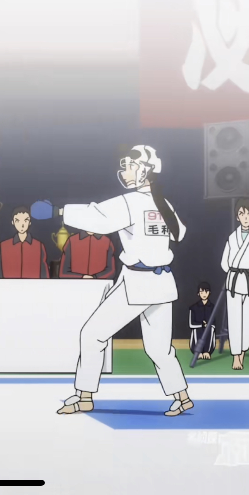
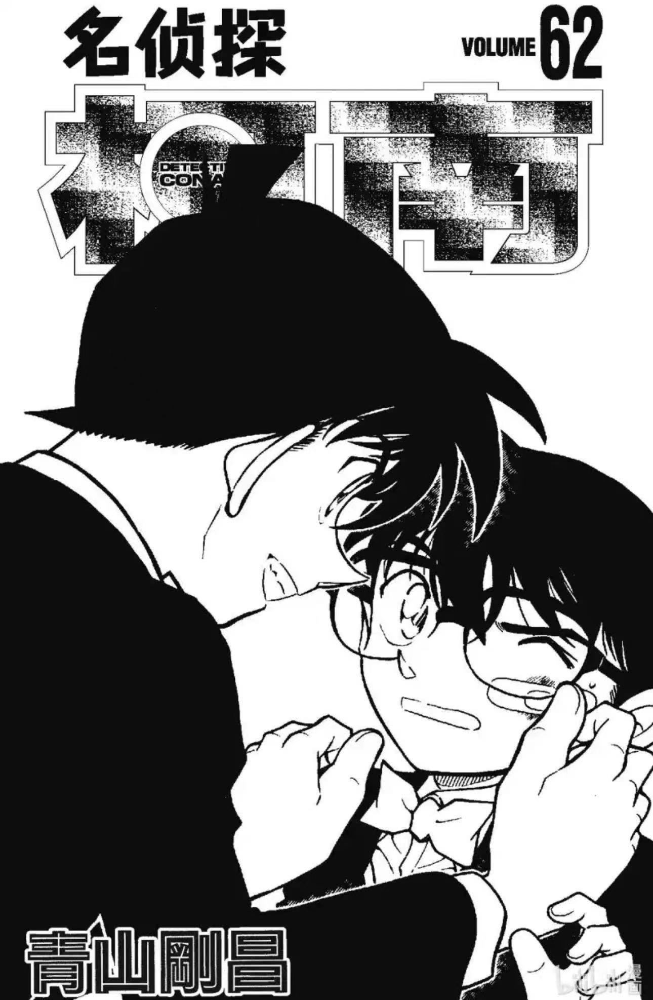
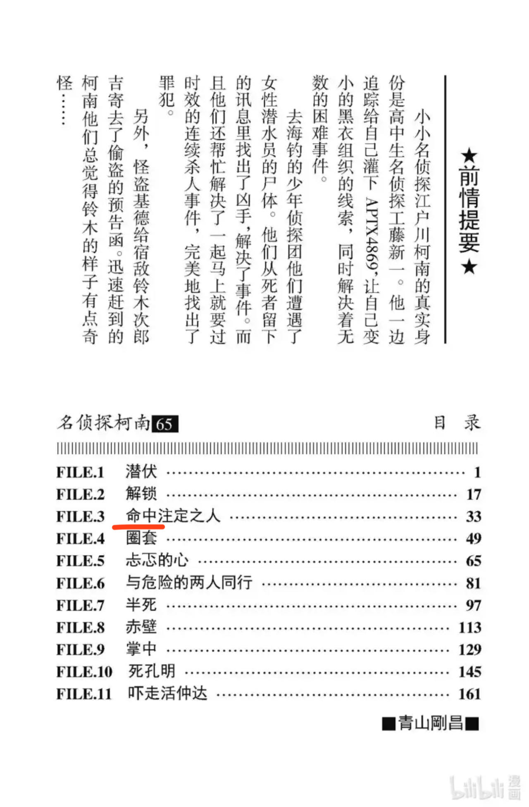
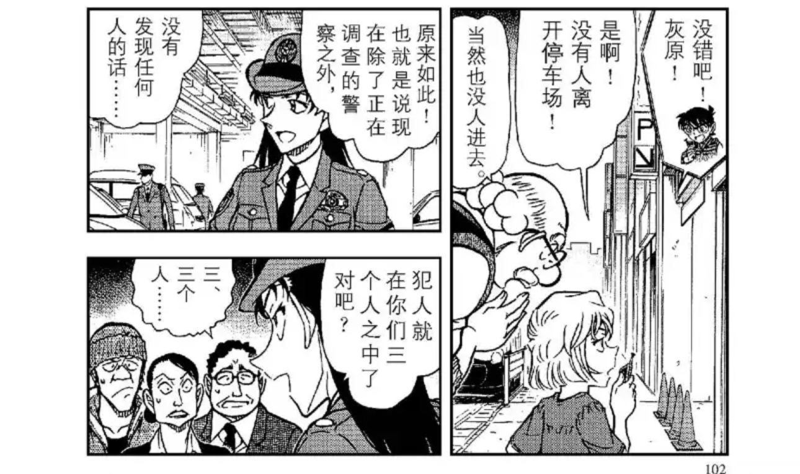
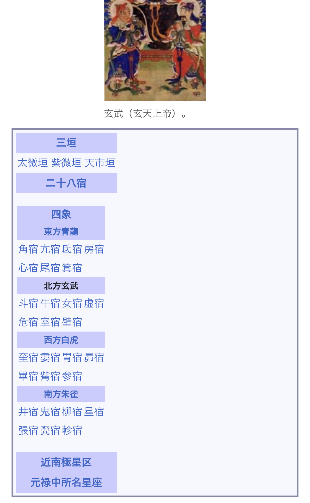
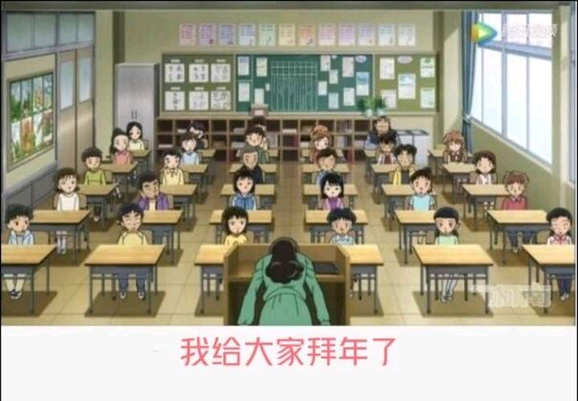
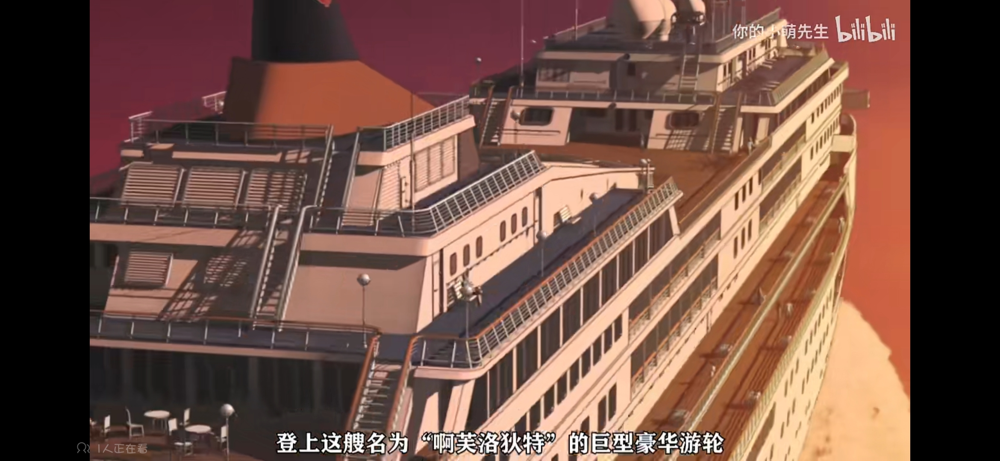
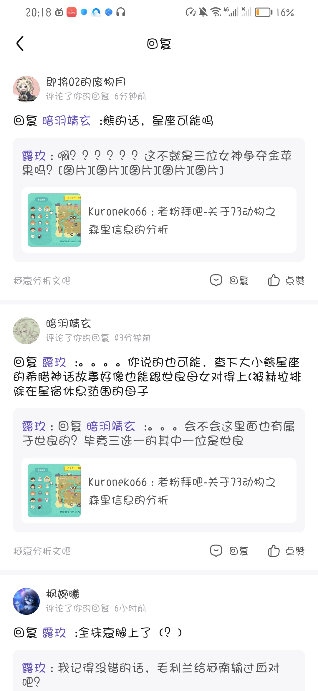
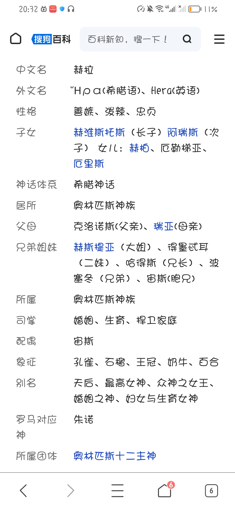

大家好，这里是15年柯哀粉回坑拜吧，本贴主要分析老贼动森游戏里的暗藏的信息。
首先本人是一枚动物之森资深玩家及建岛爱好者。先为不熟悉游戏的读者简单介绍一下游戏机制。
动物之森是一个开放式的模拟生活游戏。可以自己设计岛屿上的景色和建筑物，邀请岛民（10只小动物）上岛居住。73本人的岛上有四个玩家账号：柯南.小哀.兰.基德，分别对应四种扑克牌花色此为老生常谈不多介绍。
本篇主要针对岛上设计可以对应原篇的一些设计之处来挖掘73隐藏的信息。整个岛上的信息量会比较大，请大家集思广益。宁可过度解读，不可不以怀疑的眼光看待73亲手肝出来的每一寸细节！！他的小岛没有1000小时可建不出来。。。。。。
*本篇内容较多，容我慢慢来更。
先上地图：: 整理一下岛上动物：
月兔 兔子
蜜雪儿 兔子
理佳 老鼠
庞克斯 象
杰克 猫
柠檬娜 猫
小润 松鼠
莫妮卡 狼/狐狸
天圣 猴子
蕾哈娜 马
首先本人是一枚动物之森资深玩家及建岛爱好者。先为不熟悉游戏的读者简单介绍一下游戏机制。
动物之森是一个开放式的模拟生活游戏。可以自己设计岛屿上的景色和建筑物，邀请岛民（10只小动物）上岛居住。73本人的岛上有四个玩家账号：柯南.小哀.兰.基德，分别对应四种扑克牌花色此为老生常谈不多介绍。
本篇主要针对岛上设计可以对应原篇的一些设计之处来挖掘73隐藏的信息。整个岛上的信息量会比较大，请大家集思广益。宁可过度解读，不可不以怀疑的眼光看待73亲手肝出来的每一寸细节！！他的小岛没有1000小时可建不出来。。。。。。
*本篇内容较多，容我慢慢来更。
先上地图：: 整理一下岛上动物：
月兔 兔子
蜜雪儿 兔子
理佳 老鼠
庞克斯 象
杰克 猫
柠檬娜 猫
小润 松鼠
莫妮卡 狼/狐狸
天圣 猴子
蕾哈娜 马
cy
2024-02-24 07:37 | 贴吧用户_a5P2AeA:cy是什么意思啊？2024-02-24 20:29 | 翠花上酸菜945:回复 贴吧用户_a5P2AeA :插眼，就是留个评论等更新了再来看
cy
cy
已收藏，莫辜负（）
cy
好吧，我只想说老贼你有时间肝这个快点去画主线啊，再不画小哀都要被气跑了
2024-01-10 21:19 | 梦哀:但是动森真的好好玩2024-01-10 23:12 | 康娜派蒙✨:回复 梦哀 :真的吗2024-01-11 01:54 | º停下:回复 康娜派蒙✨ :是这样的2024-01-19 08:12 | 怪盗基德WYH994:就是，漫画不画，一天天就知道玩游戏，动不动就休刊2024-01-20 21:31 | bearaven:换个视角吧，动森也是一手创作物的一部分
cy
cy
 人呢
人呢2024-01-10 11:05 | 队友thet☞:我超打分哥2024-01-13 13:09 | 雁影◇妃:记得来看2024-01-17 13:10 | 不朽·天真:离谱 绿牌打分哥
cy
cy
好好好
cy
cy
楼主呢？
晕了 审核这么久才放出来 稍等我上个电脑
罕见的分析动森的帖子
cy
上岛先去左下角打卡一下博士和小哀的家：
门外细节：门上是圣诞花环（圣诞过了也没换），门口停黄色甲壳虫车。 一楼大厅：
很还原大家坐在一起的吧台，饮料应该是给孩子们的。
细节是之前的玉兔摆件换成龙摆件（右上角绿色），说明此处是生肖摆件。 一楼小房间1：看上去是小哀和博士的工作室 一楼小房间2：小哀浴室，很女孩子气，挂着玉兔肖像（这个暗示太明显了）
一楼小房间2：小哀浴室，很女孩子气，挂着玉兔肖像（这个暗示太明显了）
门外细节：门上是圣诞花环（圣诞过了也没换），门口停黄色甲壳虫车。 一楼大厅：
很还原大家坐在一起的吧台，饮料应该是给孩子们的。
细节是之前的玉兔摆件换成龙摆件（右上角绿色），说明此处是生肖摆件。 一楼小房间1：看上去是小哀和博士的工作室
2024-01-10 19:41 | 鄙人是▫:博士家真是豪宅2024-01-15 18:11 | 雨季雨翼:这个饮料，有茶，果汁，还有两杯冰咖啡。对了，谁爱喝冰咖啡来着2024-02-20 12:00 | 贴吧用户_79ZQMtP:回复 雨季雨翼 :兄弟牛啊我都没发现i你2024-02-23 08:08 | 贴吧用户_a4DSyME:2024-03-12 01:44 | 放假最快乐:好温馨的屋子
没1000小时可叫不出来 说起来我就是去年看到一些消息是和动森有关开始玩的动森
说起来我就是去年看到一些消息是和动森有关开始玩的动森
说起来我就是去年看到一些消息是和动森有关开始玩的动森2024-01-10 21:20 | 梦哀:光他那些角色头像都不知道花多久一点一点画的
下面来到我的第一个推论--双兔傍地走
已知岛上只有两只兔子，有前辈已经推出月兔=小哀。那我大胆猜想了一下，另一只兔兔蜜雪儿是不是柯南?
本来我被这只妹妹头可爱的小兔子外表疑惑住了，以为它是步美这种较可爱的角色。但是介于它的家离小哀家很近（请时刻关注一楼地图位置），我就去看了一下。这一看，我惊讶地发现了一些有趣的东西。。。。。
首先从门外说起： 这是蜜雪儿的家外观，请注意，蜜雪儿家门口和博士/小哀家后墙中间有一座红玫瑰婚礼钟。图片右上角还有一座粉色婚礼钟挨着一座蓝色婚礼钟。
先解释一下婚礼钟是一个婚礼季限定的物品，有不同颜色。
我觉得红色=哀，粉色=兰，蓝色=新一。这个应该是比较容易看出的。说明现在的情势是SR还在一起的。后面可以关注一下这几个婚礼钟的摆放位置。 进到蜜雪儿家里，我发现，这个兔宝墙上赫然挂着。。。滑板。。。 玩过动森的应该知道，小动物的初始家具是设置好的。如果后面不去大改，那么就一直是初始家具的样子。这个滑板是蜜雪儿家里自带的。
然后这个兔宝它的公式服怎么看怎么眼熟。。。 我赶紧去查了动森小动物图鉴，发现它还是个男兔宝！这真的是完美对应了可爱小柯。。。
已知岛上只有两只兔子，有前辈已经推出月兔=小哀。那我大胆猜想了一下，另一只兔兔蜜雪儿是不是柯南?
本来我被这只妹妹头可爱的小兔子外表疑惑住了，以为它是步美这种较可爱的角色。但是介于它的家离小哀家很近（请时刻关注一楼地图位置），我就去看了一下。这一看，我惊讶地发现了一些有趣的东西。。。。。
首先从门外说起： 这是蜜雪儿的家外观，请注意，蜜雪儿家门口和博士/小哀家后墙中间有一座红玫瑰婚礼钟。图片右上角还有一座粉色婚礼钟挨着一座蓝色婚礼钟。
先解释一下婚礼钟是一个婚礼季限定的物品，有不同颜色。
我觉得红色=哀，粉色=兰，蓝色=新一。这个应该是比较容易看出的。说明现在的情势是SR还在一起的。后面可以关注一下这几个婚礼钟的摆放位置。 进到蜜雪儿家里，我发现，这个兔宝墙上赫然挂着。。。滑板。。。 玩过动森的应该知道，小动物的初始家具是设置好的。如果后面不去大改，那么就一直是初始家具的样子。这个滑板是蜜雪儿家里自带的。
然后这个兔宝它的公式服怎么看怎么眼熟。。。 我赶紧去查了动森小动物图鉴，发现它还是个男兔宝！这真的是完美对应了可爱小柯。。。
2024-01-10 12:44 | 雁影◇妃:补充一下 5月份生日的金牛男兔2024-01-10 12:45 | 贴吧用户_0795E8E:哎呀，跟m26柯南那个动作有点像哦，是不是柯兔子又想起什么了2024-01-10 13:30 | 冬之夏利◆:卧槽这个公式服2024-01-10 17:36 | 🍁傻敷敷的小颜:衣服上有K，除了小柯还是谁2024-01-10 19:44 | 鄙人是▫:博士家的钟在哪里2024-01-10 21:29 | 梦哀:歪个楼，蜜雪儿真的好可爱好可爱，小嘴甜的很2024-01-11 10:21 | 魔羯的眼:婚礼钟前面那些★有什么意思吗？2024-01-12 00:44 | 雁影◇妃:回复 魔羯的眼 :不排除是73埋的暗号，我这边没解读出来。在动森里地上的星星就是这块地下面埋着东西可以挖出来的意思。（如化石和陶俑）2024-01-12 00:53 | 魔羯的眼:回复 雁影◇妃 :单纯的理解的话就是兰和新一身上有什么可以深挖的伏笔'但是又不好解释柯南比兰少2024-01-12 06:16 | 贴吧用户_0795E8E:回复 魔羯的眼 :圣诞星星组成的25,圣诞节2024-01-12 06:16 | 贴吧用户_0795E8E:不是兰身上的而是表示她位置不对2024-01-13 09:17 | 咿哈来啦:这个兔兔有点“画女硬说男”的感觉，好可爱2024-01-14 02:48 | 暗蓝heart:完全一致！2024-01-16 02:31 | Narkoah:回复 魔羯的眼 :如果是指漫画第52卷的话，里面有一个假扮婚礼说不定有点联系。2024-01-19 08:24 | 怪盗基德WYH994:卧槽，无敌2024-01-20 05:25 | 魔羯的眼:回复 Narkoah :好像没有那么简单了 楼主下面新发的还有三个星星2024-01-20 05:31 | Narkoah:回复 魔羯的眼 :是的，后面我看到又多了三颗星星，所以又猜了一次glass用过的盲文，不过貌似不太对，只能等楼主快点端上来了。2024-01-20 21:39 | bearaven:这个兔子看日文片假名，常见的男性化翻译名是“米切尔”。 嗯，语源和米迦勒一致。说来还有些黑色幽默啊。2024-01-20 22:21 | bearaven:回复 bearaven :纽约篇兰的天使称号来源就是无意帮助扮阿芙罗狄忒的杀了扮米迦勒的。 作为兰发觉自己喜欢上新一“神”的开端，还真的可以反反复复挖。2024-01-30 03:12 | Asura兔子:回复 雁影◇妃 :5个星星代表着目前柯南变成新一的次数？🤔（白干、危命、死罗神、伦敦、红修）2024-02-08 01:10 | 🍁枫林漫步🍁:座右铭……有点小柯的风格……2024-02-08 11:16 | 贴吧用户_GMSD67V:回复 Asura兔子 :其实是用了五次才稳住最狂热的那个粉丝2024-03-03 11:42 | 无内鬼☜♋:有时候真的奇怪这两只角色设定都几乎和小柯小哀量身定做的小兔子，真不是青山和任天堂有什么交易吗2024-03-12 14:17 | 暗蓝heart:有个问题，73很早就画了柯南的这套皮肤，但动森里的蜜雪儿不是后出的吗，为什么会这么像
https://tieba.baidu.com/p/8836116692
关于小哀=小兔子这个意向的帖子之前吧里前辈们总结的很好，没看全的可以去上贴补充知识点。
那么关于动森里小哀=月兔的部分我再加几笔。
这是月兔家正面，有两只小兔子。（甚至一只白色一只绿色和月兔蜜雪儿颜色对应） 我还发现月兔家后山的竹林有一轮圆月。
此处再让我call back一下柯志这话的月&兔
我还发现月兔家后山的竹林有一轮圆月。
此处再让我call back一下柯志这话的月&兔
 这是月兔家内景。整体是宇宙战舰风，其中有一个工作桌好像在研究什么人体实验。这可不就是哀在做的APTX研究。再解释下因为月兔初始不是这套家具，所以这个内景应该是青山后期自己设计的。
好以上就是第一个推论结束--双兔傍地走。
这是月兔家内景。整体是宇宙战舰风，其中有一个工作桌好像在研究什么人体实验。这可不就是哀在做的APTX研究。再解释下因为月兔初始不是这套家具，所以这个内景应该是青山后期自己设计的。
好以上就是第一个推论结束--双兔傍地走。
欢迎讨论补充。楼主先睡了。我好肝つ﹏⊂
关于小哀=小兔子这个意向的帖子之前吧里前辈们总结的很好，没看全的可以去上贴补充知识点。
那么关于动森里小哀=月兔的部分我再加几笔。
这是月兔家正面，有两只小兔子。（甚至一只白色一只绿色和月兔蜜雪儿颜色对应）
欢迎讨论补充。楼主先睡了。我好肝つ﹏⊂
2024-01-10 12:58 | 雁影◇妃:再补充一下，月兔门口的两只兔子，把白兔往左平移到绿兔子眼前，像不像兔子版眼镜超人2024-01-10 13:06 | 贴吧用户_0795E8E:回复 雁影◇妃 :是的啊，所以73你快画啊2024-01-11 00:54 | 贴吧用户_7M4K71P:月&兔出自漫画哪啊，没印象了2024-01-11 00:58 | 雁影◇妃:回复 贴吧用户_7M4K71P :752话2024-01-11 21:32 | huiyuan志保:月兔家由竹子簇拥着，，还有一种竹取的感觉呢2024-01-12 00:33 | 雁影◇妃:后面围在竹子周围的是什么花？还有下面彩色的花是牡丹吗？
回复 huiyuan志保 :是菊花 竹林里是金色玫瑰2024-01-12 16:09 | 冴木弓弦🍦:月兔初始家具是太空，具体可以看https://animalcrossing.soopoolleaf.com/zh/acna/Ruby/ 老贼这是全部大改了2024-01-15 18:16 | 雨季雨翼:我想问一下，要怎么给小动物家做装饰?疯狂送他们东西吗？还有怎么让特定的小动物上岛?青山这个岛完成度太高了，一定有我不知道的操作2024-01-15 19:48 | 雁影◇妃:回复 雨季雨翼 :后面有一个拓展包 去乔美的岛打工 帮小动物装修30个别墅之后可以带来给自己岛小动物的房子装修2024-01-15 21:24 | 雁影◇妃:回复 雨季雨翼 :特定小动物应该可以买amibo2024-01-22 09:26 | 花与水º:回复 雨季雨翼 :特定小动物上岛可以在有空地的时候用机票一次次刷，直到刷到想要的，或者和别人换（小动物定期会提出离岛，可以sl出这个状态，这时候你去对方岛上和他对话就可以让他去你的岛上）
lz晚安 火速更新！超级爱看
火速更新！超级爱看
火速更新！超级爱看好贴！等更新！
已收藏，莫辜负！
楼主晚安💤 明天见
明天见
明天见等更新
cy
蹲
随便查了一下，那些宇宙风家具还是蜜雪儿解锁的？
2024-01-10 20:14 | 贴吧用户_0795E8E:乖乖，一跃到月球，就这么想见月兔么2024-01-10 22:01 | ✨星光🌟魔女💫:是说给蜜雪儿盖别墅会提供这些家具的意思，解锁这些家具不一定需要邀请蜜雪儿盖别墅（）2024-01-10 22:07 | ✨星光🌟魔女💫:回复 ✨星光🌟魔女💫 :提供的家具可以理解成小动物设计主题的暗示2024-01-10 22:30 | 稻叶桑桑楠♬:回复 ✨星光🌟魔女💫 :原来如此
cy
好有意思，cy
好有意思，摩多摩多
cy，先标记一下
cy
cy
Mark
有点意思，cy
补充一下，月兔的官方生日是12.25，蜜雪儿的生日是五月，完全能对得上大家的猜测。
月兔应该就是对应的小哀
月兔应该就是对应的小哀
坐等更新
没有动森，爱莫能助，只能帮忙暖贴
已收藏，莫辜负
780793073，激进乐观原作柯哀党聚集地，欢迎楼主来玩
2024-01-10 22:01 | 枫月1990:贴吧需要护关一下，才能发消息2024-01-10 22:13 | 雁影◇妃:回复 枫月1990 :关注你啦2024-01-16 21:35 | 贴吧用户_QKC714N:回复 枫月1990 :我加你了
想问一下楼主，兔子和猫都有两只，这里有没有什么说法？
2024-01-10 22:38 | 雁影◇妃:我后面会更 在上班
有意思
在动森超话看到有意思的小互动：动森岛上同时有蜜雪儿和月兔，蜜雪儿很喜欢去月兔家，蜜雪儿会赞叹月兔家很成熟，度假岛蜜雪儿也会想和住在月亮上的兔子一起玩耍，合住以后两小只经常成对出现在度假岛玩（我代了 ，我也要安排蜜雪儿和月兔合住
，我也要安排蜜雪儿和月兔合住 ）
）
，我也要安排蜜雪儿和月兔合住）
2024-01-10 22:56 | 木哀可士新心:太甜了5552024-01-10 23:36 | 梦哀:我也我也，我要把他们两房子放一起2024-01-11 06:38 | 贴吧用户_GatKZ5y:动森里的小柯也非常主动
有一说一蜜月这对cp还挺有人气的，73你是不是在偷偷的代餐（）
2024-01-10 23:39 | Asura兔子:对，还有专属的cp名：蜜月cp
这下不得不上线把其他人换掉，换成蜜雪儿了
cy🔥🔥🔥
我炸岛重玩了，我要把蜜雪儿和月兔放一个爱心岛上合住
2024-01-10 23:58 | 未松君:看得我也心动想炸岛了😂2024-01-13 09:10 | 贴吧用户_Q4eCR5W:绷不住了2024-02-21 07:44 | 世界从此不温柔:哥们还是你绝
cy
cy，顺便又想肝动森了谁懂，刚开始玩真的一天能玩16h
2024-01-11 01:53 | 梦哀:我已经把本来500小时的岛炸了重玩了，最近又开始沉迷2024-01-11 04:24 | RE-Zero:回复 梦哀 :我完了200小时的岛因为换机器卡带没在身边也炸了……不过还好还没开始大装修，也不算太心痛
好贴收藏了
很有趣，不知道您后面方不方便把其他角色的房间也大致说说，很想了解总体情况，但是吃了不会玩动森的亏
2024-01-11 00:31 | 雁影◇妃:会慢慢发！2024-01-11 00:33 | 相见º欢:回复 雁影◇妃 :感谢，辛苦啦！

cy
本来我觉得动森纯场外看看剧场版消息就行了，结果听说连着两年放生日蛋糕。。蚌埠住了
2024-01-13 14:16 | 柯哀♬:但是小动物的生日本来就会有蛋糕的……这是系统自带的2024-01-13 14:23 | 雁影◇妃:回复 柯哀♬ :她说的应该是73圣诞节特意在小哀的房子里放了生日蛋糕 不是月兔房里的生日蛋糕2024-01-13 14:43 | 柯哀♬:回复 雁影◇妃 :那确实
cy
cy
cy
cy
cy
cy
楼主还不更 急急急急急急急
cy
轻置玉臀
楼主快回来～

cy
cy
cy
有意思
cy！！最想看到后续的一集
cy
cy
接下来请重点分析下松鼠和两只猫
2024-02-16 23:06 | 张家源😷:怎么在这吧也能看到你2024-02-20 23:24 | 贴吧用户_GWXE2DQ:今天有比赛了，打分哥赶快发帖
急急急急急急急急急急急楼主快更
我要大代特代
我要大代特代
cy
赶上直播了
非常有意思！支持！
cy
cy
cy
cy
预告一下，今天会发第二篇分析
2024-01-12 00:53 | 寡断neve:2024-01-12 01:29 | lredbeanl:快更快更2024-01-12 01:37 | 綾波♬哀:更新更新！2024-01-12 04:35 | ✨星光🌟魔女💫:快更快更
cy
cy
先不说公式服都是白蓝+K，蜜雪儿生日也是5月……5.4工藤新一生日，5.5高山南生日（也是高山南和青山结婚日）
又是兔子又是鲨鱼的真就一点隔离没有呗
又是兔子又是鲨鱼的真就一点隔离没有呗
2024-01-13 08:59 | 贴吧用户_GWG1ZZE:兔兔好可爱2024-01-27 19:27 | 星辰永夜亦无夜:这衣服也太像眼镜超人的经典款了吧2024-02-24 20:07 | Sharon🌳:5+4+5+5＝19
蹲蹲蹲
来了来了，感谢大家留言~
楼主平时上班，分析需要大量阅读和观察，请大家耐心。
先叠甲，除了第一个推论双兔我觉得非常锤以外。剩余推想皆为楼主本人臆断。有主观过度解读的风险，大家汲取自己需要的信息再进行辨析。本人是漫画党，柯哀乐观党，比较喜欢细节分析，有新发现会持续补充进来。欢迎各位大佬来交流。
第二个推论前，还是先岛上观光游。此次带大家游览柯南家（也是73自己的家）。
这是柯南家外： 一楼大厅：墙上挂着两个亲儿子，柯南和快斗
摆设就是73漫画工作室的感觉。门口玉兔摆件换成龙摆件。 另一面墙上挂着岛上小动物的照片（在住小动物和离岛小动物都有）。月兔在最中间哦。
有国际象棋的摆件。
（此处再解释一下动森里面家具摆设的样式仅能改变颜色外观，无法改变更细化的外观。比如象棋棋盘，上面棋阵是改动不了。钟表上的时间就是按照现实世界，不能自己调整到指定的时刻。）
可以看出的是，国际象棋确认是73漫画里非常重要的意向符号。 一楼小房间1： 73的卧室，摆设简朴，很像大龄宅男的房间 房间里挂着一个女生的头像，我没看出来是谁。 一楼小房间2：电影情报屋， 有M27的角色和剧情 一楼小房间3：复刻福尔摩斯房间，此处callback一下小栗《1/2福尔摩斯》（福尔摩斯一半推理一半化学）。没看过可以去阿B补一下。
地下室：电影院，仍然是老贼放新电影情报的的地方。顺便一提问号嘉宾一个公开出来是青子，另一个有人推理说是剑勇传说的鬼猛丸（未被证实）。
一楼小房间3：复刻福尔摩斯房间，此处callback一下小栗《1/2福尔摩斯》（福尔摩斯一半推理一半化学）。没看过可以去阿B补一下。
地下室：电影院，仍然是老贼放新电影情报的的地方。顺便一提问号嘉宾一个公开出来是青子，另一个有人推理说是剑勇传说的鬼猛丸（未被证实）。

楼主平时上班，分析需要大量阅读和观察，请大家耐心。
先叠甲，除了第一个推论双兔我觉得非常锤以外。剩余推想皆为楼主本人臆断。有主观过度解读的风险，大家汲取自己需要的信息再进行辨析。本人是漫画党，柯哀乐观党，比较喜欢细节分析，有新发现会持续补充进来。欢迎各位大佬来交流。
第二个推论前，还是先岛上观光游。此次带大家游览柯南家（也是73自己的家）。
这是柯南家外： 一楼大厅：墙上挂着两个亲儿子，柯南和快斗
摆设就是73漫画工作室的感觉。门口玉兔摆件换成龙摆件。 另一面墙上挂着岛上小动物的照片（在住小动物和离岛小动物都有）。月兔在最中间哦。
有国际象棋的摆件。
（此处再解释一下动森里面家具摆设的样式仅能改变颜色外观，无法改变更细化的外观。比如象棋棋盘，上面棋阵是改动不了。钟表上的时间就是按照现实世界，不能自己调整到指定的时刻。）
可以看出的是，国际象棋确认是73漫画里非常重要的意向符号。 一楼小房间1： 73的卧室，摆设简朴，很像大龄宅男的房间 房间里挂着一个女生的头像，我没看出来是谁。 一楼小房间2：电影情报屋， 有M27的角色和剧情
2024-01-12 07:34 | 黑桃A方块4:那个是和叶2024-01-12 16:32 | 贴吧用户_0795E8E:73房间里面放置老广播/录音带不仅突出了录音带的作用，也有点证实了我的一个猜测，就是他对福尔摩斯的印象也有一部分是来自福尔摩斯广播剧。 这里面其实有很多东西可以挖，比如一些酒的设定2024-01-12 19:13 | 鄙人是▫:回复 黑桃A方块4 :神和叶2024-01-13 03:31 | 某天君00:那是冲野洋子
那张真的不是剑勇传说的女主角吗。而且剑勇传说男主角是高山南配音，如果73想暗示自己和南姐的话用女主角也不是没有道理。2024-01-13 03:38 | 雁影◇妃:回复 某天君00 :主要那个轮廓像个光头2024-01-13 03:41 | 某天君00:回复 雁影◇妃 :我是说上面那个房间里不认识的女孩子😂下面的黑色轮廓的话我确实也判断不出来。2024-01-13 03:49 | 雁影◇妃:回复 某天君00 :哦哦 我觉得比较像你说的这个诶！2024-01-13 09:23 | 咿哈来啦:卧室里这个照片也许是象征着南姐？2024-01-13 11:54 | Hakuno♬:回复 黑桃A方块4 :是峰莎也加，剑勇传说女主，和叶是另外一个角度的头像2024-01-14 01:26 | 烛点◆碧落天:峰莎也加，剑勇传说的女主2024-01-14 11:45 | 🍁傻敷敷的小颜:回复 某天君00 :真的是峰莎也加2024-01-27 10:50 | Hakuno♬:青山也太爱了
足球旁边放了雪花片2024-02-21 10:33 | feather034:回复 鄙人是▫ :我也觉得是冲野洋子，两张床估计住的柯南和毛利小五郎
下面来到我想重点讲的老贼家的二楼，宇宙战舰屋。
这个房间的内饰就是一座宇宙战舰的内部，重点来了，房间里挂着两人的海报：小润（松鼠）&月兔
月兔在动森的设定就是想回月球的小兔子，初始家具都是太空人，宇宙飞船，月球地板，等等。而且后来月兔家也被改成了宇宙战舰，我可以理解它为什么出现在这里。
但是小润嘛。。。。。。作为岛上唯一一只松鼠，大家比较关注它意指哪个角色。毕竟前有人推理松鼠和毛利兰间有一些关联。
好的那么到这里我将献上我的第二个推论：杰克小润CP=美帝铲组
容我慢慢道来。
好的那么到这里我将献上我的第二个推论：杰克小润CP=美帝铲组
容我慢慢道来。
第二个推论：杰克小润CP=美帝铲组
首先来再看下岛上地图，我标红部分也就是整个岛的右侧是月兔家-小润家-杰克家 首先介绍一下动森的人气王杰克（小润也是大人气角色并且和杰克有cp） 请看杰克苏的金发，和他公式服这套灰西装马甲。眼熟吗？
杰克家外观：
杰克家内景：细节里面的摆设都是黑色（小狗，机器人，电饭煲）这个应该是73送给杰克他摆出来的，不是自带的家具。对应他现在黑方的身份。
杰克家后面有一座陵园，里面有三座坟墓，埋着零的三个警校同学。（没有景光）
推到这里我就按照杰克=安室透，所以杰克的cp小润有可能是秀一来倒推，然后我果然发现了一些有趣的事情。
请看杰克苏的金发，和他公式服这套灰西装马甲。眼熟吗？
杰克家外观：
杰克家内景：细节里面的摆设都是黑色（小狗，机器人，电饭煲）这个应该是73送给杰克他摆出来的，不是自带的家具。对应他现在黑方的身份。
杰克家后面有一座陵园，里面有三座坟墓，埋着零的三个警校同学。（没有景光）
推到这里我就按照杰克=安室透，所以杰克的cp小润有可能是秀一来倒推，然后我果然发现了一些有趣的事情。
首先来再看下岛上地图，我标红部分也就是整个岛的右侧是月兔家-小润家-杰克家 首先介绍一下动森的人气王杰克（小润也是大人气角色并且和杰克有cp）
2024-01-12 06:24 | 迪迪巴巴💕:话说零的执行人里面不是就是电饭煲炸弹吗2024-01-12 16:34 | 贴吧用户_0795E8E:2024-01-13 09:27 | 咿哈来啦:安室也确实养了一只小狗，房里有只狗很合理。2024-01-13 10:49 | 婧er倪:为啥会没有景光的坟墓啊，这个好可疑2024-01-13 11:27 | 雁影◇妃:回复 婧er倪 :他不是卧底么 还没明身份2024-01-13 20:43 | 黄儿12345:回复 婧er倪 :景光的死无法被公之于众吧2024-01-15 04:16 | 奥斯丁格理芬:那个灯不会也是坟吧？毕竟每个坟前都有花2024-01-15 04:17 | 雁影◇妃:回复 奥斯丁格理芬 :应该是景光的灯2024-01-17 02:12 | 旧日评论者:老贼玩动物之森也要刀人吗？2024-01-20 22:33 | bearaven:非常确定了，如果要说真正的青山主题乐园在哪里，与其说现实中有营业成分不得不有他人插手的那个，不如说是动森上的这座2024-01-29 07:45 | YarnKa:回复 bearaven :你的意思是青山真正的真爱幻想乡吗2024-02-14 00:19 | 13199057986d:2024-02-20 11:29 | 春晖舰长:我真的哭了三座坟
ray（rei）mond。。明示啊2024-03-07 20:58 | 人间梦绕:话说动森里面墓碑应该只有两种造型（左数第一个和第三个），所以我觉得第二个石碑与第四个灯都是坟墓，只是为了不让造型重复而借用有类似意向的道具
首先先介绍下小润：
小润的日语名引起了我的注意，和秀一的秀发音很像。（朱蒂老师叫他秀。）
小润じゅん（Jyunn）
秀 しゅう(Syuu)
除此之外我没在人设发现太多，毕竟动森又不是为你老贼亲身打造的，哪那么巧，全部按照你的角色来设计小动物。
但接下来我会分成3点论证为什么老贼的岛上小润=秀一
1. 镜像的红色电话亭
2. 海边淋湿的初恋
3. 小润与宇宙战舰
小润じゅん（Jyunn）
秀 しゅう(Syuu)
除此之外我没在人设发现太多，毕竟动森又不是为你老贼亲身打造的，哪那么巧，全部按照你的角色来设计小动物。
但接下来我会分成3点论证为什么老贼的岛上小润=秀一
1. 镜像的红色电话亭
2. 海边淋湿的初恋
3. 小润与宇宙战舰
2024-01-12 07:57 | 音子0806:发音其实不太像的2024-01-12 09:45 | 雁影◇妃:回复 音子0806 :じゅ和しゅ其实就差个浊音2024-01-27 22:57 | 知己恋人柯哀:回复 雁影◇妃 :但是秀有长音，小润有拨音，小润的读音更像“君”，秀的就是像“秀”2024-01-27 23:02 | 雁影◇妃:回复 知己恋人柯哀 :小润应该是啾恩连读的音，秀是西柚乌-，汉字的话不太能精准表达出来。不过说回来这个名字的部分不是很重点，也不用太纠结2024-02-20 12:38 | 春晖舰长:松鼠警官绫小路的声优置鲇龙太郎也是秀一的猫皮冲矢昴的声优，鉴于青山本人蛮喜欢搞声优梗的，这算是拐弯的秀一和松鼠搭边了
第一点：镜像的红色电话亭
首先想请还没看过鹿小侬《新兰秀双重错位》的各位去阿B补一下。
我在73岛上闲逛的时候发现他造了个伦敦桥的假景。当然动森里没有大本钟这种建筑物，所以老贼用谷仓+立钟做了个大本钟。那么红色电话亭，大本钟这两个非常明显的元素有了。这条人造桥意指伦敦桥是板上钉钉。 而贴着伦敦桥的小动物家就是小润家。伦敦桥和小润家以红色电话亭为对称轴 为什么我要强调红色电话亭。因为，其实我一直对于秀兰二人在电话亭外那次相遇有深刻印象。初读的时候甚至有点嗑，我来给大家call back一下。 秀：你还在哭啊。。。
兰：诶？
柯南os: 还在？
秀：你总是在哭。。。
柯南：总是？
兰：不可以吗？
不是让大家嗑秀兰但这段台词其实把男人女人重逢那种氛围描写的很好。然后这里的柯南一脸懵逼像个局外人，插不进去他们俩重逢的那种暧昧的氛围里。
好的以上主观嗑秀兰我检讨。只要不拆我柯哀我都可。
重点是本页是彩图，风雪电话亭，红色的！！这里从红色电话亭出来的秀一动作是镜像反转了伦敦桥从红色电话亭新一，这里不赘述，请补课双重错位轮。
首先想请还没看过鹿小侬《新兰秀双重错位》的各位去阿B补一下。
我在73岛上闲逛的时候发现他造了个伦敦桥的假景。当然动森里没有大本钟这种建筑物，所以老贼用谷仓+立钟做了个大本钟。那么红色电话亭，大本钟这两个非常明显的元素有了。这条人造桥意指伦敦桥是板上钉钉。 而贴着伦敦桥的小动物家就是小润家。伦敦桥和小润家以红色电话亭为对称轴 为什么我要强调红色电话亭。因为，其实我一直对于秀兰二人在电话亭外那次相遇有深刻印象。初读的时候甚至有点嗑，我来给大家call back一下。 秀：你还在哭啊。。。
兰：诶？
柯南os: 还在？
秀：你总是在哭。。。
柯南：总是？
兰：不可以吗？
不是让大家嗑秀兰但这段台词其实把男人女人重逢那种氛围描写的很好。然后这里的柯南一脸懵逼像个局外人，插不进去他们俩重逢的那种暧昧的氛围里。
好的以上主观嗑秀兰我检讨。只要不拆我柯哀我都可。
重点是本页是彩图，风雪电话亭，红色的！！这里从红色电话亭出来的秀一动作是镜像反转了伦敦桥从红色电话亭新一，这里不赘述，请补课双重错位轮。
2024-01-12 08:55 | huiyuan志保:其实拿出秀一与兰的这一段，描写的真的很唯美2024-01-12 09:49 | 雁影◇妃:看了漫画彩图我又想补充，小兰红外套，蓝裙子。秀一代表红色，小兰是蓝色，自古红蓝。。。（为什么我总在分析秀兰，自罚一杯）这样一说新志也是红蓝，新一公式服的蓝西服，质保白大褂里面的红裙子。哎 脑补过度警告了⚠️2024-01-12 16:36 | 贴吧用户_0795E8E:让兰擦干眼泪成长的人2024-01-13 09:05 | 贴吧用户_Q4eCR5W:回复 huiyuan志保 :主要是秀一真的硬汉...能磕秀兰全是秀一的好人设撑起来的2024-01-13 10:51 | 婧er倪:回复 贴吧用户_Q4eCR5W :2024-01-13 16:26 | 雾崎😷:回复 婧er倪 :主要还是兰人设拉胯导致有关她的cp我都蛮难受2024-01-14 03:28 | 诩不诩:回复 雾崎😷 :点的，我浑身难受，还是更爱秀明2024-01-15 10:37 | 清甜的曲苏:回复 huiyuan志保 :确实，单拎出来，下雪的夜晚，红色的电话亭，哭泣的女生和高大帅气的男人。塞进电影里都很美2024-01-15 11:07 | 此生欲与江湖老:我有点崩溃了2024-01-19 08:46 | 怪盗基德WYH994:回复 婧er倪 :不是新(柯)兰就行，其他什么兰我都无所谓2024-01-20 22:38 | bearaven:比起秀兰，我关注的在于：其实兰的眼泪就是该这样应对，根本犯不着大惊小怪，她哭得快停得也快，太当回事就是互相折磨2024-01-21 13:13 | leo0810:兰在塑造上越来越贴近明美，这不就是等于在潜在贴近和秀一的CP，确实都能连上2024-01-27 22:06 | 声茗显赫zcm:当初这段看动画，我就看出了不对劲2024-02-17 22:15 | LightW☜:回复 bearaven :啊 说的好 点了2024-03-08 12:00 | 贴吧用户_G4RPJRX:真的不想让∠沾边到秀一，根本不配，秀一也不可能看上兰的。。。他和兰还有什么互动吗 一点CP感都没有啊。还不如推测秀一说的傻女人是志保。（在组织时期看过她偷偷哭泣2024-03-08 12:01 | 贴吧用户_G4RPJRX:总之秀一的命也是命啊
第二点：海边淋湿的初恋
关于小兰的初恋错位与淋湿的关系，依然出自鹿小侬《新兰秀双重错位》。
秀兰初遇在《涟漪中的魔法师》即漫画972-974，没看过请补课。
回到动森，首先小润家在沙滩边上，门前放了个沙滩椅和椰子水。一副度假风。
游泳池有一个在淋水的花洒，不知道是否暗指淋湿这个关键错位信息？ 这是涟漪上魔法师那一系列的封面，小柯cos秀一。请放大看沙滩椅下有椰子。
补充一个躺在沙滩椅上的秀一。
然后我们来到小润家内部，请注意小润家内部也是被73重新装修了。目前我观察到的小动物家内仅有月兔和小润是整体重装，足以见到73对他们的重视和他们的特殊之处。（除了天圣家我还没进去过。每次上岛这猴子都不在家。）
这是涟漪上魔法师那一系列的封面，小柯cos秀一。请放大看沙滩椅下有椰子。
补充一个躺在沙滩椅上的秀一。
然后我们来到小润家内部，请注意小润家内部也是被73重新装修了。目前我观察到的小动物家内仅有月兔和小润是整体重装，足以见到73对他们的重视和他们的特殊之处。（除了天圣家我还没进去过。每次上岛这猴子都不在家。）
内饰就是海边小屋，我没看出特别明显的线索。不过椅子后面一件人鱼公主系列的贝壳家具，还没讲到的毛利兰家有一间收集人鱼公主系列家具的房间，不知道能否有点小对应。不过毛利兰和人鱼公主我没对上，难道指海豚公主？
小润的家里厨具不少，难道指现在的昴哥经常做饭？ 大家如果有其他发现可以分享。
关于小兰的初恋错位与淋湿的关系，依然出自鹿小侬《新兰秀双重错位》。
秀兰初遇在《涟漪中的魔法师》即漫画972-974，没看过请补课。
回到动森，首先小润家在沙滩边上，门前放了个沙滩椅和椰子水。一副度假风。
游泳池有一个在淋水的花洒，不知道是否暗指淋湿这个关键错位信息？
内饰就是海边小屋，我没看出特别明显的线索。不过椅子后面一件人鱼公主系列的贝壳家具，还没讲到的毛利兰家有一间收集人鱼公主系列家具的房间，不知道能否有点小对应。不过毛利兰和人鱼公主我没对上，难道指海豚公主？
小润的家里厨具不少，难道指现在的昴哥经常做饭？ 大家如果有其他发现可以分享。
2024-01-12 16:41 | 贴吧用户_0795E8E:人鱼公主非迪士尼版本是她看到王子与新妻子在一起很伤心，但是最终没有杀害王子，而是自己跳进海里变成泡沫. 但是，之后被安排了灵魂超度的结局。 可以安排被秀一在水中救助。2024-01-13 10:06 | 咿哈来啦:我在想跟秀一（昴哥）最开始住的23番木马庄有没有关系，由于剧情设定，那个房子一开始就被烧光了，所以不知道内部什么情况，但这里又有这么多木头……2024-01-20 23:01 | bearaven:虽然是直觉，还有待考察。这个人鱼公主会不会也是个比拟，真正想说的是乙姬？M26那个老若识别系统被贝姐叫不能打开的玉手箱。另外，八丈岛是和徐福传说有关的 ，涉及到核心主题之一。2024-01-20 23:07 | bearaven:又或者，人鱼肉和八百比丘尼，那个人鱼岛。 兰确实在追求“永恒”，“不变”，和叶中签她的第一反应也是“用永远的青春美丽让服部……” 她的恋爱观里，这个还挺重要的。“我不想长大”。
第三点： 小润与宇宙战舰
好的回到开头73家二楼的宇宙战舰为什么有月兔和小润的问题。
众所周知，赤井秀一原型是73最爱的夏亚。（此处再提一嘴危名复活里新一黑桃骑士的面具是夏亚的面具）。
虽然我没看过高达，但是赤色彗星夏亚，一搜便知。 看样子他和宇宙战舰关系还挺大的。。。。。。（在提一个梗就是夏亚的座驾有角）
老贼的房间里。。。。。放大看电脑屏幕，高达也有了。。。。。。写到这里我觉得这个战舰的掌舵有点眼熟。。。。。。 哦，原来是挂在小润家墙上。 那么小润，夏亚，秀一之间的关系是？？？我觉得关联度还是比较高的。
那么小润，夏亚，秀一之间的关系是？？？我觉得关联度还是比较高的。
至此关于第二点推论：杰克小润CP=美帝铲组。
即 杰克=安室透。小润=赤井秀一
全部论述完毕，欢迎大家交流补充。
好的回到开头73家二楼的宇宙战舰为什么有月兔和小润的问题。
众所周知，赤井秀一原型是73最爱的夏亚。（此处再提一嘴危名复活里新一黑桃骑士的面具是夏亚的面具）。
虽然我没看过高达，但是赤色彗星夏亚，一搜便知。 看样子他和宇宙战舰关系还挺大的。。。。。。（在提一个梗就是夏亚的座驾有角）
老贼的房间里。。。。。放大看电脑屏幕，高达也有了。。。。。。写到这里我觉得这个战舰的掌舵有点眼熟。。。。。。 哦，原来是挂在小润家墙上。
至此关于第二点推论：杰克小润CP=美帝铲组。
即 杰克=安室透。小润=赤井秀一
全部论述完毕，欢迎大家交流补充。
2024-01-12 16:42 | 贴吧用户_0795E8E:所以角的出现时间代表这个设定的时间，很久。2024-01-14 03:34 | 诩不诩:求问，没玩过动森，它可以设置的这么细节吗，屏幕高达震撼到我了2024-01-14 03:35 | 雁影◇妃:回复 诩不诩 :动森本来就有宇宙战舰系列的家具 屏幕上高达是自带的 动森的家具很细节2024-01-14 04:04 | 诩不诩:回复 雁影◇妃 :不愧是1000h的成果，楼楼你也好细！太细了2024-01-17 07:23 | 旧日评论者:看了楼主的分析后，开始无法直视红色有角三倍速这个梗了......2024-01-22 11:20 | 星星tears活宝:夏亚身上的属性有一条:对爱慕他的女性的感情十分冷酷。所以没看过uc基佬的铲哥铲姐不用担心赤井，赤安cp稳得嘞。2024-01-28 10:26 | YarnKa:草 磕到了2024-02-22 06:35 | 贴吧用户_QZV6M6P:回复 旧日评论者 :难道这也是老贼的思路之一吗2024-03-07 06:37 | 灰原哀🎅:回复 星星tears活宝 :2024-03-08 07:04 | 星星tears活宝:可是夏亚喜欢带妈妈属性的小女孩，破案了，秀一喜欢步美
回复 灰原哀🎅 :你就说玛丽是不是萝莉妈妈吧
补充一些关于松鼠的点。
我认为青山的伏笔有两种，一种是他当初画的时候就想过如何回收的伏笔。另一种是他画的时候还不是伏笔，他通过后期打补丁的方式把他前面作画内容变成伏笔。
显然《Episode One 变小的名侦探》就是他后面打的补丁。松鼠兔子也出自这里。 而动森里的信息，则可能是他为补丁打的补丁吧。。。。。。
而动森里的信息，则可能是他为补丁打的补丁吧。。。。。。
推到这里我为自己的推理感到害怕。。。。。。因为我推出了松鼠=秀一这个注定备受争议的点。虽然我不认为结局一定是秀兰，但是我认为73在秀兰情节的刻画上是欲盖弥彰的。也可能像有些人说的，是个废案，不过既然他把动森当成情报分享的平台，而又给出了兔子和松鼠的一些线索，那么他肯定还会再慢慢吐出一些秀兰剧情的。
以上~欢迎大家补充讨论。
我认为青山的伏笔有两种，一种是他当初画的时候就想过如何回收的伏笔。另一种是他画的时候还不是伏笔，他通过后期打补丁的方式把他前面作画内容变成伏笔。
显然《Episode One 变小的名侦探》就是他后面打的补丁。松鼠兔子也出自这里。
推到这里我为自己的推理感到害怕。。。。。。因为我推出了松鼠=秀一这个注定备受争议的点。虽然我不认为结局一定是秀兰，但是我认为73在秀兰情节的刻画上是欲盖弥彰的。也可能像有些人说的，是个废案，不过既然他把动森当成情报分享的平台，而又给出了兔子和松鼠的一些线索，那么他肯定还会再慢慢吐出一些秀兰剧情的。
以上~欢迎大家补充讨论。
2024-01-12 06:02 | 小杰奇犽999:细思极恐 莫非以后会有秀兰？2024-01-12 06:20 | 贴吧用户_5EPSKyJ:为自己的推理感到害怕太可爱了哈哈哈哈哈哈哈哈哈哈2024-01-12 06:31 | 梦哀:主要是因为杰克和小润cp吧，加上人气都很高。如果真有秀兰那真的烂透了这个排列组合2024-01-12 06:32 | 红茶中的白兰地:抱住兰的是松鼠（秀一），抱住新一的是兔子（小哀）2024-01-12 06:33 | 梦哀:回复 小杰奇犽999 :真秀兰的话，那真是硬扯cp了，别的不说，霓虹那边就铲姐们这个厨力，估计兰这个角色都要给炸飞了2024-01-12 06:34 | 红茶中的白兰地:回复 梦哀 :这里的秀兰大多是指小兰的初恋是秀一，并不是说以后会有什么结果，毕竟初恋嘛，是会褪色的2024-01-12 06:48 | 雁影◇妃:回复 贴吧用户_5EPSKyJ :我怕被铲姐给冲了2024-01-12 08:02 | 音子0806:回复 梦哀 :真秀兰的话我怕樱花妹把毛利兰冲死2024-01-12 09:41 | Hakuno♬:想到小梓都被小日子那边的铲姐给骂翻天了，别说真的搞秀兰了2024-01-12 16:42 | 贴吧用户_0795E8E:（ps.当然她们掀翻兰姐我无所谓哈哈哈）
对伏笔判断正确！2024-01-13 10:14 | 樱花ぁあ飘落:其实也不一定是秀兰，也许是想暗示兰对秀一的错位喜爱（初恋2024-01-13 20:52 | 黄儿12345:回复 小杰奇犽999 :秀兰可能性不大，毕竟场外有铲的因素在。以目前73操刀的铲戏，他应该还是比较懂的。可能会有初恋错位的剧情吧？2024-01-14 03:37 | 诩不诩:回复 黄儿12345 :但是真的震撼到我了，我看到新兰分别被拥抱的图我简直被吓死。别拆我铲2024-01-16 20:59 | 古瑞姆:我甚至过不去秀明这关
不会对应那个签了吧，哀知道昂身份，和他吐露情感烦恼，昂出马让新一明白了自己感情2024-01-17 07:32 | 旧日评论者:回复 小杰奇犽999 :秀：你偷我表妹，我偷你青梅。2024-01-17 23:30 | Orange毛儿七:回复 旧日评论者 :但是这青梅也没什么可稀罕的呀，青山就别搞这个了。2024-01-18 12:52 | 😈特利迦奥特曼:回复 古瑞姆 :不过是是昴2024-01-19 08:28 | 卿本陌路:回复 旧日评论者 :怪盗狙击手2024-01-19 08:53 | 怪盗基德WYH994:回复 古瑞姆 :就是啊，一天天就知道偷听和做料理，还不赶快给小表妹助攻一下2024-01-21 13:24 | leo0810:回复 梦哀 :解析真是白瞎了，明明楼主和原作都伏笔铺垫得明明白白，塑造空间都留好了，你却说是硬扯CP2024-02-05 02:15 | 贴吧用户_JQ66C9C:回复 古瑞姆 :问一下对应的签是什么吗2024-02-14 00:32 | 13199057986d:主要是秀兰可以支撑的点很多随时都能拿出来用，但我私心不希望秀兰，让波本继续当拯救赤井的超人吧 )2024-02-20 03:50 | 彗星星🌟🌙🌞🌻:秀兰可能性挺大的，第一集的松鼠到手是只嗑A药版，赤安粉先哭死先吧。反正新一送时金币不够（经验值不够）2024-02-20 18:20 | 七瓶三花月邪:回复 雁影◇妃 :假设错位论是正确的，这里四个人关系就很明显了，不一定是暗示未来，我更倾向于暗示现在，赤井是无害且友好的，小兰主动拥抱表示她心动的形象是秀一，兔子是哀主动喜欢新一但表现得不那么热烈，没让对方察觉，新一没察觉到身后喜欢自己的人，看着自顾自沉浸在喜爱情绪的小兰2024-02-21 07:58 | 世界从此不温柔:回复 七瓶三花月邪 :我也觉得，不然再就这个画面深入分析下还能说结局柯哀但是新一对小兰还有幻想，那我宁愿新兰。这个应该算重绘吧，可能只是老贼在这个时候暗示当时的局势2024-02-24 21:36 | 樱一ww:我说啊，青山脾气倔成那样，到最后他该不会真的要把秀兰伏笔拿到明面上吧。。。。前段时间的摸新一毛利兰头的那张签绘和海边初遇一模一样。。。。再想想青山戴的大表哥同款帽子。。。真尼玛恐怖2024-02-28 20:35 | 怎么办呢℃:笑死了，兰被松鼠抱住，新一被兔子抱住2024-03-01 01:48 | 宫千代塔落:好好好就按这个来，柯哀，秀兰我都嗑，透子我抱走了2024-03-08 12:08 | 贴吧用户_G4RPJRX:最多最多 兰喜欢秀一，但是秀一绝不会喜欢兰。这到底有什么很有把握的依据吗????秀一的品味不至于这样，而且二人的互动就几乎没有，这是怎么能最后在一起的？
顶
楼楼更了双厨狂喜时间！
73放的kk唱片应该也有梗，不知道楼楼有没有注意博士家里放的唱片是捏他特摄op的冲吧！K.K.摩托车手，少侦在客厅看假面超人那味不就来了
双厨狂喜时间！73放的kk唱片应该也有梗，不知道楼楼有没有注意
博士家里放的唱片是捏他特摄op的冲吧！K.K.摩托车手，少侦在客厅看假面超人那味不就来了2024-01-12 06:39 | 雁影◇妃:音乐这块我还真没注意，欢迎补充
cy
cy
楼主太牛了吧！！等更新1000小时，等于p5的十倍少一点。原来取材都是在肝动森啊
2024-01-12 08:05 | 音子0806:话说动森可以四个号住一岛之前都不知道……2024-01-12 15:15 | ✨星光🌟魔女💫:回复 音子0806 :ns上开新账户登陆动森就可以开了，想开几个都可以2024-01-13 22:20 | 圈量子:回复 音子0806 :日本很多家庭是买一台主机全家用的，爸爸妈妈孩子老人都可以玩然后住在一个岛上。2024-01-20 23:03 | bearaven:比起动画，这里更配称为青山宇宙真正的另一个作品
最近说秀兰的好多，特别是看了新兰秀的错位，但我觉得就算新秀有错位，大家倒也不用担心，个人认为如果出现秀兰只会作一个“搭桥”的作用，比如让兰意识到自己情感问题从而得到成长（毕竟30年了本人认为相较于作品中的其他人物，她的成长基本没有），从而“解放”sr
2024-02-22 06:45 | 贴吧用户_QZV6M6P:我倒觉得，这世间点，动画OP居然出现本堂是个疑问，都这么多年了，他还能被再拉出来不知道是什么信号。不过我倒觉得他跟兰倒挺互补的，本堂也不是新一这条鲨鱼，喜欢刺激。本堂他更老实，更像是会顾家的男人，而这类人恰恰就是兰的理想型，我觉得如果这错位论成立，在顺势给兰一个理由跟新一分掉2024-02-22 06:47 | 贴吧用户_QZV6M6P:然后被秀一点化，看清了自己跟新一的不同位面，为了成全新一而放手，这时候在拉出本堂来搞日常剧情，完全可以平替掉新兰2024-02-23 23:19 | 采桔花-:回复 贴吧用户_QZV6M6P :动画op不存在参考价值
应该是安排小兰被恶魔（蛇，朗姆）利用，暴露新一，但是在关键时刻她还是选择保护新一和志保，然后有点跳海的情节。（ 这个事件的安排可能在海边，若狭湾或接近鸟取？）然后被秀一吼了一下救起来。
2024-01-12 16:50 | 贴吧用户_0795E8E:哦对，人鱼岛
dd
我来预告一下，今天的分析将非常精彩，晚点发。我都被自己天才到了
2024-01-13 09:01 | 木哀可士新心:期待期待！！！2024-01-13 09:02 | 贴吧用户_Q4eCR5W:我去，看到啥了这是
顶
cy
期待，cy
期待，cy
晚上好，久等了，今晚信息量很大。楼主讲重点分析岛上关于毛利兰的信息。整个过程真的是边分析边脊背发凉，完全体会到了新一说的那种推理的快感。
首先仍然是给不玩游戏的读者准备的岛上观光环节。
小兰家&波洛咖啡外观
门口停着的是黑色保时捷么? 一楼大厅的波洛咖啡
一楼的波洛厕所，是不是还发生过案件啊
一楼房间1寿司店，朗姆的店？
一楼房间2小兰家，有新一的照片，水晶球好像在op ed之类的出现过?
这里挂着一些小动物的照片，给大家留个作业，来猜猜这五只小动物是谁？？
然后来到2楼的毛利侦探事务所，真还原啊
一楼大厅的波洛咖啡
一楼的波洛厕所，是不是还发生过案件啊
一楼房间1寿司店，朗姆的店？
一楼房间2小兰家，有新一的照片，水晶球好像在op ed之类的出现过?
这里挂着一些小动物的照片，给大家留个作业，来猜猜这五只小动物是谁？？
然后来到2楼的毛利侦探事务所，真还原啊
首先仍然是给不玩游戏的读者准备的岛上观光环节。
小兰家&波洛咖啡外观
门口停着的是黑色保时捷么?
2024-01-13 12:05 | 咿哈来啦:鼠🐭，马🐎，狼🐺，狐🦊，猴🐒？2024-01-13 12:24 | 雁影◇妃:回复 咿哈来啦 :鼠 马 狐狸 大象 猴2024-01-13 12:37 | 咿哈来啦:回复 雁影◇妃 :啊，大象鼻子那么短啊2024-01-13 22:18 | 道707:這個哀醬真的太可愛啦2024-01-21 13:27 | leo0810:确实如楼主所说，73这没一千小时造不出来2024-02-20 09:21 | T🌞S:这个车估计是rum的劳2024-02-27 03:22 | 迪迪巴巴💕:回复 T🌞S :这个可能比较大2024-03-12 02:42 | 放假最快乐:朗姆胁田的豪车都有
好帖我顶
搭的真用心啊
地下一层是人鱼公主系列的家具：
这个房间有一个家具蛮眼熟的，就是中间的贝壳八音盒。在小润（前文分析是秀一）的房间看到过。
 小润家的八音盒是关上的状态。
这个八音盒我并没有解读出来与原作对应的信息。我对秀兰的推理也不是特别有热情，后面可以挖掘下。
小润家的八音盒是关上的状态。
这个八音盒我并没有解读出来与原作对应的信息。我对秀兰的推理也不是特别有热情，后面可以挖掘下。
回到人鱼公主房。
这个公主房，我本来以为是一个老贼收藏人鱼系列家具的房间。但是，我仔细的观察了几遍。发现了一些惊人的信息。
此时上我第三个推论：柠檬娜（猫）=小兰
再说推理柠檬过程中不小心发现的第四个推论，与希腊神话金苹果有关，这将是一个全新的关于全局剧情走向的推论。
即
小兰=阿佛罗狄忒(维纳斯)
新一=帕里斯
志保=海伦
这一点会比较复杂，但我相信吧友的实力。
容我慢慢道来。
还是从兰的人鱼公主房开始说起。墙壁上挂着的这幅世界名画引起了我的注意，于是我在动森艺术品图鉴里查了一下它的资料。它的名字叫《维纳斯的诞生》。 看到维纳斯我就知道事情不简单了，不得不说万物起源之一的纽约篇。
先来看下维纳斯（即阿佛罗狄忒）出现的希腊神话金苹果讲了什么。（或者直接复习一下金苹果篇漫画） 我看了很多版本，简单总结一下就是：三位女神比美争夺金苹果，帕里斯做裁判。三位女神为了金苹果分别许诺好处给帕里斯。其中美神阿佛罗狄忒（维纳斯）许诺给他天下最美的女人（海伦）得到了这个金苹果。然后帕里斯虏获斯巴达的王后海伦，与她私奔。引发了特洛伊战争。
我看了很多版本，简单总结一下就是：三位女神比美争夺金苹果，帕里斯做裁判。三位女神为了金苹果分别许诺好处给帕里斯。其中美神阿佛罗狄忒（维纳斯）许诺给他天下最美的女人（海伦）得到了这个金苹果。然后帕里斯虏获斯巴达的王后海伦，与她私奔。引发了特洛伊战争。
回到人鱼公主房。
这个公主房，我本来以为是一个老贼收藏人鱼系列家具的房间。但是，我仔细的观察了几遍。发现了一些惊人的信息。
此时上我第三个推论：柠檬娜（猫）=小兰
再说推理柠檬过程中不小心发现的第四个推论，与希腊神话金苹果有关，这将是一个全新的关于全局剧情走向的推论。
即
小兰=阿佛罗狄忒(维纳斯)
新一=帕里斯
志保=海伦
这一点会比较复杂，但我相信吧友的实力。
容我慢慢道来。
还是从兰的人鱼公主房开始说起。墙壁上挂着的这幅世界名画引起了我的注意，于是我在动森艺术品图鉴里查了一下它的资料。它的名字叫《维纳斯的诞生》。 看到维纳斯我就知道事情不简单了，不得不说万物起源之一的纽约篇。
先来看下维纳斯（即阿佛罗狄忒）出现的希腊神话金苹果讲了什么。（或者直接复习一下金苹果篇漫画）
2024-01-13 16:13 | 黄昏暗火:想问这幅画怎么获得的？是配套家具吗？2024-01-13 16:16 | 雁影◇妃:回复 黄昏暗火 :动森里有一个npc狐狸，专门卖艺术品，玩家可以和他买。2024-01-13 21:51 | 雁影◇妃:这幅画绝对是老贼故意摆在这里的2024-01-14 04:09 | 音子0806:这幅画还挺有名的，好像上过小学美术书，居然要查一下吗。2024-01-14 10:17 | 贴吧用户_Q167ytC:斯巴达是不是琴酒2024-01-20 23:13 | bearaven:是啊，在阴性象征方面，兰是金星，不是月亮。 给兰叠的金星要素是不是错觉这就等于是在对答案了，不是。他记得一清二楚。 特意把帕里斯换成米迦勒然后让兰无意帮助扮演金星的凶手杀死米迦勒自己被叫天使，这个符号太地狱了。 金星符号流转到jdj文化里是什么的象征他怎么可能不知道。2024-01-20 23:14 | bearaven:回复 bearaven :这还成为兰自觉喜欢上新一的契机，从“新一”那得到了“不用思索”的救赎。 可惜只听到一半就昏过去了。2024-01-20 23:15 | bearaven:对了，成为伦敦篇开篇契机，吃掉那个草莓的猫，果然也是维纳斯。2024-01-25 13:20 | Hakuno♬:回复 bearaven :蜜雪儿的日文写法也有米迦勒的读法，这就很微妙了2024-01-25 20:13 | bearaven:是的。米切尔/米迦勒，男性化写法就是这样的2024-02-20 10:40 | 贴吧用户_0yVME5Z:回复 音子0806 :查一下怎么了2024-03-19 02:10 | 亲爱的久木凛子:回复 bearaven :查了一下 发现金星(venus)=lucifer？ 细思极恐...2024-03-19 02:18 | bearaven:回复 亲爱的久木凛子 :对，可以顺便看看常见的泛圣经系神话里米伽勒和路西法的关系，有兴趣的看看衍生娱乐文化的变动，再想想嚷金星杀米伽勒这种安排有没有恶趣味在里面。
在此之前，我从来没把小兰向阿佛罗狄忒（维纳斯）想过。所以我特意去搜了一下这位爱与美的神。看完我觉得，emmm。划个重点看看，大家自己品味。
、
 首先声明，我对小兰这角色，没恶意。但我总是从73的塑造中感受到一些违和感。比如，过于圣母心，过于恋爱脑，水性杨花（体现在对其他男人有些没边际感），过于卖肉或者被男凝。（同班的男同学的YY，包含很多情节新一本人的YY）。这对于任何女主角都是一种玩味的亵渎。。。。。
首先声明，我对小兰这角色，没恶意。但我总是从73的塑造中感受到一些违和感。比如，过于圣母心，过于恋爱脑，水性杨花（体现在对其他男人有些没边际感），过于卖肉或者被男凝。（同班的男同学的YY，包含很多情节新一本人的YY）。这对于任何女主角都是一种玩味的亵渎。。。。。
但关于美神的解析，我理解了那些违和感。阿佛罗狄忒（维纳斯）本来就是代表着，爱情，XY的女神。青山那些对兰描写，都是为了佐证兰是得到了金苹果的女神，阿佛罗狄忒（维纳斯）。
而一切，当然为了铺垫最后的特洛伊之战（红黑决战）。
关于特洛伊之战这个故事如果要分析起来估计要三天三夜，为了楼主的发量，先按下不表。但是掳走海伦（女王哀）的帕里斯应该就是新一没跑了。
给大家留个作业头脑风暴一下：如果我的推理正确，那么小兰从新一那里得到的金苹果指的会是什么呢？
但关于美神的解析，我理解了那些违和感。阿佛罗狄忒（维纳斯）本来就是代表着，爱情，XY的女神。青山那些对兰描写，都是为了佐证兰是得到了金苹果的女神，阿佛罗狄忒（维纳斯）。
而一切，当然为了铺垫最后的特洛伊之战（红黑决战）。
关于特洛伊之战这个故事如果要分析起来估计要三天三夜，为了楼主的发量，先按下不表。但是掳走海伦（女王哀）的帕里斯应该就是新一没跑了。
给大家留个作业头脑风暴一下：如果我的推理正确，那么小兰从新一那里得到的金苹果指的会是什么呢？
2024-01-13 12:03 | 咿哈来啦:2024-01-13 12:18 | 雁影◇妃:说维纳斯我就直接联想起那个断臂维纳斯雕塑，这个是罗马神话里的神，虽然和希腊神话对上了关系，但感觉本源上和希腊神话倒是有区别。
罗马神维纳斯就是希腊神的阿佛洛狄忒2024-01-13 12:24 | 贴吧用户_Q4eCR5W:兰姐从新一那里得到的可太多了🤔从纽约篇来说最重要的就是新一的那句话吧，也是小兰明确对新一喜欢的原因2024-01-13 13:49 | 贴吧用户_0795E8E:这个troy比喻也是只取片面，不是全体。 取的部分为金苹果的话是指内心地位或名分这个概念，然后因为执着这个产生冲突。 神话里面是aphrodites，hera与athena竞争苹果然后aphrodites得到,后续把helen给paris。 所以没有太大的吻合。2024-01-13 13:51 | 贴吧用户_0795E8E:就是个三女神争夺虚荣/名分然后闹麻了的故事。 我觉得小美人鱼故事更直接联系于那个贝壳2024-01-13 13:51 | 贴吧用户_0795E8E:人鱼： 符合兰故事结构与感情总体，而且与作品内部提出的人鱼岛有联系。2024-01-13 13:56 | 贴吧用户_0795E8E:苹果故事与新志兰的关系相似就是，新一把苹果给了兰，然后兰把志保给了新一，就是个传球的关系...我个人感觉挺别扭的但是，好吧，是有可以建立的结构相似。 但是，这个神话其他部分不需要过度引入2024-01-13 14:05 | 雁影◇妃:回复 贴吧用户_0795E8E :我会坚持自己的观点，而且我认为纽约篇的金苹果会贯穿始终非常重要，纽约篇和伦敦篇要反复推敲解读2024-01-13 15:05 | 贴吧用户_0795E8E:回复 雁影◇妃 :也不是说这个不是73的意思，那个birth of venus比较瞩目。 但是，我是说这个安排怪怪的，观感不佳。 对应苹果为腐烂先驱，比较恶意呢。2024-01-13 17:12 | 雁影◇妃:回复 贴吧用户_0795E8E :可以接着看我的更新2024-01-17 02:13 | 皮卡丘的番茄:说到金苹果，不得不提纽约的罗丝案，感觉还暗示了这个2024-01-17 12:22 | 测验的家:纽约篇的标题不就是叫做金苹果吗？2024-01-20 23:22 | bearaven:找到这个答案的话，给你有趣的信息吧，可以试着用aphrodite dolphin 查查。 海豚是阿芙罗狄忒之子厄洛斯（工口 ero 的语源）的坐骑，也有阿芙罗狄忒自己化身海豚救人的传说。 和海高度相关的女神，会这样也不足为奇。2024-01-20 23:26 | bearaven:所以，兰那些塑造，说有老男人恶趣味成为不假，但是绝对没有偏离作品主旨给她的定位。恋爱脑和肉欲的象征。所以连柯兰都能整出洗澡这种暧昧要素。 另一边是月亮的女神，智慧的女神。为了做到极致，把能肉欲的“身体”都去掉了。 对名侦探而言，味道比外表更重要，指的是什么。2024-01-20 23:42 | bearaven:不管那时候是什么样，在决定短篇赚长篇，真正设计故事主线，兰也从复用青子的赶场子演员变成真正的独立角色的时候，她的形象就确定了。是的，那是第二卷，明美的案子的那一卷，青山本打算直接让志保出场的那一卷，卷尾的钥匙孔里是谁呢。是兰。到目前为止，依然还是唯一一个，穿着泳装出现在钥匙孔里的2024-01-21 00:38 | bearaven:第二卷，阴差阳错，雅典娜/密涅瓦没能正式出场，但是阿芙罗狄忒/维纳斯诞生了。2024-02-01 01:51 | 耶和华仿聚:那就奇怪了？哀在伦敦片对应的那位是雅典娜在纽约篇怎么又对应的是这位海伦？2024-02-01 01:56 | 雁影◇妃:回复 耶和华仿聚 :我认为金苹果的故事哀对应的是海伦，说哀对应智慧女神不如说Miss Glass是哀在爱情赛场的替身。2024-02-20 22:53 | 贴吧用户_5K79MA3:新op就有哀和金苹果2024-02-22 07:07 | 贴吧用户_QZV6M6P:回复 耶和华仿聚 :我的想法是伦敦篇主体对应的女性角色是灰原。而纽约篇主体是兰的回忆，那自然是以另一回事了2024-02-24 07:20 | しove庫飛:回复 咿哈来啦 :她们就是一个人2024-03-11 00:53 | ww11267z:你们是不是把赫拉忘了，那可是三个女人的争夺，赫拉、雅典娜和维纳斯， 王后也可以说是女王，女战神有个战神的哥哥，维纳斯当然希腊神话名称不是这个。赫拉天天在捉自己没事就花心出轨的丈夫，出轨研究专家。雅典娜自己是智慧与战争的女神，有个是战神的二哥，一个锻造之神的大哥，希腊神话中难得没有
现在回到我的第三个推论，柠檬娜=小兰
其实推完双兔，小润杰克，我不知道从哪只小动物下手去推比较好，因为没找到特别明显的证据。
但是柠檬娜这只温柔猫猫，我有怀疑过它是小兰。 开始我是从名字和性格去推的。柠檬娜，日语是ラムネ（Lemonade）
开始我是从名字和性格去推的。柠檬娜，日语是ラムネ（Lemonade）
柠檬汽水，多少有点对应SR经典“柠檬派”吧。。。。。。而且柠檬娜的性格又比较温柔。
她家里的家具，老贼送的装饰都是粉色的。 这是柠檬娜家外观，有个电话亭。（这里可能暗示与新一打电话。） 然后这个桌上的小灯引起了我的注意，众所周知，伟大人民艺术家刚圣不会浪费他的每一个格子。我搜了家具图鉴，这个东西叫树果灯。きのみのランプ。 没想到什么所以就继续在岛上闲逛，因为刚刚在人鱼房间推出了维纳斯，我想起老贼岛上有一个角落好像放了一个zi//////由？？？？女/神像。于是就过去看了看有没有纽约篇的东西，过去一看，啊嘞，又是你。
没想到什么所以就继续在岛上闲逛，因为刚刚在人鱼房间推出了维纳斯，我想起老贼岛上有一个角落好像放了一个zi//////由？？？？女/神像。于是就过去看了看有没有纽约篇的东西，过去一看，啊嘞，又是你。
 这个咖啡店挺有趣，后面是子///you///女神，前面是富士山。US和JP的交界。（摊位写着波洛）
这个咖啡店挺有趣，后面是子///you///女神，前面是富士山。US和JP的交界。（摊位写着波洛）
桌上放着的还是树果灯。等等，这不会是金苹果吧？
由于动森里没有“金苹果”这个装饰品。老贼它是不是在用这个金色/红色交替的小树来表示金苹果树？
然后我搜了搜希腊神话典故里的金苹果，嗯。。。金苹果确实是长在金苹果树上的。。。（啊不然勒） 老贼绝不会，把这个不起眼的小装饰品在岛上放两次而不代表任何意义。 所以，柠檬娜=毛利兰
论证结束。
哎，还有事情没讲完，明天发。楼主先去睡觉。。。。。。
其实推完双兔，小润杰克，我不知道从哪只小动物下手去推比较好，因为没找到特别明显的证据。
但是柠檬娜这只温柔猫猫，我有怀疑过它是小兰。
柠檬汽水，多少有点对应SR经典“柠檬派”吧。。。。。。而且柠檬娜的性格又比较温柔。
她家里的家具，老贼送的装饰都是粉色的。 这是柠檬娜家外观，有个电话亭。（这里可能暗示与新一打电话。） 然后这个桌上的小灯引起了我的注意，众所周知，伟大人民艺术家刚圣不会浪费他的每一个格子。我搜了家具图鉴，这个东西叫树果灯。きのみのランプ。
桌上放着的还是树果灯。等等，这不会是金苹果吧？
由于动森里没有“金苹果”这个装饰品。老贼它是不是在用这个金色/红色交替的小树来表示金苹果树？
然后我搜了搜希腊神话典故里的金苹果，嗯。。。金苹果确实是长在金苹果树上的。。。（啊不然勒） 老贼绝不会，把这个不起眼的小装饰品在岛上放两次而不代表任何意义。 所以，柠檬娜=毛利兰
论证结束。
哎，还有事情没讲完，明天发。楼主先去睡觉。。。。。。
2024-01-21 00:11 | bearaven:ラムネ 这名字选的…… ラム 朗姆的拼法就是这样。这个名字写成朗姆娜或者朗姆妮也不能说错 金苹果方面，兰收到的苹果之一，我认为是“贝尔摩德的爱”，那个天使称号。 毕竟贝尔摩德自己就是腐烂的苹果。2024-01-21 00:16 | bearaven:苹果如果是纯希腊神话就没那层意思，不过转移到jdj语境下，就有“分辨善恶之果”这层意思，作中让哀讲出来了。 拉窗帘被诟病的，其实就是这点。兰的善恶观，还是混沌未开状态，然后在纽约篇之后“如果是新一的话……” 看似在传“神”的消息，“天使”。2024-01-26 20:22 | KinKi💖:ラムネ是弹珠汽水/波子汽水，名字的来源和柠檬水lemonade=レモネード有关，不过不一定是柠檬味的2024-01-28 11:05 | YarnKa:草双兔和润杰，不愧是73喜欢的福艾和鸭骡2024-02-20 10:42 | 贴吧用户_0yVME5Z:初始服装：雪花毛衣，不玩动森，还有别的角色是同样的初始服装吗？2024-02-20 13:14 | 春晖舰长:回复 雁影◇妃 :美日交界是波洛，波洛与安室透强相关，不会真被大家猜中：零是大，兵的混血后代吧。。2024-02-21 11:09 | feather034:回复 贴吧用户_0yVME5Z :这个不用解读，动森不是为73和柯南设计的，每个角色都有初始属性2024-02-28 14:23 | 卖东西的狐狸:树果灯可能是误解，因为这个灯是用橡栗做的，跟苹果不沾边了...不排除青山没看配方，只是图造型好看就使用可能性。但是树果灯和另一批小树果灯是同期出的，小树果灯很明显就是松果的造型，所以我觉得更大概率是指向松果→松鼠→秀一2024-03-02 01:41 | Aroma◎:看到那个浴缸了没，柠檬娜是兰没错了2024-03-23 12:04 | DEATHRUG1:回复 bearaven :说起这个让我联想起了水族馆时毛利说过她的名字很擅长跑(run)，和rum只差一个字母，会不会刚圣在动森这里用的是这个梗！2024-03-23 12:14 | bearaven:回复 DEATHRUG1 :是的，ラム这个名字和福星小子渊源很深的。 run ，同时也是乱，这可能是蘭的人物核心之一
哎，下篇死活发不出来，先去睡了。明天再更 。。。
2024-01-13 12:24 | 贴吧用户_Q4eCR5W:我擦别，好急，wb发个呢2024-01-13 12:46 | 斯殿永生:急
omg赤井房间里也有贝壳……那种事情不要啊！！
2024-03-08 12:22 | 贴吧用户_G4RPJRX:就当它只是为了海滩风格的一个装饰吧
兰姐这下真成维纳斯了，祸完新一，基德，现在又跟赤井扯上关系。
卧槽牛逼啊
给兰找下家太欢乐了2024-01-13 21:14 | 贴吧用户_Q4eCR5W:击鼓传兰游戏还在继续
围绕着人鱼公主房间的名画，展开了好多。楼主感觉自己有新的脑子长了出来。
现在回到我的第三个推论，柠檬娜=小兰
其实推完双兔，小润杰克，我不知道从哪只小动物下手去推比较好，因为没找到特别明显的证据。
但是柠檬娜这只温柔猫猫，我有怀疑过它是小兰。 开始我是从名字和性格去推的。柠檬娜，日语是ラムネ（Lemonade）
柠檬汽水，多少有点对应SR经典“柠檬派”吧。。。。。。而且柠檬娜的性格又比较温柔。
她家里的家具，老贼送的装饰都是粉色的。嗯。。。。。。送粉色浴缸，是不是想看小兰洗澡啊你老贼。
 这是柠檬娜家外观，有个电话亭。（这里可能暗示与新一常打电话。）
这是柠檬娜家外观，有个电话亭。（这里可能暗示与新一常打电话。）
 然后这个桌上的小灯引起了我的注意，众所周知，伟大人民艺术家刚圣不会浪费他的每一个格子。我搜了家具图鉴，这个东西叫树果灯。きのみのランプ。
然后这个桌上的小灯引起了我的注意，众所周知，伟大人民艺术家刚圣不会浪费他的每一个格子。我搜了家具图鉴，这个东西叫树果灯。きのみのランプ。
现在回到我的第三个推论，柠檬娜=小兰
其实推完双兔，小润杰克，我不知道从哪只小动物下手去推比较好，因为没找到特别明显的证据。
但是柠檬娜这只温柔猫猫，我有怀疑过它是小兰。 开始我是从名字和性格去推的。柠檬娜，日语是ラムネ（Lemonade）
柠檬汽水，多少有点对应SR经典“柠檬派”吧。。。。。。而且柠檬娜的性格又比较温柔。
她家里的家具，老贼送的装饰都是粉色的。嗯。。。。。。送粉色浴缸，是不是想看小兰洗澡啊你老贼。
2024-01-14 09:46 | 贴吧用户_0795E8E:电话亭是方便夏亚过来么2024-01-14 18:25 | 山田储金:日语里ラムネ特指弹珠瓶汽水，其实和柠檬没啥关系…2024-01-14 19:42 | 雁影◇妃:回复 山田储金 :外来语对应的是柠檬汽水，不过小动物名字的部分看看就行2024-01-23 03:49 | xiyuweiguong:我突然瞎想到。。。。柠檬娜的名字里，重要的会不会其实是柠檬这个元素？对应制作银色子弹的柠檬汁。。。2024-02-07 04:30 | 殇殇小天使:这只猫猫可爱鼠了
这个树果灯。。。嗯。。。好像在哪里见过。。。摆着富士山和自由-啊哔哔哔哔哔自带码-女神中间的咖啡店。
咖啡店的小摊上写着波洛。
桌上放着树果灯很突兀。等等，这不会是纽约篇金苹果吧？
由于动森里没有“金苹果”这个装饰品。老贼它是不是在用这个金色/红色交替的小树来表示金苹果树？
然后我搜了搜希腊神话典故里的金苹果，嗯。。。金苹果确实是长在金苹果树上的。。。（啊不然嘞？） 老贼绝不会，把这个不起眼的小装饰品在岛上放两次而不代表任何意义。
老贼绝不会，把这个不起眼的小装饰品在岛上放两次而不代表任何意义。
好的那，金苹果现在在柠檬娜手里。是否证实了我对于毛利兰=阿佛罗狄忒（维纳斯），已经从帕里斯（新一）手上已经拿走了金苹果这一事实？ 你说不是很懂？有点牵强? 那我继续和你讲。
你说不是很懂？有点牵强? 那我继续和你讲。
桌上放着树果灯很突兀。等等，这不会是纽约篇金苹果吧？
由于动森里没有“金苹果”这个装饰品。老贼它是不是在用这个金色/红色交替的小树来表示金苹果树？
然后我搜了搜希腊神话典故里的金苹果，嗯。。。金苹果确实是长在金苹果树上的。。。（啊不然嘞？）
好的那，金苹果现在在柠檬娜手里。是否证实了我对于毛利兰=阿佛罗狄忒（维纳斯），已经从帕里斯（新一）手上已经拿走了金苹果这一事实？
2024-01-13 16:14 | 雁影◇妃:嗯，128被吞了。主要就是说，柠檬娜的名字和SR经典柠檬派可以对应，然后柠檬娜老贼送的家具都是粉色，以及柠檬娜家外面有一个树果灯（金苹果）。电话亭可能有和新一打电话的寓意。2024-01-14 09:34 | 大葱蘸大酱🐵:回复 雁影◇妃 :唉？手机版本没吞是为什么，还有121也在2024-01-14 12:23 | 🍁傻敷敷的小颜:确实，女神那啥像都知道是纽约的，那里有树果灯，柠檬猫的家门口也有树果灯，确实有联系
为了更好的理解万物起源1纽约篇和万物起源2伦敦篇之间的关系。我刚才跑去重看了伦敦篇的漫画。
这一看不要紧，我根本睡不着了，起来码字。
献上我新鲜出炉的第五个推论：伦敦篇依然是金苹果篇，且金苹果已经给了小兰。
伦敦篇隐藏的信息太多了，已经有人推过的我不讲了。我主要集中在和金苹果有关的点。
首先你要知道的是，伦敦篇里面的名字全部是神话人名。
那么我们来找一下三个女神：
赫拉（婚姻与生育之神）、雅典娜（智慧女神）、阿芙罗狄忒（爱与美神）
稍微划一下重点，三位希腊神话女神对应的罗马神名字分别是：
赫拉：朱诺
雅典娜：密涅瓦
阿芙罗狄忒：维纳斯
这一看不要紧，我根本睡不着了，起来码字。
献上我新鲜出炉的第五个推论：伦敦篇依然是金苹果篇，且金苹果已经给了小兰。
伦敦篇隐藏的信息太多了，已经有人推过的我不讲了。我主要集中在和金苹果有关的点。
首先你要知道的是，伦敦篇里面的名字全部是神话人名。
那么我们来找一下三个女神：
赫拉（婚姻与生育之神）、雅典娜（智慧女神）、阿芙罗狄忒（爱与美神）
稍微划一下重点，三位希腊神话女神对应的罗马神名字分别是：
赫拉：朱诺
雅典娜：密涅瓦
阿芙罗狄忒：维纳斯
2024-01-29 01:46 | 边村长是小牛肉:密涅瓦？伦敦篇草地女王叫密涅瓦.格拉斯，然后根据之前的眼睛小姐推论，难道说哀酱也代表了雅典娜？毕竟雅典娜是智慧女神，还是胜利女神2024-02-01 01:58 | 耶和华仿聚:m15新一问兰买的东西就是猫头鹰，如果猫头鹰象征雅典娜，雅典娜又对应密涅瓦，密涅瓦又是那位草地女王，草地女王又对应哀。感觉又可以联系纽约篇里金苹果的故事了，可是哀又对应雅典娜又对应海纶，感觉有点奇怪。2024-02-01 02:09 | 雁影◇妃:回复 耶和华仿聚 :还是要结合原本的神话故事去看，金苹果里，帕利斯给阿芙洛狄忒金苹果是为了和海伦在一起。伦敦篇里也出现了智慧女神本人。我还是坚持我的观点，哀是海伦的角色。2024-02-01 02:13 | 雁影◇妃:回复 耶和华仿聚 :但哀也是可以对应智慧女神的，后面我还写了哀对应其他的神话角色。神学，神话典故在73这里是可以重叠使用的，还是看个人怎么理解。只是我认为单纯在金苹果这个故事里哀是海伦，后面会有帕里斯掳走海伦的剧情。
那么我们可以从漫画找到智慧女神密涅瓦是我们的Miss Glass:
生育女神是Glass的母亲：朱诺
那么美神维纳斯小兰呢？还记得开头那颗草莓吗？被谁捡到了？
 哦原来，维纳斯是只猫呀。这个草莓像不像一个把美神身份从小兰传给小猫的符号。
哦原来，维纳斯是只猫呀。这个草莓像不像一个把美神身份从小兰传给小猫的符号。
现在你觉得小兰和柠檬娜，还有维纳斯之间的关系是？
好的，推到这里已经被自己天才住了。感受到了推理OTAKU的那种快感。也感受到了73的笔力。
那么还记得上文给大家的作业吗？如果我的推理正确，小兰=阿芙罗狄忒（维纳斯），那么他从帕里斯(新一)那里得到的金苹果是?
我认为伦敦篇是纽约篇金苹果故事的延续，是金苹果从帕里斯（新一）交给了阿芙罗狄忒（小兰）的一个仪式。而这个金苹果就是”告白“。
现在你觉得小兰和柠檬娜，还有维纳斯之间的关系是？
好的，推到这里已经被自己天才住了。感受到了推理OTAKU的那种快感。也感受到了73的笔力。
那么还记得上文给大家的作业吗？如果我的推理正确，小兰=阿芙罗狄忒（维纳斯），那么他从帕里斯(新一)那里得到的金苹果是?
我认为伦敦篇是纽约篇金苹果故事的延续，是金苹果从帕里斯（新一）交给了阿芙罗狄忒（小兰）的一个仪式。而这个金苹果就是”告白“。
2024-01-13 21:01 | 黄儿12345:73莫非真的是天才？还有你也是2024-01-13 22:26 | 道707:我的天，如果把73動森和漫畫聯繫起來竟然能得到這樣驚人的結果！2024-01-13 23:22 | neo好耶yeah:我的天！2024-01-14 01:29 | 婆罗洲老斑鸠:回复 雁影◇妃 :艹，我昨天看书也发现了密涅瓦这个罗马神名字，没来及细想漫画，因为小说太好看了2024-01-14 03:17 | 暗蓝heart:此外，兰在纽约救的杀人犯饰演维纳斯。兰=维纳斯，路西法=堕天使，后来发现维纳斯和路西法这两颗行星是同一颗，所以兰=堕天使，合理。2024-01-14 03:58 | 诩不诩:后背发凉后背发凉2024-01-14 07:23 | 一颗柿子糖:天哪2024-01-14 12:27 | 🍁傻敷敷的小颜:回复 暗蓝heart :啊？维纳斯和路西法这两磕行星是同一颗有事实证明吗，可以发出来一起讨论2024-01-14 13:11 | 暗蓝heart:回复 🍁傻敷敷的小颜 :都是金星2024-01-15 06:45 | 物心彦栖:回复 🍁傻敷敷的小颜 :代表星都是金星2024-01-17 08:36 | 旧日评论者:回复 暗蓝heart :那个饰演维纳斯的女犯人的杀人动机是因为她爱的不是被害人，而是被害人扮演的天使角色，她觉得被害人毁了她心目中的天使所以杀人。这点也经常被拿来和死罗神篇的新兰做比对。2024-02-18 21:38 | 渊虹水寒墨眉:回复 🍁傻敷敷的小颜 :维纳斯就是金星这个英文就是大伙都知道 路西法的描述 以赛亚书第十四章十二节：明亮之星，早晨之子，你何竟从天坠落。你这攻败列国的，何竟被砍倒在地上。 早晨天上最亮的星就是金星2024-03-23 13:28 | 绘绘安于心i:天才！
然后我看了一下漫画这个交接仪式的画面，发现了很有趣的细节。
新一你咋长把了？ 看不清楚的朋友可以放大看下，新一的圆头上面有个天线，我给圈出来了。
啊金苹果你好。以前总说小柯小苹果，还是棵金苹果？？
以上就是我关于，柠檬娜，小兰，美神维纳斯，伦敦篇金苹果的推理。
新一你咋长把了？ 看不清楚的朋友可以放大看下，新一的圆头上面有个天线，我给圈出来了。
啊金苹果你好。以前总说小柯小苹果，还是棵金苹果？？
以上就是我关于，柠檬娜，小兰，美神维纳斯，伦敦篇金苹果的推理。
2024-01-13 17:40 | 雁影◇妃:推到这，SR线已经被判出局了2024-01-13 18:25 | 式神式神的式神:看到这我没绷住2024-01-13 19:12 | 贴吧用户_QA9a7RQ:这张图以后肯定会火2024-01-13 19:42 | 贴吧用户_0RJKU7W:2024-01-13 20:02 | 咿哈来啦:蚌埠住了2024-01-13 21:16 | 贴吧用户_Q4eCR5W:🌿🌿🌿不过新一哪怕没有哪有电线杆子也是苹果头啊2024-01-13 22:27 | 道707:神帖，樓主牛×2024-01-14 02:20 | 47锛坆鈥唂鈥唌:天才！2024-01-14 03:20 | 暗蓝heart:他明明可以不画电线杆，为什么他要画呢2024-01-14 03:56 | 音子0806:苹果把，又被隔壁回旋镖了2024-01-14 04:01 | 诩不诩:哈哈哈哈哈哈哈这个图我爱了，没滑完这张之前脑子里竹蜻蜓，滑完以后苹果苹果苹果苹果2024-01-14 04:14 | 柯哀♬:66666本来前面我都半信半疑，这边突然感觉真起来了！2024-01-14 12:29 | 🍁傻敷敷的小颜:啊？2024-01-14 12:30 | 🍁傻敷敷的小颜:回复 雁影◇妃 :为什么sr被判出局呀，真是金苹果最后可是属于维纳斯了2024-01-14 12:41 | 雁影◇妃:回复 🍁傻敷敷的小颜 :你要看金苹果故事的全貌，得到金苹果不代表得到帕里斯（新一）。帕里斯和海伦（哀）私奔了。2024-01-14 12:44 | 🍁傻敷敷的小颜:回复 雁影◇妃 :但是帕里斯和海伦好像没有对上柯哀，难道新一是金苹果，柯南是帕里斯，小兰想要新一，结果柯哀私奔了？2024-01-14 12:47 | 雁影◇妃:回复 🍁傻敷敷的小颜 :你先理解一下金苹果的故事，再好好读一下我写的，我都不知道从哪给你说起2024-01-14 23:13 | season_winds:啊这 哈哈哈哈哈哈哈哈🆘看到这里蚌埠住里2024-01-14 23:28 | 贴吧用户_QMDPeSR:没绷住卧槽2024-01-15 04:10 | 雷光寒冰2:回复 🍁傻敷敷的小颜 :按照楼主的推论，金苹果不是人物是个道具，那么它在剧中映射的也不是某个人物，在看此时新一在告白，那么金苹果代表的是“告白”这行为而非新一这个具体人物2024-01-15 05:17 | 贴吧用户_5EPSKyJ:笑死我了嘿嘿哈哈哈哈哈哈哈哈哈2024-01-15 05:28 | 150XXXX0800:突然好真2024-01-16 01:17 | airxk:严格来说，这个电线杆如果不是有意义的，那只能是作画失误了，高度太不合理了2024-01-16 09:32 | 不见山人不见月:哈哈哈哈哈，看到新一这个图，崩不住了。真真正正的苹果头。2024-01-19 09:15 | 怪盗基德WYH994:回复 暗蓝heart :会不会是实景中有2024-01-21 11:39 | Amuro零:你观察的是真仔细2024-02-08 12:01 | 贴吧用户_GMSD67V:回复 🍁傻敷敷的小颜 :因为新一被柯南控制，本质上就是下场的作者江户川柯南（亚瑟·平井）给戏剧角色下的通知。2024-02-08 12:07 | 贴吧用户_GMSD67V:回复 🍁傻敷敷的小颜 :哀在观众席位接替柯南（作者）的工作，指挥有实力的前辈救场（优希）。本身就不被戏剧的发展影响（和柯南属于同一层次人物）2024-02-08 12:11 | 贴吧用户_GMSD67V:回复 🍁傻敷敷的小颜 :园子也干过这种，因为身体原因退演指挥台上演员行动的事。（园子也是青山的嘴替补之一）2024-02-13 00:07 | 木兮枍-:绷不住了 但是真的还很有道理 一般来说人物头上被杆子一劈两半是作画大忌 73还不至于犯这种错误2024-02-18 21:40 | 渊虹水寒墨眉:绷不住了 先生大才！2024-02-20 03:35 | 小杰奇犽999:这绝对是故意画的，路灯不可能有这么高2024-02-20 06:16 | 926wzy:楼主太细了2024-02-20 09:47 | T🌞S:哈哈哈哈哈哈哈哈虽然但是，我一个爆笑2024-02-20 11:44 | hadua135:回复 雁影◇妃 :。。。但还是没有论证帕里斯和海伦与柯哀的对应关系啊，如果不论证这个的话你是没办法确认这个金苹果指的到底是告白还是新一本身的，甚至单从这格漫画来讲新一本身指向金苹果的可能更大。。结果就变成了维纳斯（兰）获得了金苹果（新一）2024-02-20 17:26 | 七瓶三花月邪:回复 hadua135 :我大致能理解，这个金苹果是新一也好是告白也好本质都是一样的，告白这件事就是在献出自身，金苹果原本就是代指女性会在意的东西，爱情权利智慧，正好对应三位神，这里就是给出了爱情的承诺，有了这个承诺才有后面骑虎难下的局面2024-02-20 21:33 | hadua135:回复 七瓶三花月邪 :我感觉这段的理解应该就是维纳斯获得了金苹果新一，但长跑告白之后我记得就是“胜利的是眼镜小姐”名场面吧，所以解读应该是维纳斯虽然获得了金苹果暂时领先，但最后的胜利者仍然会是智慧女神密涅瓦。2024-02-21 01:20 | 七瓶三花月邪:回复 hadua135 :我觉得可以存在一个角色多次引用，毕竟很多时候特洛伊并不一直和金苹果绑定在一起，金苹果这件事是被挖掘的真相，对应的是选择，特洛伊对应的是因某事而引发zz，但是作者对后续的猜测这些是还没画到的，只能说有可能存在，而且为海伦(灰原哀)而发生的红黑对抗(特洛伊)，确实存在可能性2024-02-22 22:12 | G先森Z:卧槽天才2024-02-23 01:26 | AlisonYuLing:而且就算不这么看，柯南/新一可是著名的“苹果把”发型2024-02-24 11:28 | 贴吧用户_79ZQMtP:钟上的时间有说法吗？时针和分针2024-02-25 00:00 | snowfly1024:回复 贴吧用户_79ZQMtP :老贼好像说过这就是他去取材时的真实时间2024-02-27 03:41 | 迪迪巴巴💕:哈哈哈 这个路灯是真没崩住，真·苹果把了。我记得危命篇篇的sr名场面，柯兰在船上两人之间不也是有个路灯分开了吗？2024-02-27 11:38 | 贴吧用户_aPPXRMR:笑死我了2024-03-01 02:04 | 宫千代塔落:哈哈哈2024-03-01 23:40 | 日曜莹º:这个只是先画的背景然后画的人物吧？2024-03-02 22:24 | 即将02的废物月:回复 日曜莹º :那样的话这个灯也还是太高了2024-03-11 13:27 | 遥泠ლ:genius！2024-03-15 15:03 | -零壹-:回复 hadua135 :金苹果的故事是帕里斯在三位女神中裁决，把金苹果交给了维纳斯并诱发了特洛伊战争。金苹果本身是没有自主意识和选择的。我认为如果新一是金苹果，首先身为一个大男主，73很小概率给他赋予一个没有思想的道具的意象，其次，那主导金苹果所属的帕里斯就没有对应了，总不能73把自己代进帕

再预告一下，明天的内容也很精彩。
轻置香臀
cy
啊…..继续蹲
太强了吧！！跪着看完的！
大佬太强了
哇，好牛的新角度
好好玩
有点牛逼啊
連動森都藏那么多東西，不愧是你老賊。
更牛×的是居然有人能分析出來這麼隱晦的提示！！！
更牛×的是居然有人能分析出來這麼隱晦的提示！！！
还有高手？
cy
6
补充一下被吞的128楼
猫猫信息。 猫猫家门口（金苹果，电话亭）
猫猫家门口（金苹果，电话亭）
 猫猫家里（老贼送的粉色家具。草莓蛋糕。）
猫猫家里（老贼送的粉色家具。草莓蛋糕。）
 草莓，猫猫，维纳斯
草莓，猫猫，维纳斯
猫猫信息。
2024-01-14 10:05 | 贴吧用户_0795E8E:感觉这个地方最有信息量的是又把这三个苹果追逐者提出一遍，但是在伦敦故事内没有明显对照性。 要是真的展开说的话，罗马人在caesar + augustus期间有重铸自己的起源意识，就是相信自己是古troy流亡的aeneas一脉，而始祖为venus。 等同于刘备的中山靖王之后的操作2024-01-14 10:41 | 贴吧用户_0795E8E:回复 贴吧用户_0795E8E :而罗马本身的etruscan延续信仰是有三个主神的，分别是jupiter juno minerva。 后来跟希腊神话牵上关系，不过原始的地位没有改变。 这三个原始关系为父母女儿2024-01-14 18:42 | 贴吧用户_QA9a7RQ:回复 贴吧用户_0795E8E :
再补充一个点，上回说这个咖啡店的金苹果有点突兀，仔细一看，好像还有一处突兀?
 无论是摊位上的波洛，还是左边摆的可可树，都说明这里是一家咖啡店。但仔细看看，金苹果旁边桌子摆着的是：英国红茶。
哦，伦敦篇，金苹果，纽约篇。在这一格景致里全齐了。
无论是摊位上的波洛，还是左边摆的可可树，都说明这里是一家咖啡店。但仔细看看，金苹果旁边桌子摆着的是：英国红茶。
哦，伦敦篇，金苹果，纽约篇。在这一格景致里全齐了。
这如果不是青山的暗号，我把swtich吃了。
这如果不是青山的暗号，我把swtich吃了。
2024-01-14 01:16 | 木哀可士新心:哈哈哈，楼主太可爱了2024-01-14 01:31 | 贴吧用户_Q4eCR5W:动森有咖啡具嘛，没有的话那也有可能是拿茶来当代替2024-01-14 01:36 | 雁影◇妃:回复 贴吧用户_Q4eCR5W :动森有咖啡杯的，动森家具很全。而且这个英式红茶杯喝茶的画面在动画伦敦篇反复出现。2024-01-14 01:42 | 贴吧用户_Q4eCR5W:回复 雁影◇妃 :好，那我觉得这里的隐喻很明显2024-01-14 04:16 | 柯哀♬:66666666越来越真了2024-01-14 05:33 | 咿哈来啦:不知道火炉和披萨还有没有指征2024-01-14 10:42 | 贴吧用户_0795E8E:回复 咿哈来啦 : new york pizza.2024-01-15 02:41 | 千羽_歌:回复 贴吧用户_0795E8E :牛的 纽约确实有很多披萨 不光是纽约披萨还有正宗意式披萨店。正宗意式披萨有火炉的2024-01-15 04:53 | 奥斯丁格理芬:别这么说，小心卢本伟的“17张你能秒我？”2024-01-17 18:27 | 雨季雨翼:其实还挺想看楼主吃Switch的
啊哈，写的好啊！
文吧真是卧虎藏龙啊
cycycyddddd
还有吗还有吗
2024-01-14 05:17 | 雁影◇妃:有的~我来了2024-01-14 06:25 | 寡断neve:回复 雁影◇妃 :
太有趣了，楼主打开了名柯分析的新世界大门
兰姐是维纳斯的可能性很高，但是哀哀大概率不是海伦
2024-01-14 05:31 | 雁影◇妃:各抒己见哈2024-01-14 06:03 | lxs1993baby:回复 雁影◇妃 :这个是的，楼主绝大多数的分析都有很大的信息量2024-01-14 10:37 | 贴吧用户_0795E8E:这个比喻应该只限于纽约那边。 helen也可以吧。 我对这个venus的看法是，表达意义不明。 难道是为了与lucifer金星连串，那样的话恶意是不是太大了。2024-01-14 15:24 | Mike斯莫林:回复 贴吧用户_0795E8E :但是路西法这个问题前面有南英关于伦敦篇兰姐和撒旦的分析，而撒旦又有认为是路西法的观点，这就很有意思了2024-01-14 17:00 | 贴吧用户_0795E8E:回复 Mike斯莫林 :还是偏向于让小兰被恶魔引诱利用。2024-01-17 08:51 | 旧日评论者:回复 贴吧用户_0795E8E :也可能是因为粉丝很容易将新兰在死罗神篇的问题和纽约篇饰演维纳斯的犯人的杀人动机联想到一起。2024-02-15 08:45 | 彗星星🌟🌙🌞🌻:兰姐存在，只会让柯南舍不得新一这个身份，至于杀人放火之类的，73应该不会写，兰姐也就是普通人，新一本来也不是她的全部，新兰本身就是错位恋爱。回正即可。2024-03-03 10:13 | 凌蘭诗:回复 贴吧用户_0795E8E :但是路西法不是被恶魔引诱的吧，路西法和傲慢与权力相关吧？
晚上好，感谢大家看我写这么长的帖子，这几天楼主的CPU都要烧了，新的脑子好像长了出来。
今天这篇，仍是一个让楼主兴奋不已，彻夜难眠的暗号推理。
还是要从小兰家的人鱼房公主间说起。
先上一个人鱼房间俯视图。嗯，除了楼主前文分析的《维纳斯的诞生》和中间的八音盒，暂时没看出什么。散落一地的彩色贝壳不知道有没有什么深意。 然后楼主在房间里不停地转换视角，希望有新的发现。。。。。。嗯。。。。。。？
这是个啥哟？
放大看看哈。哦，原来是人鱼公主的皇冠。第一眼看，我心想放这么高干什么？
再一想。秉着对刚圣“不会浪费一个格子”的理解，我必要深究这个皇冠放在这的深意。
然后楼主在房间里不停地转换视角，希望有新的发现。。。。。。嗯。。。。。。？
这是个啥哟？
放大看看哈。哦，原来是人鱼公主的皇冠。第一眼看，我心想放这么高干什么？
再一想。秉着对刚圣“不会浪费一个格子”的理解，我必要深究这个皇冠放在这的深意。
我放大又旋转观赏这顶王冠。一个念头闪过，突然就脊背发凉，浑身起了鸡皮疙瘩。（这里配图：柯南推出案件最后一块拼图的那种背后一道闪光的瞬间。） 你懂了吗？73宁可穿模也要把王冠放在这里的深意。（解释一下穿模，动森是一个格子游戏，家具都按照格子摆放。偶尔有格子与各自之间穿模的情况。）
73选择把公主王冠挂在墙上展示，下方会有一个展示板。那么在墙壁空间非常大的情况下他把王冠放在这个贝壳拱门上星星会穿模的位置，且这个位置在进门背面墙上非常难发现。如果只是以打卡上岛游览的心态根本不会看到，此处必然是一个暗号。
你懂了吗？？？
特写一下。 公主王冠我们都懂，小兰红桃公主嘛。 那公主这两个角。。。。。。。
下面来到我的第六个推论：小兰=撒旦
那公主这两个角。。。。。。。
下面来到我的第六个推论：小兰=撒旦
今天这篇，仍是一个让楼主兴奋不已，彻夜难眠的暗号推理。
还是要从小兰家的人鱼房公主间说起。
先上一个人鱼房间俯视图。嗯，除了楼主前文分析的《维纳斯的诞生》和中间的八音盒，暂时没看出什么。散落一地的彩色贝壳不知道有没有什么深意。
我放大又旋转观赏这顶王冠。一个念头闪过，突然就脊背发凉，浑身起了鸡皮疙瘩。（这里配图：柯南推出案件最后一块拼图的那种背后一道闪光的瞬间。） 你懂了吗？73宁可穿模也要把王冠放在这里的深意。（解释一下穿模，动森是一个格子游戏，家具都按照格子摆放。偶尔有格子与各自之间穿模的情况。）
73选择把公主王冠挂在墙上展示，下方会有一个展示板。那么在墙壁空间非常大的情况下他把王冠放在这个贝壳拱门上星星会穿模的位置，且这个位置在进门背面墙上非常难发现。如果只是以打卡上岛游览的心态根本不会看到，此处必然是一个暗号。
你懂了吗？？？
特写一下。 公主王冠我们都懂，小兰红桃公主嘛。
2024-01-15 13:25 | 柯哀♬:作为动森600+h的我已经完全信了………这个位置还要穿模放东西那必须是故意的啊……………2024-01-28 23:11 | Ranehta:兰兰反水论看来已经板上钉钉了2024-02-21 07:49 | 世上不必有节操:回复 Ranehta :持保留态度，比起反水更可能是泄露信息给厨子吧2024-02-22 03:31 | 上総守信長ºº:青山：啊这，早年漏删的东西，一直没发现，居然放到了今天2024-02-22 07:34 | 贴吧用户_QZV6M6P:回复 Ranehta :反水不至于，我觉得是她大嘴巴的人设闯的祸，因为动画里面有好几次都放出了她大嘴巴的坏习惯，如果这理论成立，那就对应了兰的人设2024-02-22 11:21 | 冠力健身♤王:众所周知，路西法就是撒旦2024-02-22 22:40 | Ranehta:回复 世上不必有节操 :看青山有多仁慈吧，大嘴巴泄密这个太好猜了，只是我个人还是更希望有心智上的反水，一来是毛妃恐怕还是得在兰的事上齐心协力才能放下矛盾重新磨合，二来是兰的角色塑造已经到了不破不立的地步了，如果她堕落再在结局自我拯救并赎罪升华，那就可以成为一个很特别的女主角了2024-02-22 22:40 | Ranehta:回复 贴吧用户_QZV6M6P :看青山有多仁慈吧，大嘴巴泄密这个太好猜了，只是我个人还是更希望有心智上的反水，一来是毛妃恐怕还是得在兰的事上齐心协力才能放下矛盾重新磨合，二来是兰的角色塑造已经到了不破不立的地步了，如果她堕落再在结局自我拯救并赎罪升华，那就可以成为一个很特别的女主角了2024-02-28 20:01 | 望西都♤E安情:啊？2024-03-20 14:56 | bearaven:因为指向的符号最后都一样，所以忽略了，其实有另一种理解。角和冠同时出现是个很有名的符号，还是“人鱼”，而伦敦篇是“默示录”，默示录之兽，最后也是指向Satan的。兰自己还是圣杯A，真的是符号叠太多了。2024-03-23 13:31 | 绘绘安于心i:天才！超天才！我要哭了🥺
小兰Satan论不是一个新观点，文吧的各位肯定并不陌生。先放一些已有推理，大家有空补课。（一定要搜原帖看看，小兰Satan绝对是文吧集合大家智慧的一个经典推理。） 大家先补课，后面内容我吃饭回来发。
2024-01-14 06:53 | 贴吧用户_Q4eCR5W:还没吃完2024-02-24 11:04 | 贴吧用户_JSMUayt:最让我震惊的不只有楼主的分析，还有大家的观点相互印证2024-02-25 05:13 | DMCNDS:这一楼的图片有那种所有线索突然都串联到一起的感觉了，就像是柯南每次猜到凶手前那像是全身被电击的画面2024-02-26 10:53 | marynn0424:回复 DMCNDS :我也是 看到最后一张大呼卧槽2024-03-06 12:49 | 雾崎😷:回复 DMCNDS :嗦嘎，嗦由阔多嘎2024-03-19 02:25 | 亲爱的久木凛子:好久没看到这么悚然的分析了！！！楼主好强！！！！2024-03-25 01:28 | 此生欲与江湖老:这个皇冠真是绝了，这都能发现……
来了来了。以下观点主要围绕小兰=Satan而展开。上点强度了，开始回归原作啃漫画线索。
我觉得老贼把小兰转化成satan应该是一个中期偏后的时间点。
然后我就去看了柯南里出现了恶魔角色的那一话，591-593即撒旦鬼冢那几话，在第57卷。 众所周知，老贼喜欢在单行本封面和每一话封面放关键伏笔。秉着列文虎克精神，我仔细看了下封面。
千纸鹤。好的，然后我们来到撒旦系列第一话封面。
恶魔来了。彷佛老贼在向读者宣告，小兰=恶魔的想法已成型，要慢慢铺到作品里了。然后封面依然是，千纸鹤。
众所周知，老贼喜欢在单行本封面和每一话封面放关键伏笔。秉着列文虎克精神，我仔细看了下封面。
千纸鹤。好的，然后我们来到撒旦系列第一话封面。
恶魔来了。彷佛老贼在向读者宣告，小兰=恶魔的想法已成型，要慢慢铺到作品里了。然后封面依然是，千纸鹤。
嗯，千纸鹤两端有两个尖尖的角，折起来了一只呢。恶魔=两个角，兰=独角。我认为73这一话开始试图把小兰和恶魔联系在一起。
有人一定觉得牵强（过度解读警告）。
那再来看看系列第二话封面：一个山羊头（撒旦）的镜子，乍一看没什么，只是一个案件里的道具。
反复看看细节，山羊的两只角刚好被小柯挡上了一只。 系列第3话封面：恶魔的眼泪。
嗯。。。。。。这次倒不是独角，但这个恶魔的元素倒是挺眼熟的。
究竟是。。。。。。究竟是在哪里看到过呢？？（柯南语气） 灵光闪现。 这个撒旦大哥穿的咋和死罗神一样啊？？？
我赶紧去重读了死罗神。
读完我想说，老贼你，是怎么做到在SR这里一边发糖一边生锈的。。。。。。一边给SR看表面的甜甜情节，一边给喜欢分析的擦粉埋线索去推理。关键案件剧情还都挺好看的。天才是真的天才，就是有点损。
献上我由第六个推论推出来的第七个推论：死罗神篇即堕天使的献祭仪式。
容我慢慢道来。
我觉得老贼把小兰转化成satan应该是一个中期偏后的时间点。
然后我就去看了柯南里出现了恶魔角色的那一话，591-593即撒旦鬼冢那几话，在第57卷。
嗯，千纸鹤两端有两个尖尖的角，折起来了一只呢。恶魔=两个角，兰=独角。我认为73这一话开始试图把小兰和恶魔联系在一起。
有人一定觉得牵强（过度解读警告）。
那再来看看系列第二话封面：一个山羊头（撒旦）的镜子，乍一看没什么，只是一个案件里的道具。
反复看看细节，山羊的两只角刚好被小柯挡上了一只。 系列第3话封面：恶魔的眼泪。
嗯。。。。。。这次倒不是独角，但这个恶魔的元素倒是挺眼熟的。
究竟是。。。。。。究竟是在哪里看到过呢？？（柯南语气） 灵光闪现。 这个撒旦大哥穿的咋和死罗神一样啊？？？
我赶紧去重读了死罗神。
读完我想说，老贼你，是怎么做到在SR这里一边发糖一边生锈的。。。。。。一边给SR看表面的甜甜情节，一边给喜欢分析的擦粉埋线索去推理。关键案件剧情还都挺好看的。天才是真的天才，就是有点损。
献上我由第六个推论推出来的第七个推论：死罗神篇即堕天使的献祭仪式。
容我慢慢道来。
2024-01-14 07:07 | 咿哈来啦:看到千纸鹤不免想起最近日本的地震了……千纸鹤有承载着美好祝愿的意蕴，但实际上却是没啥实用价值，本质上是没有任何救灾用途的垃圾……所以灾区的人因拒绝各地拼命送千纸鹤而上了热搜2024-01-15 04:57 | 奥斯丁格理芬:我还以为是致敬《死亡笔记》2024-01-15 05:21 | 雁影◇妃:回复 奥斯丁格理芬 :也确实在提示 死罗神和死神之间的关系2024-03-09 15:40 | 櫻井青城:回复 雁影◇妃 :真成柯楼梦了，正面美人，反面白骨，一喉二歌
度娘老抽风，感觉被吞了不少
2024-01-14 07:37 | 雁影◇妃:是的哎，突然抽走我几层楼，都不知道从哪里发起好了2024-01-14 07:40 | 咿哈来啦:回复 雁影◇妃 :但通常这种内容应该不会被一直封了，申请完以后能回。
嗯？162到173之间的楼刷新一下全没了
首先先来看地62卷封面：透露着圣····光的森林，有点伊····甸·····园的意思。这一卷必有神·····学梗。
又看了一下这一卷的目录，死罗神前面这话有一话叫《伊·····卡洛····斯的翅膀》，直觉告诉我，这一话，必有信息。
查了一下伊卡洛斯的典故。总结一下就是伊····卡洛····斯不是天使，他是用收集的鸟毛和蜂·····蜡做了可以飞行的翅膀。他爸爸警告他不可以飞得太高离太阳太近。因为太阳会融化蜡。但他没听劝告，飞到高空，太阳的光芒融化了蜡质，羽毛飘落，伊····卡洛·····斯坠落。
2024-01-14 09:33 | 贴吧用户_0795E8E:这些题目我怎么感觉是写给制作组看的。 他们虚假的友情，背叛了73的创作意图试图自己当作者犹如icarus的狂妄，所以我以牙还牙，杀人（兰）2024-01-14 09:36 | 贴吧用户_0795E8E:失去的记忆，止不住的泪水，原形，完美描述了叙事过程和结果。 展示了不可靠而且失去的记忆后，发生了兰止不住的泪水。之后，会呈现事情真相。2024-02-22 08:31 | 来来llcc:回复 贴吧用户_0795E8E :柯南是太阳位2024-02-22 11:27 | 贴吧用户_0795E8E:回复 来来llcc :也不
好的，那我们来看一下这一话的封面。 蚌埠住了。。。。。。

注意看小柯眼神往身后看，仿佛在看自己消失的翅膀。看了一遍这几话，最有用的是这一格的台词。 不仅提到了离太阳太近而坠落的伊卡洛斯，还提到了花朵可远观不可亵玩。
2024-01-14 09:37 | 贴吧用户_0795E8E:小兰是制作组icarus的翅膀么，因为妄想当真正的太阳而坠落斩杀2024-01-14 09:38 | 贴吧用户_0795E8E:也不是，而是靠近新一这个太阳太近。 那不是你的位置。2024-01-15 02:47 | 三千珞:说到翅膀，最近出的那个交通女警官，好像叫千速？她出场不就是有一对翅膀吗？2024-01-15 02:50 | 雁影◇妃:这个肯定有说法的，红黑大战对应众神之战。以73的笔力，他肯定给红黑人马安排了对应的角色。2024-01-15 02:54 | 雁影◇妃:回复 三千珞 :这个肯定有说法的，红黑大战对应众神之战。以73的笔力，他肯定给红黑人马安排了对应的角色。2024-01-16 04:40 | specialBATyum:回复 雁影◇妃 :蹲一下红黑线的说法2024-02-14 12:48 | 贴吧用户_GMSD67V:回复 雁影◇妃 :江户川柯南这个身份加的码太超标了，能做裁判发牌，能做前锋射门，也要做中场连线，还要去守门。兰有部分卡堤斯属性。在青山构思的对手们被ban的时候承担对手的临时守门员属性。柯控制下的新兰互攻就像。大阪K3事件的柯VS卡堤丝一样。放了好多水了2024-02-22 08:05 | 洛易梦:回复 三千珞 :那是警校五人组相关，荻原研二的姐姐，她的意象倒是没什么和伊卡洛斯相关的，非要说的话就是想要向柯南报恩
被各种抽楼
下面上小哀情人节篇名台词。（这里说的是小兰）
 看来SR不像柯哀的日月相辉啊。小兰的设定似乎是，没办法太靠近太阳。
看来SR不像柯哀的日月相辉啊。小兰的设定似乎是，没办法太靠近太阳。
此时上背景乐 “如果把你比作太阳，那我便是月亮，只要有你在，便熠熠生辉~~~~~~~~~”
好的让我们继续生锈。。。。。。啊不是。。。。。。。是推理。。。。。。。
此时上背景乐 “如果把你比作太阳，那我便是月亮，只要有你在，便熠熠生辉~~~~~~~~~”
好的让我们继续生锈。。。。。。啊不是。。。。。。。是推理。。。。。。。
2024-01-14 22:53 | 雁影◇妃:上面吞掉的楼讲了，死罗神那卷前面的案子有一话叫《伊卡洛斯的翅膀》。犯人台词提到离太阳太近而堕落的伊卡洛斯，还提到了花朵可远观不可亵玩。2024-01-15 04:40 | 雁影◇妃:我们生辉，你们生锈2024-01-15 05:26 | 贴吧用户_5EPSKyJ:哈哈哈哈哈哈哈哈哈楼主可爱死了2024-01-16 11:58 | 1349584zx:这里面的灰原真的美的惊心动魄，散发着致命的新引力2024-02-17 22:44 | LightW☜:回复 雁影◇妃 :哈哈哈哈蚌埠住了2024-02-20 12:05 | 卷福花生酱酱酱:一个是因为太阳熠熠生辉的月亮，一个是只要靠近太阳就会融化坠亡的翅膀
下面来到死罗神篇。没看过或者忘记的记得去补课漫画。
剧情就是柯兰一行人去了一个村子里，村子名字叫东奥穗村（翻译版，不知道有没有什么和神学能对应的点。）感冒的柯南一个人找线索时被锁进房间，掉到湖水里。
然后众人找到了湖边失忆的新一（真犯人，假新一，死罗神二代）。这一张横跨两页的封面，充满神性。晨昏交界之时，纯净的新一像极了坠落九个晨昏的路西法（Satan）。 然后就是案件不说了，期间小兰一直觉得新一奇怪，希望他变回原来的样子，听说可以向死罗神许愿，就跑到了树林里。 天使要开始献··祭了，向恶魔许下了她的心愿。 不知道恶魔听没听见她心里的呼唤。天使开始坠落。
剧情就是柯兰一行人去了一个村子里，村子名字叫东奥穗村（翻译版，不知道有没有什么和神学能对应的点。）感冒的柯南一个人找线索时被锁进房间，掉到湖水里。
然后众人找到了湖边失忆的新一（真犯人，假新一，死罗神二代）。这一张横跨两页的封面，充满神性。晨昏交界之时，纯净的新一像极了坠落九个晨昏的路西法（Satan）。 然后就是案件不说了，期间小兰一直觉得新一奇怪，希望他变回原来的样子，听说可以向死罗神许愿，就跑到了树林里。 天使要开始献··祭了，向恶魔许下了她的心愿。 不知道恶魔听没听见她心里的呼唤。天使开始坠落。
2024-01-14 09:42 | 贴吧用户_0795E8E:这个恶魔是指朗姆，朗姆也是蛇的形象。 蛇= lucifer。 转变为剧情就是为了强烈的愿望（见到新一？），兰被恶魔欺骗（大概率鬼神迷信之类的迷惑），答应做出暴露主角团的事情，自己陷入黑暗（组织）。 之后会被给与一个害新一（+志保）的选择，但是她没有去做而是掉落水里被赤井搭救2024-01-15 03:22 | Orange毛儿七:回复 贴吧用户_0795E8E :到底有没有会被赤井秀一救掉水里的伏笔啊？不可能是赤井秀一救一个落水的人被毛利兰看到那一个吧。2024-01-15 07:26 | 贴吧用户_0795E8E:回复 Orange毛儿七 :美人鱼里面的剧情2024-01-15 07:46 | Orange毛儿七:回复 贴吧用户_0795E8E :毛利兰看了漫画都知道她比较自我，以自己的感受做前提，光是不考虑妃英里，为了自己硬撮合毛妃，结果导致这对夫妻两败俱伤，就可以看出和美人鱼不一样，美人鱼是自己的感情负责，不伤害别人，自己化作泡沫，自己承担结果。2024-01-15 08:15 | 贴吧用户_0795E8E:回复 Orange毛儿七 :所以说是安排兰姐成长为美人鱼。 父母那边也是体现成长的一部分2024-01-23 08:05 | 阿库拉9548:这一楼倒数第二张图，小兰摔下去的画面(中间那格)，73是不是偷懒没画小兰的角😂2024-02-20 04:44 | 彗星星🌟🌙🌞🌻:兰姐最多只能在贝姐哪里拿到宫野夫妇版本的A药，A药说是救人还是害人这个只能大家各有说法，说是撒旦也可以说天使。2024-02-22 03:47 | 上総守信長ºº:小提一嘴，‘奥穗’是73虚构地名之一，来源于Oxford牛津2024-02-22 03:51 | 雁影◇妃:回复 上総守信長ºº :信长老师，请教下关于虚拟地名有帖子总结过吗2024-02-23 01:35 | 上総守信長ºº:回复 雁影◇妃 :emmmmm其实没那么多，全都是源自英国地名。我看楼主是会日语的，可以自己多谷歌下。2024-02-23 01:40 | 上総守信長ºº:回复 雁影◇妃 :我姑且写下来比较常见的几个，米花町=贝克街，杯户=海德公园，堤无津川=泰晤士河，鸟矢=维多利亚港，奥穗=牛津，利善=摄政街，贤桥=剑桥，来叶峠=莱辛巴赫瀑布（这个不在英国，是福尔摩斯与莫里亚蒂殉情（？）的地方）2024-02-23 02:45 | 雁影◇妃:回复 上総守信長ºº :感谢

死罗神出现，按照后面的剧情，这里应该是新一穿着死罗神的衣服。
但我们仔细看一下这页漫画，死罗神后面有一个拟声词”ザ”（za）,这个拟声词出现在这里让我有一种死罗神是瞬间降临在这里的感觉。
而且大家看这个高傲的，背着手的身后画着圣光的死罗神大人。居高临下地看着摔下山崖已经晕倒的兰，这符合那个前期紧张兰安危的新一人设吗？
而且工藤新一好像，不是一个喜欢背着手的角色吧。。。。。。至少我印象里新人没有这个站姿。
死罗神大人，你到底是新一还是真正的Devil？
但我们仔细看一下这页漫画，死罗神后面有一个拟声词”ザ”（za）,这个拟声词出现在这里让我有一种死罗神是瞬间降临在这里的感觉。
而且大家看这个高傲的，背着手的身后画着圣光的死罗神大人。居高临下地看着摔下山崖已经晕倒的兰，这符合那个前期紧张兰安危的新一人设吗？
而且工藤新一好像，不是一个喜欢背着手的角色吧。。。。。。至少我印象里新人没有这个站姿。
死罗神大人，你到底是新一还是真正的Devil？
2024-01-16 22:10 | 雁影◇妃:解楼补充一点，为什么老贼总在原作让人提醒小兰或者孩子们，不要总是想依靠他人的力量。朱蒂告诫小兰那里感觉是老贼想强调的一幕，这里小兰想借助死罗神力量反而献祭了自己变成恶魔其实也只能怪她自己一直想借助别人的力量。2024-01-22 10:44 | leo0810:喜欢整楼大部分猜想也就的确实有据可依，但小兰黑化可能性太低，首先柯南并非EVA那种宗教元素极浓厚的作品，即使有涉及也非主元素，即使有相关隐喻大概率也会成为弃案，当然 如果真能是这个走向 柯南整部作品将重新回到神坛。2024-01-24 10:06 | bearaven:给楼主一个助攻。在讨论安室阵营设定的时候，有吧友告诉我安室有弃案叫白井，这个发音提醒了我。死羅神=白神 / 白髪 ,阿姆罗最有名的外号 联邦的白色恶魔 白い悪魔，白井也好安室（阿姆罗）也好 透/彻 也好 降谷（古谷）也好零也好（レイ/ 雷）指向的都是同一个角色。2024-01-24 10:09 | bearaven:也就是说，站在这里的，就是披着白色恶魔的新一。 为啥能确定在玩梗？因为危命那时候已经玩了，新一戴了夏亚的面具呀。 这两次变回新一，一次在cos夏亚，一次在cos阿姆罗，青山是有执念的，不能让兰直接碰中之人，连牵手也要隔着绷带。2024-02-22 07:54 | 贴吧用户_QZV6M6P:回复 leo0810 :黑化我觉得也可以是犯了一个错误之类的被黑方给利用了，不一定是入黑之类的，这毕竟还是少年作品，作品的人设高度不会太高
这页封面承接了上一页的违和感，这里蹲着看着小兰的，是新一还是Devil？这样冷漠面目表情地看着兰，不赶紧把她抱起来疗伤吗？
我更倾向于这一页的封面，描绘了一个天使与恶魔献祭的仪式。
天使向真正的恶魔献祭了自己，从此自己变成Satan，长出角来。我为什么强调长出角来。。。。。？ 快放大看看吧！角它长出来了！
我真的蚌埠住了家人们，这两个角太明显了啊！！！！！！！！！对比前面小格子里，恶魔没来的时候，她还是一个角啊啊啊啊！！！！！！！！ 你真的觉得老贼只是不小心把她散落的头发画成了三角形吗？？？
我更倾向于这一页的封面，描绘了一个天使与恶魔献祭的仪式。
天使向真正的恶魔献祭了自己，从此自己变成Satan，长出角来。我为什么强调长出角来。。。。。？ 快放大看看吧！角它长出来了！
我真的蚌埠住了家人们，这两个角太明显了啊！！！！！！！！！对比前面小格子里，恶魔没来的时候，她还是一个角啊啊啊啊！！！！！！！！ 你真的觉得老贼只是不小心把她散落的头发画成了三角形吗？？？
2024-01-14 09:29 | 木哀可士新心:我勒个去。。。2024-01-14 09:40 | 我欲睡到自然醒:woc，大佬，怪不得死罗神彻底的转折点2024-01-14 09:43 | neo好耶yeah:难道伟大的人民艺术家青山刚圣真的是个天才！2024-01-14 22:45 | 恩好:又去看了一遍死罗神篇，有点头皮发麻了2024-01-14 23:28 | 咿哈来啦:好一个转折点2024-01-15 01:22 | 长安歌未央:回复 雁影◇妃 :我的，天哪……2024-01-15 03:35 | 🍁傻敷敷的小颜:你是故意还是不小心，一定要画成两个角，跟电视台的撒旦鬼冢一样。。2024-01-15 05:28 | 贴吧用户_5EPSKyJ:我实在是不敢相信，难道青山刚昌他真是个天才？！2024-01-15 05:57 | 150XXXX0800:这要是视频，看到这里我肯定就投币了2024-01-15 06:11 | 雁影◇妃:回复 150XXXX0800 :谢谢支持2024-01-15 07:48 | 九九玉生烟:逆天2024-01-15 13:14 | 柯哀♬:看到这个格子我已经信了……2024-01-16 02:03 | Amanda_W22:我了个豆惊呆了！！这都行！！2024-01-19 09:32 | 怪盗基德WYH994:这个角真的没法说是不小心的了，这完全没必要啊2024-01-24 00:32 | sdfdf420:难崩，惊呆了，问题是柯南世界线的设定里牛鬼蛇神都是不存在的，那这里要怎么理解呢，新一也是恶魔？2024-01-28 07:54 | 光源刀:我觉得好好笑，你的语句真的都好好玩，笑死了2024-02-01 02:30 | 耶和华仿聚:回复 sdfdf420 :这个只是应用利用神话故事的比喻了，神话比喻很多文学作品也是有用到的。2024-02-05 03:27 | 贴吧用户_JQ66C9C:回复 sdfdf420 :小兰害怕牛鬼蛇神的人设，然后小兰最后也可能变成“Satan”，这算心魔吗2024-02-14 02:15 | 13199057986d:难他天！2024-02-24 11:13 | 贴吧用户_JSMUayt:天……天呐2024-02-27 03:56 | 迪迪巴巴💕:我天！
然后我要再讲一下恶魔与眼泪的关系，以及老贼为什么要特意描写，如果恶魔落泪的话，就会失去它的魔力。（台词还是小哀说的，你懂得，73总是借小哀之口传达一些自己的信息。）
死罗神篇这里，假新一流泪了。我认为老贼这里是在提醒大家真正的新一是不会流泪的这一个设定。
然后这里，恶魔流泪。兰是没有魔力的Satan。
为什么要强调小兰是落泪的，没有魔力的Satan。
为什么新一不会哭泣。
我有一个大胆的猜想，我愿意提出我的第八个推论：死神小学生在他哭泣之后就会失去魔力，即不再是死神。
死罗神篇，表面上是真新一和假新一。里层是真死罗神，和假死罗神。
死罗神死神一字之差。
为啥新一是死神，看了1000多集了你就说为啥新一是死神。
为什么新一不会哭泣。
我有一个大胆的猜想，我愿意提出我的第八个推论：死神小学生在他哭泣之后就会失去魔力，即不再是死神。
死罗神篇，表面上是真新一和假新一。里层是真死罗神，和假死罗神。
死罗神死神一字之差。
为啥新一是死神，看了1000多集了你就说为啥新一是死神。
2024-01-15 01:11 | 雁影◇妃:补充一下死罗神日语：しらかみ（白神）。死神日语：しにかみ。确实是一字之差，而且死神是黑色的。死罗神虽然叫白神。但他头发白色，身上黑色，一半一半。2024-01-17 14:59 | 某天君00:参考小泉红子魔女如果流泪就会失去魔法，以及新一本身就是钦定的光之魔人，这段是有一定可信度的。2024-01-17 17:36 | 雁影◇妃:回复 某天君00 :请问光之魔人这个设定出处是哪里呀2024-01-17 19:47 | 某天君00:回复 雁影◇妃 :新一和基德不知对方但对决了的钟楼篇回忆。2024-01-17 20:35 | 雁影◇妃:回复 某天君00 :哦哦 谢谢2024-02-17 23:24 | 贴吧用户_5CeUQV5:我以为柯南不能哭是因为柯南是高山，所以不能让高山哭
哎哟，全被抽了
2024-01-14 09:47 | neo好耶yeah:楼主加油继续更，还没看过瘾2024-01-14 09:47 | neo好耶yeah:刚看到长出另一个角那里
死罗神那个长角的分析真的神了，感觉兰能有个体面的落幕就已经算好结局了
2024-02-22 08:00 | 贴吧用户_QZV6M6P:肯定是会体面的，SR拿的出证据，老贼2019的访谈，说会给兰一个HE，至于是不是新一，他没说，他就说HE
突然发现一点，青山的访谈背后也有这只松鼠小润，旁边的这个“鸡”是？
2024-01-14 10:36 | 咿哈来啦:哦，细2024-01-15 10:11 | 🍁傻敷敷的小颜:鸡是什么？我怎么没看到相关信息2024-01-15 10:53 | 雁影◇妃:回复 🍁傻敷敷的小颜 :这个鸡不是动森里的2024-01-15 10:55 | 🍁傻敷敷的小颜:应该
回复 雁影◇妃 :我看到楼上说细，我还以为鸡代表了什么人物呢2024-01-17 08:22 | 黄昏暗火:电视台的吉祥物
剩下的只能等度娘明天放出来了
回复也被抽掉了...我是说死罗神那个地方的标题看起来是给制作组的战书或宣判，表明了斩杀兰的决心与计划。 就是通过虚假的记忆。
而原因是因为兰太靠近太阳了，不属于她的位置。
兰被蛇（朗姆）利用，坠入黑暗。 但是后面应该是放弃伤害新志后被救于水中的。
我感觉之前讨论的兰是否会死的问题其实老贼认真考虑过
而原因是因为兰太靠近太阳了，不属于她的位置。
兰被蛇（朗姆）利用，坠入黑暗。 但是后面应该是放弃伤害新志后被救于水中的。
我感觉之前讨论的兰是否会死的问题其实老贼认真考虑过
2024-03-03 10:27 | 凌蘭诗:我觉得毛利兰应该没有会死的考虑吧，太怪了
看到 维纳斯的诞生 这幅画，不知道有没有人和我一样，一瞬间就想到了兰的钥匙孔形象（也可能是因为最近30周年抢钥匙孔吧唧脑子里对钥匙孔的柄图印象深刻...）
（图2是维纳斯的诞生的镜面翻转）
2024-01-14 23:32 | 咿哈来啦:说实话放那个断臂维纳斯雕塑都觉得相近，因为只剩下一侧的半个手臂了2024-01-15 03:08 | 采桔花-:回复 咿哈来啦 :我觉得还是这个像一些，手臂和钥匙孔都是为了“遮掩”，头和身体的方向也是一致的，而且这幅画脚踩的是贝壳，和动森里面的贝壳音响能呼应上2024-01-15 03:37 | 雁影◇妃:回复 采桔花- :而且这个钥匙孔是第二卷就有 老贼真的是一开始就开始埋伏笔了2024-02-17 22:51 | LightW☜:难他天？！
巧美三人捏他毛利父女，理佳明显是哀（月兔应该是对志保），那排除法看天圣可能是柯南，再排除的话雷哈娜明美庞克斯黑麦？
2024-02-14 05:15 | 贴吧用户_0Q8721R:理佳为什么是哀？2024-02-14 23:10 | ✨星光🌟魔女💫:回复 贴吧用户_0Q8721R :理佳角色设计捏他理科+博士（日语原名リカ写成汉字就是理科），青山给理佳的房间里放了疑似捏他七朵玫瑰的心形玫瑰花束+圣诞节限定的圣诞树桩蛋糕+糖和牛奶（喝咖啡用）
太强了！
2024-01-14 11:21 | 雁影◇妃:大佬你好2024-01-14 11:27 | 灯花灬💦:抓住一只南英并催更新！！！2024-01-14 18:46 | 贴吧用户_QA9a7RQ:抓到一只野生南英2024-01-14 23:32 | 咿哈来啦:抓2024-01-15 01:55 | 雁影◇妃:邀请大大看我被吞掉的死罗神篇分析2024-01-15 05:07 | 奥斯丁格理芬:恕我直言，赶快更新2024-01-15 11:00 | 君尧云舟-:回复 南英的茶馆 :催更2024-01-16 20:08 | 一颗鱼丸不要面:大佬 快快更新2024-02-17 22:52 | LightW☜:大大催一个更！2024-02-20 23:11 | 贴吧用户_5K79MA3:催更2024-02-25 10:19 | 贴吧用户_G547t6W:老师你能不能出个视频讲这个帖子2024-02-25 21:51 | 南英的茶馆:回复 贴吧用户_G547t6W :b站贴主本人有视频哦
cy
几个小时前还看得到现在一来看被吞了好几楼😭😭
2024-01-14 11:51 | 雁影◇妃:明天应该会恢复
cy
卧槽没看到
牛逼！
深夜看激灵了，之前看到mll=撒旦的结论还是半信半疑，这下八九不离十了
2024-01-14 13:46 | 雁影◇妃:欢迎明天再来看关于这点的解析
mll的撒旦论是为了什么剧情呢，还是单纯的青山恶趣味啊
2024-01-14 15:30 | Mike斯莫林:按现在的分析而言，青山在死罗神，伦敦篇都cue了这个事，怎么看都不是单纯恶趣味了，甚至在伦敦篇还疑似是反复cue了，而路西法堕落撒旦是因为傲慢妒忌，如果后面还有这方面剧情我感觉会从这两点入手2024-01-14 19:42 | 雁影◇妃:后面会说2024-01-15 01:55 | 雁影◇妃:刚刚更新了这部分，记得来看2024-02-17 22:54 | LightW☜:完结感情线+推动红黑大战结局（我猜……而且兰姐不能到完结都不成长吧！2024-02-20 05:16 | 彗星星🌟🌙🌞🌻:回复 Mike斯莫林 :兰姐能认识黑衣组织的是贝姐，朗姆根本不熟，朗姆忙着捉浅香没空呀，能和贝姐有关系只有A药线。兰姐最多是拿到宫野夫妇的A药。能倒退30多年，应该只能嗑一半，感觉兰姐会耸没吃到，最后拿来救人，这人设说撒旦也行说天使也行。2024-02-20 05:43 | 彗星星🌟🌙🌞🌻:当然也可以是安室透受朗姆指示引诱兰姐，然后秀一受重伤，兰姐求贝姐救人喂A药，安室透知道被利用退组织，然后秀兰，秀梓继续水。我记得73挺记仇，梗都是重复用在不同人身上。
cy
看得震撼了
来晚了162到173没看到还有吗还有吗还有吗
2024-01-14 22:04 | 雁影◇妃:有的，今天会放出来2024-01-14 22:40 | lredbeanl:回复 雁影◇妃 :
楼主可以看看这个，我是今天无意看见之前新唯写的一篇分析。里面提到了金苹果的舞台剧。扮演维纳斯的女人杀人动机是不接受扮演天使的死者去扮演别的角色。饰演维纳斯对应毛利兰，工藤对应饰演帕里斯王子的死者。正好对应工藤新一在毛利兰中的形象。我怀疑毛利兰最后知道真相后会做出伤害工藤的事。而且扮演厄里斯的冷美人我认为对应是灰原。那个冷美人正好是死者真正的妻子。厄里斯正好是引起金苹果事件的人，对应灰原研究的a药引起的整条主线。
2024-01-15 00:19 | 贴吧用户_Q4eCR5W:不一定对应哀吧，只能说我觉得73用神话隐喻新兰的时候不一定考虑过哀的位置，因为他刻画新兰哀三角关系的时候通常在心理活动上隐去第三者的影响，不过是柯哀还是新兰2024-01-15 00:31 | 贴吧用户_GatKZ5y:回复 贴吧用户_Q4eCR5W :嗯嗯，我只是觉得跟神话有点关联。不过饰演厄里斯的冷美人应该是跟灰原对应，刚好是死者真正的妻子。2024-01-15 06:14 | 贴吧用户_0795E8E:我认为73一直在构思合理的兰的背叛这个剧情。 出现的类似剧情不能说是完全映射而是在创作过程中的残影或另外的可能性。 不能当成细节预言而是结构性的。2024-02-22 11:47 | 冠力健身♤王:这有可能是个废案
顶顶
撒旦也是天使
Up今晚会更新不
2024-01-15 01:02 | 雁影◇妃:刚更2024-01-15 02:35 | kvcon:回复 雁影◇妃 :好的 来了来了
我又来啦。
继续从小兰Satan论说。
大家一定想问老贼这么隐晦地把小兰写成Satan的原因到底是有什么用意。这对于故事的主线有什么意义？
我试着推理了一下，又是一次从头到脚的脊背发凉。
老贼真的是在下一盘大棋。
下面来到我的第9个推论：
工藤新一=亚当
宫野志保=夏娃
禁····果=APTX4869
先从神学故事讲起。
被撒旦诱惑而偷吃禁果的亚当与夏娃。 总结起来，就是，撒旦附身在蛇上诱惑亚当与夏娃吃下了禁··果。（蛇应该是组织，原作提过。）
我们看一下与原作剧情能对上的部分有多少。
首先，夏娃是从亚当身上抽出的一根肋骨创造出来的。又要说一下1/2的福尔摩斯论。志保身上精通化学这一点取自福尔摩斯的一部分。志保是新一的一根肋骨（好浪漫。焯。）
而且亚当夏娃是日本漫画里非常喜欢用到的一个神学元素。这里不得不提到一部经典漫画作品《新世纪福音战士》（EVA）也是我个人非常喜欢的一部作品。
没看过EVA但你一定知道他的女主角凌波丽。凌波丽在EVA里的角色就是夏娃的角色（莉莉丝），整个故事围绕着她，她是人类之母。
而她的声优正是林原惠美。
老贼你真的，你开始就想好了对不对？ 而EVA本身就是夏娃的意思。 然后就是，苹果这一在柯南中非常重的意象。（图片自ED68空腹，新志封面那首哦。）
继续从小兰Satan论说。
大家一定想问老贼这么隐晦地把小兰写成Satan的原因到底是有什么用意。这对于故事的主线有什么意义？
我试着推理了一下，又是一次从头到脚的脊背发凉。
老贼真的是在下一盘大棋。
下面来到我的第9个推论：
工藤新一=亚当
宫野志保=夏娃
禁····果=APTX4869
先从神学故事讲起。
被撒旦诱惑而偷吃禁果的亚当与夏娃。 总结起来，就是，撒旦附身在蛇上诱惑亚当与夏娃吃下了禁··果。（蛇应该是组织，原作提过。）
我们看一下与原作剧情能对上的部分有多少。
首先，夏娃是从亚当身上抽出的一根肋骨创造出来的。又要说一下1/2的福尔摩斯论。志保身上精通化学这一点取自福尔摩斯的一部分。志保是新一的一根肋骨（好浪漫。焯。）
而且亚当夏娃是日本漫画里非常喜欢用到的一个神学元素。这里不得不提到一部经典漫画作品《新世纪福音战士》（EVA）也是我个人非常喜欢的一部作品。
没看过EVA但你一定知道他的女主角凌波丽。凌波丽在EVA里的角色就是夏娃的角色（莉莉丝），整个故事围绕着她，她是人类之母。
而她的声优正是林原惠美。
老贼你真的，你开始就想好了对不对？ 而EVA本身就是夏娃的意思。 然后就是，苹果这一在柯南中非常重的意象。（图片自ED68空腹，新志封面那首哦。）
2024-01-15 01:07 | lredbeanl:终于来了2024-01-15 03:58 | Narkoah:撒旦附身在蛇身上生事，而巧的是，18岁的志保是兔子，那么16岁的兰自然是蛇。2024-01-15 06:07 | Tottyu:sissy sky里哪帧简直绫波2024-01-17 13:40 | 贴吧用户_0795E8E:不知道是纯顽梗还是有人知道点啥
jdj的符号体系里面，安排兰是lucifer/蛇的用意应该是因为要安排哀为耶稣的位置。 黑色13对哀来说是死，而背叛（暴露）她导致这个情况的是兰。不管无意或有意，就是这样安排。 所以73这么多年搞出来的符号有点太多了，哀的标签有点贴不过来的感觉。2024-01-21 00:44 | bearaven:回复 Tottyu :世纪末的otaku们哪有能不受EVA影响的2024-01-28 02:05 | sdfdf420:回复 Narkoah :这也太细思极恐了，难道青山真的是天才？？2024-01-28 12:29 | 即将02的废物月:夏娃先吃就是。。。。。试药。。。。2024-02-01 21:50 | 雪者风形:回复 即将02的废物月 :这下彻底对上了2024-02-20 06:44 | 彗星星🌟🌙🌞🌻:兰姐要反水，那么她和哀哀一样一无所有，兰姐上有要凑合的毛利夫妇，还有园子，柯南不都说兰姐整天笑嘻嘻的看不出一点担心失踪的迹象。工藤新一其实对她不太重要就是，不太重要还要反水刚圣有毛病，非要搞这种狗血剧情。2024-02-23 09:07 | Orange毛儿七:回复 彗星星🌟🌙🌞🌻 :像她这样的反水才有意思，别人以为她只是个没有用的日常女路人。而且柯南不是很在意她的日常，不信任她的能力，但信任她的善良。所以毛利兰如果变成黑方了，那简直太精彩了，毛利兰才是真反派，琴酒对柯南都比毛利兰有用。2024-02-23 09:09 | Orange毛儿七:回复 彗星星🌟🌙🌞🌻 :最新的章节兰还在阻止柯南办案。不知道在柯南世界里面，朗姆酒都不会伤害柯南，琴酒还会帮他杀了知道身份的人。而毛利兰在漫画里面无论是身体还是心灵上都损伤了柯南好多好多。带来的负能量最大。2024-02-24 11:24 | 贴吧用户_JSMUayt:羞耻心！羞耻心！小哀变大，小柯都要问有没有穿衣服！！！2024-02-25 10:26 | 贴吧用户_G547t6W:回复 贴吧用户_JSMUayt :2024-02-26 13:01 | 即将02的废物月:回复 贴吧用户_JSMUayt :还能这样2024-03-05 12:41 | 光啊-来我身边:25年蛇年，莫不是小兰要动手了
这就是为什么，SR几次在原作的“发糖”篇章，都有小哀送药的情节。
亚当他是被撒旦逼的在吃禁果啊！！我蚌埠住了。
Emmm在兰面前吃禁果。。。。。。老贼你是魔鬼吗。。。。。。
为啥吃A药的时候心跳加速，冒汗，呼哧哈哧。是我们新志在DO，谢谢。（这里不算在推理内，是我个人的YY。） 推到这里我想说，这些绝对是老贼一开始就想好了的。SR一开始就生锈了。
有的人会问，楼主，你一会说新一是帕里斯，志保是海伦，一会说新一是亚当，志保是夏娃。这不冲突吗？
不冲突。为什么？因为这是两个神学故事。但是你发现了吗，他们有一个共同点，就是，新一和志保的结合，小兰在里面起到的都是推动作用。（老贼你这是人干事？）
得到了金苹果的美神引诱帕里斯拐走海伦。撒旦引诱亚当夏娃吃禁。果。
而且老贼把这些关键伏笔通过各种细节留在了小兰上。（这也是一种爱吧，魔鬼的爱。）
就好比我能推到这里，全是因为小兰身上的线索。因为推出小兰是维纳斯，所以推出了金苹果的全貌。又是先推出小兰是Satan，才盘出新志是亚当夏娃。
毛利兰，你不愧是推理漫画的女主角。
亚当他是被撒旦逼的在吃禁果啊！！我蚌埠住了。
Emmm在兰面前吃禁果。。。。。。老贼你是魔鬼吗。。。。。。
为啥吃A药的时候心跳加速，冒汗，呼哧哈哧。是我们新志在DO，谢谢。（这里不算在推理内，是我个人的YY。） 推到这里我想说，这些绝对是老贼一开始就想好了的。SR一开始就生锈了。
有的人会问，楼主，你一会说新一是帕里斯，志保是海伦，一会说新一是亚当，志保是夏娃。这不冲突吗？
不冲突。为什么？因为这是两个神学故事。但是你发现了吗，他们有一个共同点，就是，新一和志保的结合，小兰在里面起到的都是推动作用。（老贼你这是人干事？）
得到了金苹果的美神引诱帕里斯拐走海伦。撒旦引诱亚当夏娃吃禁。果。
而且老贼把这些关键伏笔通过各种细节留在了小兰上。（这也是一种爱吧，魔鬼的爱。）
就好比我能推到这里，全是因为小兰身上的线索。因为推出小兰是维纳斯，所以推出了金苹果的全貌。又是先推出小兰是Satan，才盘出新志是亚当夏娃。
毛利兰，你不愧是推理漫画的女主角。
2024-01-15 02:14 | 咿哈来啦:看到这一页漫画，抛开联想性的分析，单从死罗神这个篇章的表现来看，毛利兰也不知道脑中第一时间在想啥，完全不关心新一的身体健康……同一话在不明真相的旁观者视角的包括和叶、小五郎、高木、佐藤都在下意识关心新一的状态，并试图做出行动，唯独小兰在制造阻碍。2024-01-15 04:19 | 雁影◇妃:应该是“背着兰在吃禁果”2024-01-15 06:18 | 贴吧用户_0795E8E:好吧，我觉得这个层面分析有料。 但是，我的判断是73是恶魔。2024-01-15 07:16 | 贴吧用户_0795E8E:回复 雁影◇妃 :成年人才可以看的私藏版本，各种酒后乱情2024-01-15 07:21 | 贴吧用户_0795E8E:每次去见兰之前要先跟志保云雨一下，怎么觉得完全符合剧情2024-01-15 08:56 | 贴吧用户_0795E8E:好像分析了一顿然后得出的结论是这个视频是正确打开 nicovideo sm95839672024-01-16 10:35 | Hakuno♬:回复 咿哈来啦 :兰姐在任何新一同框的剧情下都是恋爱第一，行为永远比脑子更快，而且总是不停的哭，那眼泪画的和水龙头坏掉一样2024-01-21 00:51 | bearaven:回复 咿哈来啦 :satan 试探者、阻碍者、大敌 这个角色，兰塑造得很好。 从危命开始，身份危机都必须要柯哀二人三角（福艾合体）才能跨过去（落叶缤纷质问是有希子这个大艾琳救场预演了一次），当然是感情线大boss2024-01-27 20:42 | DoctILCT:回复 咿哈来啦 :毕竟她心里最先想到的永远都是自己，新一失忆了关心的不是新一这个人，而是更担心新一不记得自己，不是自己内心渴望的那个新一2024-02-14 13:18 | 贴吧用户_GMSD67V:回复 贴吧用户_0795E8E :江户川柯南这个角色在名柯里面有的权限是犯规的。没有shrry的身份加持，光靠宫野志保和灰原哀这两个身份是很难长时间在连载里保持在柯南这一层。是shrry这个身份把这两个角色统一然后抬到柯南这一层。
啊，昨天被吞的死罗神分析放出来了。大家记得看。
盘了这么多，这个帖子已经超出了我本来的意愿。（为本来就想分享一下动森里的有趣情报，没想到推理一开始就停不下来。）
说点题外话，大家以看个乐子心态看就行，不用帮我转载到其他平台。因为我总觉得，宝藏是要藏的，真理是应该掌握在少数人手里的（有点臭屁起来了对不起）。乐观心态看青山继续整活即可。
这个帖子算是我送给文吧的一个礼物吧。毕竟一直潜水欣赏大家的推理，真的非常有趣，让我重新回到喜欢柯南这部作品和柯哀这对cp的初心。
最近输出有点多，后面会慢慢继续盘盘动森。
当然漫画也会一边补一边分享新发现的。
说点题外话，大家以看个乐子心态看就行，不用帮我转载到其他平台。因为我总觉得，宝藏是要藏的，真理是应该掌握在少数人手里的（有点臭屁起来了对不起）。乐观心态看青山继续整活即可。
这个帖子算是我送给文吧的一个礼物吧。毕竟一直潜水欣赏大家的推理，真的非常有趣，让我重新回到喜欢柯南这部作品和柯哀这对cp的初心。
最近输出有点多，后面会慢慢继续盘盘动森。
当然漫画也会一边补一边分享新发现的。
2024-01-15 01:27 | 道707:牛的啊2024-01-15 01:34 | 贴吧用户_aZMRE29:太牛了2024-01-15 03:06 | 游艺猎人😾:辛苦辛苦🙏2024-01-15 07:06 | 咿哈来啦:辛苦啦，建议申请加精2024-01-15 07:34 | 雁影◇妃:回复 咿哈来啦 :我试试 @22dmgxy 吧主好，本帖申请加精品2024-01-22 11:29 | leo0810:期待楼主后续的发现2024-02-18 05:04 | 依人涉水:虽说宝藏要被藏起来，但终归会被发现，毕竟宝藏宝藏，全是故事中结局时被挖出的礼品，无论是分析给别人还是被人私吞，到了结局还是会有人提的2024-02-18 05:05 | 依人涉水:宝藏分享给别人还是独自私吞都会被发现
整理一下本贴到目前为止的推论：
1. 双兔傍地走
蜜雪儿（兔）=柯南
月兔（兔）=灰原哀
2. 杰克小润CP=美帝铲组
小润（松鼠）=秀一
杰克（猫）=安室透
3. 柠檬娜（猫）=小兰
4. 金苹果与兰新志
小兰=阿佛罗狄忒(维纳斯)
新一=帕里斯
志保=海伦
5. 伦敦篇金苹果的交接仪式，告白即是金苹果
6. 小兰=撒旦
7. 死罗神篇是堕天使的献祭仪式
8. 死神小学生一旦哭泣就不再是死神
9. 新一=亚当
志保=夏娃
禁果=APTX4869
1. 双兔傍地走
蜜雪儿（兔）=柯南
月兔（兔）=灰原哀
2. 杰克小润CP=美帝铲组
小润（松鼠）=秀一
杰克（猫）=安室透
3. 柠檬娜（猫）=小兰
4. 金苹果与兰新志
小兰=阿佛罗狄忒(维纳斯)
新一=帕里斯
志保=海伦
5. 伦敦篇金苹果的交接仪式，告白即是金苹果
6. 小兰=撒旦
7. 死罗神篇是堕天使的献祭仪式
8. 死神小学生一旦哭泣就不再是死神
9. 新一=亚当
志保=夏娃
禁果=APTX4869
2024-01-15 02:43 | 贴吧用户_Q4eCR5W:禁果是解药吧，伦敦的解药是被迫吃的2024-01-15 02:52 | 雁影◇妃:回复 贴吧用户_Q4eCR5W :我感觉解药也是APTX4869的一部分2024-01-15 02:58 | 雁影◇妃:话说A药的开头是AP2024-01-15 06:56 | 贴吧用户_0795E8E:我觉得吧，apoptoxin是他哥哥帮他想的名字，而4869是sherlock。 故事结构的寓意，假死瞒天过海2024-01-21 00:57 | bearaven:南英发福尔摩斯默示录视频的时候有谈到过 apotoxin4869 apocalypse sherlock 也不是不可以2024-01-28 11:16 | YarnKa:如果是这样的话，73到目前为止最真情实感磕的cp不管怎么看就是福艾（柯哀），鸭骡（铲or秀彻）2024-02-20 06:49 | 彗星星🌟🌙🌞🌻:透是猫，兰姐也是猫，果然是准备秀兰啊，不然怎么设置一模一样。
刚刚又想到了一个点来作证亚当夏娃论。又被自己天才到了
为什么73每年画小哀是圣诞老人。
12.24 平安夜，英语是：Christmas Eve
Christmas的Eve，圣诞的夏娃
小哀的生日可能真的是平安夜。
新志也可能真的在13年前的平安夜初遇。
为什么73每年画小哀是圣诞老人。
12.24 平安夜，英语是：Christmas Eve
Christmas的Eve，圣诞的夏娃
小哀的生日可能真的是平安夜。
新志也可能真的在13年前的平安夜初遇。
2024-01-15 05:58 | 雁影◇妃:啊，因为是圣诞的夏娃，所以12/25当天是生日也有可能2024-01-15 10:36 | 🍁傻敷敷的小颜:Christmas Eve可太锤了，这么巧的跟夏娃有关2024-01-16 02:06 | Amanda_W22:圣诞夏娃啊啊啊绝了！2024-01-24 01:17 | 顏值爆棚的喜碧:補充一下 櫻花篇在開始小新一看到小蘭摺紙的時候，回憶起的是「聖誕節」折的「星星」2024-02-15 04:07 | donghnut:回复 顏值爆棚的喜碧 :圣诞节的shiho2024-02-24 12:24 | 大喵了个喵了大:圣诞节是哀的生日基本锤了 南英发过视频然后我自己还有一些总结发到吧里了
cy
牛逼
死罗神，伦敦篇，纽约篇，常看常新
2024-03-01 03:57 | 即将02的废物月:三 大 将
太牛了
卧槽，我震撼了，楼主好牛
我感觉在剧情上还是最终会给兰一个体面，虽然73考虑过让兰死掉，但不会。 但是在结构寓意上面，特别是感情线上，兰的蛇与lucifer形象比较强。 因为整个感情故事是分离，记忆淡忘，移情别恋，找回的故事。 而淡忘或迷惑是兰的位置，就是一个阻挡真爱的诱惑/迷惑者。这样理解的话新一面对的是虚假与真命这个选择的，对应的是兰与哀。
所以说朗姆跟兰那么相似的发音是不是也是这个意思。
所以说朗姆跟兰那么相似的发音是不是也是这个意思。
2024-01-15 07:49 | Orange毛儿七:反而觉得死掉太便宜毛利兰了，，，青山有恶意不是表现在会让人死掉，而是塑造不好。你能说青山对宫野明美有恶意吗，青山对松田阵平有恶意吗，好多死掉的角色反而是白月光。毛利兰只能是白米粒。2024-01-15 08:23 | 贴吧用户_0795E8E:回复 Orange毛儿七 :结构上是这样但是...也只是时辰的问题，兰姐姐还是比较单纯的少女，没必要下黑手抹黑太厉害。2024-01-17 07:20 | Theseus8583:回复 贴吧用户_0795E8E :单纯。。。真的单纯么2024-01-19 09:48 | 怪盗基德WYH994:回复 Theseus8583 :我觉得兰神pua大师2024-02-15 09:31 | 彗星星🌟🌙🌞🌻:回复 怪盗基德WYH994 :pua不犯法，她确实长不大，受的小错成长回归正常生活。她本身不参加主线，还想把她逼成麻生实那案子，别说新兰不成柯哀也不会成。2024-02-20 07:20 | 彗星星🌟🌙🌞🌻:回复 Orange毛儿七 :兰姐专业水烂剧本30年，73和制作组都爱她就是了，降智又人形报警器，人气掉了又没掉光，真心是个人才，人才放着不用，写几个高智商降智给柯南让路，基德串个场安排几次烂剧本，听她们的粉丝讲要掉圈五，把兰姐写挂了，你家人气角色上位降智做人形报警器。你这么着急送人头是吧。2024-03-23 19:32 | DEATHRUG1:回复 贴吧用户_0795E8E :个人觉得并没有单纯！水族馆，滑雪场，纽约，红修。。。很多地方的毛利让我觉得她这角色有点让人恐惧！2024-03-23 19:33 | DEATHRUG1:回复 怪盗基德WYH994 :同意
啊？.jpg
总之顶顶
总之顶顶
这就是暗号推理吗？
2024-01-15 08:53 | 雁影◇妃:是的！超有趣的！
有趣
回头再看柠檬娜这尖尖的耳朵，也像小恶魔的尖尖角
2024-01-15 08:57 | 贴吧用户_0795E8E:2024-01-16 02:05 | Amanda_W22:绷不住了😂这很角
伊卡洛斯靠近太阳就会失去翅膀而坠落—>鲜花会被太阳灼伤而枯萎🥀

2024-02-14 02:37 | 13199057986d:枯萎的康乃馨hh，平和这组当对照也很有意思，黄色郁金香虽然寓意不太好，但是也可以送给恋人，因为黄色看着十分贵气，代表着珍贵的感情，红色郁金香代表着热烈的爱情与无尽的思念🌷话说猫哥拿的是什么花2024-02-20 19:04 | 七瓶三花月邪:回复 13199057986d :感觉像乒乓菊2024-02-21 12:24 | feather034:回复 13199057986d :猫哥的花跟兰一样2024-02-22 12:00 | 冠力健身♤王:除了康乃馨还有一个，就是柯南手里的七朵玫瑰，这是不是暗示，柯南在2023年的m26之后，拿到了（发现了）小哀的爱意了呢？
好好好，震撼到了
这神贴我怎么才看到
好贴
看完了，精彩绝伦。
好多怎么都被吞了
2024-01-15 10:47 | 雁影◇妃:现在应该是连贯的了
精彩绝伦
太厉害了👍
还想看
补充一个关于动森的情报。可能与初遇论有关。
时间胶囊篇漫画的时间是在m26在日本上映后，应该是4月。然后73在动森里把SR换上了樱花班幼儿园的照片，小哀则是时间胶囊里的帽子风衣。
有可能是在暗示时间胶囊的13年前和樱花班确实有重合。
73应该是以周为单位更新角色的衣服和台词，不过公式情报账号都会放出来的。
这个衣服的店吧友提出过，可以看下这个贴。
https://tieba.baidu.com/p/8521093344?&share=9105&fr=sharewise&is_video=false&unique=F03C9FBF5282657B2B9EDCCD165EB4A9&st=1705383318&client_type=1&client_version=12.53.1.0&sfc=copy&share_from=post
时间胶囊篇漫画的时间是在m26在日本上映后，应该是4月。然后73在动森里把SR换上了樱花班幼儿园的照片，小哀则是时间胶囊里的帽子风衣。
有可能是在暗示时间胶囊的13年前和樱花班确实有重合。
73应该是以周为单位更新角色的衣服和台词，不过公式情报账号都会放出来的。
这个衣服的店吧友提出过，可以看下这个贴。
https://tieba.baidu.com/p/8521093344?&share=9105&fr=sharewise&is_video=false&unique=F03C9FBF5282657B2B9EDCCD165EB4A9&st=1705383318&client_type=1&client_version=12.53.1.0&sfc=copy&share_from=post
2024-01-16 00:47 | 雁影◇妃:对了 小哀这个台词翻译我认为不准确，第一个ドキドキ(dokidoki）配上害怕表情，指的是害怕组织，心跳加快。第二个ドキドキ......应该是指对柯南那句：“我一定会比他们提前找到，拿给你。”那个脸红、心跳加快的，心动的dokidoki。2024-01-16 00:57 | 雁影◇妃:有笔误 是M24上映后 不是M262024-01-16 03:51 | 咿哈来啦:回复 雁影◇妃 :73是有操作的2024-01-16 11:48 | 贴吧用户_0795E8E:回复 雁影◇妃 :这个doki doki是指第一个op里的 doki doki, 也就是我只相信 doki doki2024-01-16 11:52 | 贴吧用户_0795E8E:回复 雁影◇妃 : 胸がドキドキ .... えらくもないしりっぱでもないわかってるのは胸のドキドキ答えでもない本当でもない信じてるのは胸のドキドキ胸のドキドキだけ 这一段歌词被73抢过来给哀了
好好好，再探再报
神贴预定！
再来打卡
太厉害了！
继兔子论后的又一神贴
2024-02-08 00:46 | 殇殇小天使:兔子论真的神
看着楼主推理仿佛我也感受到了工藤和柯南的乐趣。举杯🍻
打卡！
好
我理解为什么兰的符号比较复杂了，是因为兰之前被安排了朗姆的剧情，但是黑组织扩充后制作出来兰姆这个角色来暴露主角团，而兰的恶魔形象被分割与外包了一部分。
兰姆与兰都是这个恶魔蛇的功能，但是现在应该安排她比较缓和的剧情
兰姆与兰都是这个恶魔蛇的功能，但是现在应该安排她比较缓和的剧情
2024-01-21 01:05 | bearaven:柠檬娜那个片假名可以写成朗姆妮。 这里还涉及到几个场外因素，一个是青山和高桥留美子的奇妙缘分，想想福星小子里的拉姆是什么形象； 另一个是，日本人也是会玩ム和ン的。ラム和ラン 确实很接近。如果没有朗姆，确实更优先的意象是羊羔和那个女主角2024-01-21 01:26 | 贴吧用户_0795E8E:是，兰与那个lum是有其他对应的。暂时忘记了不过有客串2024-02-17 23:11 | LightW☜:其实青山一直都是很暗戳戳的兰黑，这些隐喻我觉得到结局青山也不会明示出来，毕竟是这么大个IP明面的女主，不可能直接把这个角色写黑，大概率还是跟之前一样，让她做错事又“成长”然后被原谅，但是暗线肯定会把之前的东西call back一下……
还有吗
太厉害了
看完了 太强了大佬
牛逼牛逼收藏了
头皮发麻
补漫画发现一个关于八音盒的线索。（前文提过贝壳八音盒同时出现在小兰和小润家（秀一））八音盒应该是代表触动了心弦，小兰家的八音盒开着，小润家的八音盒关着。应该是，小兰确实海边初恋秀一，但秀一目前不喜欢小兰。不喜欢秀兰的可以稍微放心了
2024-01-17 07:34 | 贴吧用户_0795E8E:还有时间，盒子都安排上了。2024-01-18 08:39 | 小绿kk2012:回复 雁影◇妃 :人鱼公主房间那么多关着的贝壳，难道是关于小兰回忆的新兰篇章中还没有爆出来的点吗2024-01-28 23:54 | Amanda_W22:那我就放心了哈哈哈哈2024-02-14 05:20 | 贴吧用户_0Q8721R:回复 小绿kk2012 :这个可以肯定还没有2024-03-25 01:33 | 此生欲与江湖老:天才啊！！
楼主这两天补漫画，发现了非常多73埋的东西，有空我整理一下单独开一个漫画解密楼，感兴趣的可以关注下动森相关解密会在本帖继续更新～
动森相关解密会在本帖继续更新～2024-01-17 07:34 | 游艺猎人😾:好好好2024-01-17 07:42 | 贴吧用户_5EPSKyJ:楼主我等你2024-01-17 10:29 | 灯花灬💦:好的很好的很2024-01-18 08:35 | 小绿kk2012:
金苹果在纽约也是有纽约为big apple的层面，但是差不多是烟雾弹?
突然发现73这两张也能对应上了，兰把柯送到哀身边，维纳斯许诺把海伦给帕里斯……
2024-02-17 06:50 | shine铅华散尽:好好好柯哀红娘毛利兰出列！2024-02-23 10:15 | 冲冲冲🌿:回复 shine铅华散尽 :哈哈哈哈哈哈哈
难他神？
大为震撼
dd
牛逼
拜读完毕 已收藏
楼主nb
可怕😱
补充一个关于小润=秀一的点
基德（黑羽）家一楼大厅进去之后摆着一张小润照片。
黑羽盗一（快斗爸爸）的声优和赤井秀一的声优都是池田秀一。
基德（黑羽）家一楼大厅进去之后摆着一张小润照片。
黑羽盗一（快斗爸爸）的声优和赤井秀一的声优都是池田秀一。
给大家留一个暗号解读作业：
楼主已经推出来了，过两天公布。
楼主已经推出来了，过两天公布。
2024-01-19 00:08 | Narkoah:是伦敦篇glass的暗号手法吗2024-01-19 00:20 | 咿哈来啦:和星星有关？2024-01-19 00:22 | 雁影◇妃:回复 Narkoah :不是2024-01-19 00:23 | 雁影◇妃:回复 咿哈来啦 :是2024-01-19 01:42 | minisaltearth:星之暗？宫野志保？2024-01-19 04:15 | ◆Kurumi:盲文么2024-01-19 06:39 | 贴吧用户_0795E8E:不太喜欢搞这些的我直接解释为圣诞 25， 下面三个是朝圣的三老人2024-01-19 06:39 | 贴吧用户_0RJKU7W:还卖关子了是吧？2024-01-19 06:40 | 贴吧用户_0795E8E:而小兰那个是明显位置错了，所以正确摆法是新志婚礼，25圣诞，下面三个老人2024-01-19 07:28 | 木哀可士新心:回复 贴吧用户_0795E8E :你给了我启发！但我觉得那三颗星星是指12！12.25！2024-01-19 07:36 | 贴吧用户_0795E8E:回复 木哀可士新心 :好吧，也可以。 就是比较小学生的把戏. 我感觉73还是去推主线算了他这些暗号是博士冷笑话级别的。别让小哀再等了2024-01-19 08:01 | nusuaihxi:12252024-01-19 08:03 | 雁影◇妃:回复 贴吧用户_0RJKU7W :这不是让大家体会解密乐趣吗2024-01-19 09:05 | 啊454538:回复 贴吧用户_0RJKU7W :没想到还能在这看到打分哥2024-01-19 18:55 | 鄙人是▫:回复 贴吧用户_0795E8E :哪里摆错了？2024-01-19 19:40 | 贴吧用户_0795E8E:回复 鄙人是▫ :踢出兰，哀的那个摆过来2024-01-21 08:16 | 贴吧用户_0RJKU7W:回复 雁影◇妃 :两天了，楼主你人呢？2024-01-21 10:34 | QuantumEntangl:12252024-01-21 12:02 | 卿本陌路:一个问题，如果是1225那为什么不右→左排列 这样排列还符合月→日的日期顺序2024-01-22 08:04 | neo好耶yeah:已经过了两天啦！不是说过两天发么2024-01-23 07:26 | 魔羯的眼:so'答案呢？2024-01-23 08:47 | sbgdhy:2024-01-25 08:09 | 贴吧用户_0RJKU7W:挖坑不填是吧？⊙▽⊙2024-01-25 08:30 | 雁影◇妃:回复 贴吧用户_0RJKU7W :周末填2024-01-25 13:11 | 贴吧用户_7MJVG6e:回复 雁影◇妃 :好好好终于等到楼主了2024-01-26 19:34 | 坠入蓝海🌊:2024-01-29 05:37 | 魔羯的眼:生产队的驴都不敢这么休息
回复 雁影◇妃 :少发了个 '' 下 '' 字2024-02-05 00:41 | 雁影◇妃:回复 坠入蓝海🌊 :更新了记得来看2024-02-05 00:42 | 雁影◇妃:回复 贴吧用户_0RJKU7W :已更新，记得来看2024-02-22 00:27 | 贴吧用户_5V6Ca1C:这个排列是不是元素周期表

好
牛
太厉害啦！
cy
cy！
cy
蹲更新
说一下熊是啥 
来石锤一下蜜雪儿就是柯南，我家这只突然戴上了眼镜没送过他任何装备，这样看更像了
没送过他任何装备，这样看更像了
2024-02-01 21:57 | 雪者风形:答案是动森和名柯联动（并不是真没有）
确定不是73参与制作？
樓主太強了！什麼時候才會有新分析呢？
熊猫哀妈灰熊哀爸？ 玛丽亚床上有个熊猫，终点有个熊。
2024-02-18 07:55 | 世界上没有真理:伦敦篇新解、命定之人、黑白君及其他 熊貓可能就是九九大說的黑白君的意思 awa大看一下九九大的分析2024-02-18 08:05 | 贴吧用户_0795E8E:回复 世界上没有真理 :没怎么看，这个东西其实很简单就是个场外reference。留美子宇宙的东西。熊猫指向很清楚2024-02-18 08:06 | 贴吧用户_0795E8E:回复 贴吧用户_0795E8E :我之前发的帖子是没有太看清楚的时候，现在这个东西判断很清楚。2024-02-18 20:54 | 贴吧用户_0795E8E:回复 世界上没有真理 :那个黑白君是圣诞夜黑白博弈的下游产物，不是起源。只是这个黑白主题的见证之一。 这个东西的源头是与熊猫的博弈与编剧理念等等
太强了
好强！
太厉害了吧，收藏了
太震撼了！！！我的神！！！
写得好棒。
非常震撼
cy 继续等更新
up up 不是催你 是我真的已经等了好几天了 什么时候能回来填填坑 等的好辛苦
等的好辛苦催更呀upup 辛苦啦
开门啊
久等久等。
最近楼主有点忙，外加漫画从头补起来也是个大工程。不过看过我帖子的读者应该知道，我分析质量还是比较高的，所以不白等。
楼主先从大框架结构式粗略看了一遍漫画，重点阅读了封面、标题就看上去有陷阱的集数。
这次集中分析一下漫画中初恋错位/初遇论这个点。（暴言：整部名柯就是一场大型的初遇论伏笔。）
其实动森的角度的话，最好分析初遇论的时间就是时间胶囊那话更新的时间点，以及圣诞节。73肯定是在动森里放了线索的，可惜当时楼主还没回坑，错过了。
不过扒了一下当时公式号发的关于四位主角在动森的情报，我发现了一处比较值得关注的点。这个部分我看吧友还没有集中讨论过，多数在讨论樱雪错位，所以我补充一下。
第十个推论：新志初遇时新一负伤，伤在左脸。
动森里，时间胶囊漫画上线那周，73给SR换上了樱花班的幼儿园服，小哀是时间胶囊的风衣外套。注意这里新一脸上贴着创口贴，好像受伤了。当然很多玩家会觉得这个只是一个脸上的装饰品，但是结合漫画来看就很有趣了。 因为楼主从头补的漫画，分析顺序就按照时间顺序来说。
首先是第18卷，也是灰原哀首登场那卷。封面大家搜很熟悉，是柯南cos小哀。 这卷扉页是左脸受伤的柯南/新一。看了整卷没有他负伤的一话，奇怪了。（甚至往后看都一直没看到过柯南这个脸颊伤的一话，有人看到请告诉我。） 目录的话就是，初恋情人，转学生，代号雪莉。73的目录非常有意思，偶尔会在里面埋点东西，大家看漫画时也可以注意阅读一下。 往后看漫画，又看43卷封面的柯南左脸上贴了创口贴。翻了下这一卷的内容，完全没有柯南负伤，顶多算是在cos甲子园的击球手，但漫画里击球手负伤的是右脸。 后面看到62卷，死罗神那卷，扉页的柯南左脸受伤，也是整卷没有他受伤。
最近楼主有点忙，外加漫画从头补起来也是个大工程。不过看过我帖子的读者应该知道，我分析质量还是比较高的，所以不白等
。楼主先从大框架结构式粗略看了一遍漫画，重点阅读了封面、标题就看上去有陷阱的集数。
这次集中分析一下漫画中初恋错位/初遇论这个点。（暴言：整部名柯就是一场大型的初遇论伏笔。）
其实动森的角度的话，最好分析初遇论的时间就是时间胶囊那话更新的时间点，以及圣诞节。73肯定是在动森里放了线索的，可惜当时楼主还没回坑，错过了。
不过扒了一下当时公式号发的关于四位主角在动森的情报，我发现了一处比较值得关注的点。这个部分我看吧友还没有集中讨论过，多数在讨论樱雪错位，所以我补充一下。
第十个推论：新志初遇时新一负伤，伤在左脸。
动森里，时间胶囊漫画上线那周，73给SR换上了樱花班的幼儿园服，小哀是时间胶囊的风衣外套。注意这里新一脸上贴着创口贴，好像受伤了。当然很多玩家会觉得这个只是一个脸上的装饰品，但是结合漫画来看就很有趣了。 因为楼主从头补的漫画，分析顺序就按照时间顺序来说。
首先是第18卷，也是灰原哀首登场那卷。封面大家搜很熟悉，是柯南cos小哀。 这卷扉页是左脸受伤的柯南/新一。看了整卷没有他负伤的一话，奇怪了。（甚至往后看都一直没看到过柯南这个脸颊伤的一话，有人看到请告诉我。） 目录的话就是，初恋情人，转学生，代号雪莉。73的目录非常有意思，偶尔会在里面埋点东西，大家看漫画时也可以注意阅读一下。 往后看漫画，又看43卷封面的柯南左脸上贴了创口贴。翻了下这一卷的内容，完全没有柯南负伤，顶多算是在cos甲子园的击球手，但漫画里击球手负伤的是右脸。 后面看到62卷，死罗神那卷，扉页的柯南左脸受伤，也是整卷没有他受伤。

这卷目录里的关键字，失去记忆，工藤新一。
2024-01-27 11:45 | airxk:伤在左脸这个画面坚持画了这么多次，到现在才被发现，藏得真够好的2024-01-27 13:34 | 此僧甘向情中老:回复 airxk :天啊！真的是这样，只要写过文或者剪过视频，就会感受到，创作者真的会埋很多细节，更何况名柯这种推理漫，lz搞快点2024-01-28 18:40 | 贴吧用户_0795E8E:这个是有料信息。我去加在我那个初遇帖子里吧。2024-01-28 20:42 | 雁影◇妃:回复 贴吧用户_0795E8E :引用我的推论麻烦标明出处2024-01-28 21:18 | 贴吧用户_0795E8E:回复 雁影◇妃 :我是说你的爆论是正确的2024-01-28 21:48 | 林中的熊宝宝🐨:哇！奇迹般硬核的大佬！！！2024-01-29 05:51 | 爱鸢尾的爱丽丝:当时动森小柯脸上创可贴的信息一出来，吧里也有讨论，不过更偏向解读如卷福红胡子的故事，指代精神创伤。但，楼主列举出那么多新一左脸受伤的信息，不得不感叹老贼这么实诚，真就是物理意义上的伤害（应该也有精神方面的创伤导致遗忘）。新志初遇越发真实。2024-02-04 11:59 | 雁影◇妃:回复 林中的熊宝宝🐨 :更新了 欢迎来看2024-02-13 07:27 | 怪盗基德WYH994:强大2024-02-24 12:28 | 大喵了个喵了大:黑猫老师！圣诞节那天73在动森里哀和博士家放了生日蛋糕！就是关于哀生日的分析 可以去看南英的视频和我的帖子！2024-02-27 06:01 | 顾影自涟:天呐😲2024-02-29 14:56 | 怎么办呢℃:新思路新猜想
补充一下甲子园第43卷目录的关键字：灰原哀，被遗忘的，重新组合
直播 话说之前那个暗号解读呢？
2024-01-27 11:36 | 雁影◇妃:慢慢来2024-01-27 11:40 | 魔羯的眼:回复 雁影◇妃 :从我注意到★后就一直很好奇 然后你发图说解开谜题后我就更加在意的不行 甚至能敢上这次半夜的直播
来到第64卷，封面的一角岩请问是海里的维纳斯吗（开玩笑的。）扉页没看出什么重点，目录的话，关键字：伤，记忆中的少年
记忆中的少年这话封面柯南捂着左脸。
这篇故事就是讲了某位大小姐通过“伤”来寻找童年初恋的故事。
有趣的是，这话后面的数个篇章直到65卷结束，登场人物全部都是脸部有伤。我浅截一下，大家可以去翻漫画。
松本警官。 高木。 大和。 假秀一。 65卷目录关键字：命中注定之人
有趣的是，这话后面的数个篇章直到65卷结束，登场人物全部都是脸部有伤。我浅截一下，大家可以去翻漫画。
松本警官。 高木。 大和。 假秀一。 65卷目录关键字：命中注定之人

2024-01-28 18:41 | 贴吧用户_0795E8E:另外，以标题作为大局信息是可靠的，73在玛丽亚那个书架有提醒过。2024-02-22 01:07 | 贴吧用户_a8EZ66U:记忆中的少年封面背景是伤口缝针之后？感觉有点像
，哦，又有什么新发现？2024-02-05 00:41 | 雁影◇妃:记得来看更新
然后来到我们的66卷，也是大家热衷讨论的白鸟小林恋爱的一卷。这一章节重点是剪纸樱雪的错位。
扉页柯南新一喝着没有花纹的饮料。柯南左脸没露出来。
目录：回忆，樱花凋零，樱花绽放，护身符，比赛（胜利的是MISS GLASS?）
第一话封面挺妙的，本来故事里说的是空城计，但看下这个手机封面。空（そら）读作sora的时候在日语是天空的意思，然后右上角的信号 * ，其实和案件里剪纸的雪花很像。“天空中的是雪花。”
第二话回忆，柯南喝上了樱花剪纸的饮料。说明现在的回忆里是樱花。
第三话：樱花凋零，为什么？因为天上飘的是雪花。
第四话，樱花绽放，看上去没什么，但柯南左脸上的花瓣是不是长了点，像不像个创口贴贴在他脸上。结合前面关于左脸受伤的推测，嗯，越看越像创口贴。老贼你花瓣花那么长干嘛？顺便一提樱花篇新一可是完全没受伤。
2024-01-27 13:32 | 雁影◇妃:手机左上角*。笔误笔误。2024-01-27 21:15 | 鄙人是▫:楼有兴趣做个哔站视频吗2024-01-27 21:23 | 雁影◇妃:回复 鄙人是▫ :过年放假要是有空剪一剪2024-01-28 11:28 | YarnKa:话说安室透也是通过“伤”来吸引初恋艾莲娜的注意的2024-01-29 10:24 | Amuro零:柯南左脸花瓣真的像创可贴
补一个60卷，本卷柯南没有物理上受伤。
2024-01-28 18:43 | 贴吧用户_0795E8E:我觉得吧，73还是直接整个创可贴在头上，不然伤度不够。
要是在b站我三连就送上了

cy
收藏了
话说脸颊受伤这个点有没有什么神话传说也有出现过这个 意象？如果没有那就肯定是青山给的场外线索了
2024-01-27 21:08 | 雁影◇妃:这个没发现。受伤感觉和新一失忆有关系，怀疑是有创伤后遗症引发失忆。2024-01-27 21:21 | airxk:回复 雁影◇妃 :如果当初有过比较严重的后果，后面优作选择给新一转学也比较合理，毕竟以优作的性格没发生什么他不可掌控的事，不会选择带新一逃避过度保护2024-01-27 21:25 | airxk:回复 雁影◇妃 :在小新一失去意识前看到的最后一幕里可能是有人用身体保护了他，且他最后一刻以为那个人为了保护他死了，导致他无法接受选择了遗忘，仅仅被带走一个人不至于让他有创伤后遗症2024-01-28 07:28 | 贴吧用户_5N451RG:回复 airxk :若狭受伤？2024-02-01 22:02 | 雪者风形:脸颊受伤的传说不知道，受伤失忆的传说……哈！这不是就有一个吗？2024-02-01 22:03 | 雪者风形:回复 雁影◇妃 :用不着那么麻烦，你看看我们在讨论的作品有什么典故？在一切的开始！2024-02-01 22:05 | 雪者风形:回复 雪者风形 :好吧新一挨了那一棒子只是变成柯南了（草）四舍五入也是一种失忆（不算不上吧）
大佬！！！！
up还在更吗
cy
楼主太神了！！！
做个b站视频咋样 给你三连讲的真的太好了
琴酒被赤井狙击受的伤到是和这个有点像
留名
更了踢我
更了踢我
继续刘明！！！
cy
更了踢我 谢谢
楼主真是天才，顶顶
好期待楼主更新，看得整个人都兴奋起来了！
2024-02-04 11:58 | 雁影◇妃:更新了 欢迎来看
太妙了！
补个1022话，本话名称：替身，还特意提到了空手道。
，还特意提到了空手道。
更新一下动森本周在基德家发现的新情报。
基德家门牌换成四叶草🍀和基德帽子挂饰一样。基德家二楼摆放的小润照片换成了青子，还是背过来的。照片上有暗号，大家一起解读一下吧
我知道我的坑还没填完……我在写了……
基德家门牌换成四叶草🍀和基德帽子挂饰一样。基德家二楼摆放的小润照片换成了青子，还是背过来的。照片上有暗号，大家一起解读一下吧
我知道我的坑还没填完……我在写了……
2024-01-31 23:34 | 灯都安郎🍪:青子那个单纯是她自己名字aoko，有个相框挡住罢了，不过其实早在这之前aoko的照片就已经在黑羽家出现过一次了，在他们家监控室，后来消失了又挪到酒吧2024-01-31 23:39 | 雁影◇妃:回复 灯都安郎🍪 :原来如此2024-02-01 00:22 | 灯都安郎🍪:回复 雁影◇妃 :猜测非名柯作品的角色图片会自带名字，不过一个有趣的点就是之前青子图片出现在黑羽家时是连带一个板子的，旁边有各种照片，消失了也是连带板子一起消失，可以去wb看看快青粉总结（毕竟一开始在哀家然后转黑羽家里转来转去的，我不玩动森不清楚现在哀那边还有没有青子的照片）2024-02-01 01:14 | 圈量子:动森的那个门牌应该是没有四叶草所以只能用三叶草系列家具代替了。三叶草是爱尔兰的象征，fáilte这个词就是爱尔兰语的欢迎。2024-02-01 01:25 | 雁影◇妃:回复 灯都安郎🍪 :我看了一下，带板子的青子照片是3ds版的动森里老贼更新的。3ds是老版游戏，展示照片应该自带一个板子。老贼应该是两个机型的动森都玩……太肝了。我这里的情报都是swtich版的2024-02-01 01:27 | 雁影◇妃:回复 灯都安郎🍪 :啊不过我看的是青子照片在小哀家的图，之前出现在黑羽家的没搜到2024-02-01 01:47 | 灯都安郎🍪:回复 雁影◇妃 :有个叫cornelia13street的wb用户总结了2024-02-01 02:01 | 雁影◇妃:回复 灯都安郎🍪 :谢谢 我去看完了 看来m27也是藏东西的电影 我得去把魔术快斗补上了2024-02-01 02:24 | 🍁傻敷敷的小颜:我重点不太一样，小润是松鼠是赤吗？居然他的照片会在基德房间很奇怪2024-02-01 02:26 | 雁影◇妃:回复 🍁傻敷敷的小颜 :之前有说。黑羽盗一和赤井秀一声优是同一个人，池田秀一2024-02-01 02:34 | 🍁傻敷敷的小颜:回复 雁影◇妃 :哦哦，那确实有联系
和松鼠相关的，赤井秀一雪天电话亭和涟漪上的魔术师，黑羽盗一新兰小时候有偶遇，绫小路文磨红色修学旅行篇和平红不小心摸到胸的那个案子，再加一个工藤新一纽约篇手捧着的松鼠。
每个关键因素都提取出来。
柯：“新一哥哥永远会是小兰姐姐想的那个样子。”
兰：“新一，你又在玩那个侦探游戏。”
盗：“你看了故事的开头就不打算读完整本书了吗？”
红修片的交往确定，亲脸颊。
平和红三角恋，下一章出现了重新配对。
纽约篇“你总是能在我最痛苦的时候看透我的心。”
总结松鼠就是对新兰不利的证据。
每个关键因素都提取出来。
柯：“新一哥哥永远会是小兰姐姐想的那个样子。”
兰：“新一，你又在玩那个侦探游戏。”
盗：“你看了故事的开头就不打算读完整本书了吗？”
红修片的交往确定，亲脸颊。
平和红三角恋，下一章出现了重新配对。
纽约篇“你总是能在我最痛苦的时候看透我的心。”
总结松鼠就是对新兰不利的证据。
小润喜欢蓝色→aoko名字里带蓝色。
cy
想起来……新一是右脸颊给小兰亲了，如果这都是设计好了……说明左脸颊已经因为什么缘由，相当于给过别人了
2024-02-01 21:56 | 即将02的废物月:步美2024-02-02 06:21 | 咿哈来啦:回复 即将02的废物月 :2024-02-02 06:24 | 即将02的废物月:回复 咿哈来啦 :用的力气也很大，小脸都亲歪了
看楼上，似乎脸部和头部其他位置创可贴的图片也有，位置也就不太好说了吧？
那么应该可以抽象成“头部受伤”。
“头部受伤”之类的，我们正在讨论的作品不就是吗！
……坏了，我把“失踪”和“失忆”弄混了（草）
那么应该可以抽象成“头部受伤”。
“头部受伤”之类的，我们正在讨论的作品不就是吗！
……坏了，我把“失踪”和“失忆”弄混了（草）
关于松鼠的来源我感觉还是要在留美子宇宙寻找，至于为什么, 天机不可泄露
可能不是纯松鼠而是比较像松鼠的狸，基于兰的夜叉联系，竹千代这种吧。
另外ucla 棕熊/73/棕发这个体系也可能有，不过这个算是埋太深了
可能不是纯松鼠而是比较像松鼠的狸，基于兰的夜叉联系，竹千代这种吧。
另外ucla 棕熊/73/棕发这个体系也可能有，不过这个算是埋太深了
重置第一集的松鼠是红眼睛，比较重要。
来了, 今晚信息量很大，直播一下解暗号。
2024-02-04 10:12 | 魔羯的眼:等很久了2024-02-04 11:58 | 雁影◇妃:回复 魔羯的眼 :揭晓了2024-02-05 02:46 | 咿哈来啦:73又更新了动森？2024-02-05 02:48 | 雁影◇妃:回复 咿哈来啦 :这个星星在他动森一直有的，之前我不是在贴里留了暗号没解答吗
关于这个地上的星星其实这里是楼主先在漫画里找到了答案，再往回看动森里这个暗号解读出来的。叠个甲，仅代表个人解读，请当乐子看。
我愿称为73为新志写的最浪漫的一个暗号。
我从漫画开始说起，信息量挺大的。大家慢慢读吧。先顺便解读一下千叶漫画篇的暗号。千叶恋爱篇和白鸟恋爱篇一样，有很多可以解读的地方。
75卷目录：初恋情人，你还记得吗，你该不会是？ 第一话：千叶警官的初恋情人。
封面，柯南红着脸在喷漆，注意重点是“喷漆”。 下面来到案发现场的喷漆，乍一看没什么，熟悉日语的人仔细一看：死ね＝しね＝shi ne
ね被挡住一半看上去像Ho, 图上连起来读是：Shi Ho 来到第二话：你还记得吗?
柯南脸红看着飞帽子。注意重点“飞帽子”。首先，帽子上的樱花画成了星星。不要说是省略画法，这里是封面，没必要省略，后面的漫画小格里樱花画的很清楚，我截来你对比一下。 还没完，看一下重点“飞帽子”的场景有没有线索。
注意苗子从停车场跑上来，走了反道。站在苗子箭头反方向的位置是小哀和博士。记住这个站位。 下一页飞帽子场景，停车场的字母写着：in 由于这俩字母我怎么看怎么别扭，我就把画面倒过来了。 U ！YOU ! 你！
记得上页站位吗，箭头倒过来是小哀。这格子还合了个影。 初恋就是你啊！
我愿称为73为新志写的最浪漫的一个暗号。
我从漫画开始说起，信息量挺大的。大家慢慢读吧。先顺便解读一下千叶漫画篇的暗号。千叶恋爱篇和白鸟恋爱篇一样，有很多可以解读的地方。
75卷目录：初恋情人，你还记得吗，你该不会是？ 第一话：千叶警官的初恋情人。
封面，柯南红着脸在喷漆，注意重点是“喷漆”。 下面来到案发现场的喷漆，乍一看没什么，熟悉日语的人仔细一看：死ね＝しね＝shi ne
ね被挡住一半看上去像Ho, 图上连起来读是：Shi Ho 来到第二话：你还记得吗?
柯南脸红看着飞帽子。注意重点“飞帽子”。首先，帽子上的樱花画成了星星。不要说是省略画法，这里是封面，没必要省略，后面的漫画小格里樱花画的很清楚，我截来你对比一下。 还没完，看一下重点“飞帽子”的场景有没有线索。
注意苗子从停车场跑上来，走了反道。站在苗子箭头反方向的位置是小哀和博士。记住这个站位。 下一页飞帽子场景，停车场的字母写着：in 由于这俩字母我怎么看怎么别扭，我就把画面倒过来了。 U ！YOU ! 你！
记得上页站位吗，箭头倒过来是小哀。这格子还合了个影。 初恋就是你啊！
2024-02-04 13:00 | 圈量子:帽子上樱花画成星星太草了2024-02-04 13:43 | 47锛坆鈥唂鈥唌:2024-02-04 21:21 | 微蓝の哀:漫画画得细致，楼主的眼神也太尖了！谁会想到帽子上面的标志有星星樱花的分别啊？！楼主到底是怎么发现的啊？！2024-02-05 14:36 | 坠入蓝海🌊:出现了 文吧列文虎克2024-02-06 04:20 | kilo491:(⊙o⊙)哇，这个是不是已经实锤初遇论了2024-02-14 02:51 | 13199057986d:真得用放大镜看啊，看三遍才看见2024-02-14 05:30 | 贴吧用户_0Q8721R:卧槽……2024-02-16 03:07 | sdfdf420:我看到b站有up照搬了博主的这块分析诶，而且没有引用，感觉博主也没授权2024-02-16 03:08 | 雁影◇妃:回复 sdfdf420 :可以发我看看吗2024-02-16 03:23 | sdfdf420:回复 雁影◇妃 :私信发过去了，时间上来看看都像借鉴了楼主的帖子2024-02-17 23:26 | LightW☜:woc……这个星星樱花 好实的锤……谢谢楼主 帖子还没看完已经要长出十个新脑子了2024-02-21 04:22 | 贴吧用户_Q1Q3XSD:2024-02-21 21:02 | 心如止水之清:樱花改星星真的太明示了……属于真正的硬锤，发现的楼主太牛了2024-02-22 04:12 | 上総守信長ºº:虽然一直很喜欢楼主的分析，但ね挡住一半像ほ我很费解2024-02-22 04:13 | 雁影◇妃:回复 上総守信長ºº :ho字母2024-02-23 01:29 | 上総守信長ºº:回复 雁影◇妃 :哦哦原来是Ho.. 如果这里真的是老贼故意，就只能说老贼真的细到吓人2024-02-23 05:59 | 水吸火神:看傻了我的妈呀2024-02-24 21:18 | 乘UFO的ET:啊？拿显微镜看漫画是吧，特别是后一楼苗子帽子的樱花画的这么明显，更显出来这星星是特意改的2024-02-28 20:27 | 望西都♤E安情:真的假的啊
再看一下老贼的提示："各种角度的照片"，"帮倒忙"
以及前面小格子不停描小哀和博士的位置。在停车场门口。
第三话：你该不会是……
这个帽子上樱花倒是很清楚。 这一话里由于千叶没认出初恋少侦吐槽的这一格，小哀这个：“真是对牛弹琴”和柯南的表情很好品。和封面连着看就，封面柯南这个嫌弃的眼神就好像在看另一个自己一样。 这一话我找暗号找得很辛苦。不过有一个画面引起了我的注意，就是这张佐藤警官的 RX-7的痛车看上去画得挺精细的，嗯，再看看……魔法JK48，这个48写得有点像218啊…… 抱着试一试的心态，我去读了一下218话。没想到确实盘出了一些东西。
218话的名字叫《终点站》，这个系列是一个值得重点分析的篇章，容我从头说起。
首先我是从封面开始解读的。终点站这一话的封面是有希子和柯南，后面是北斗星号列车。 Emmmm这页看上去很像有暗号。
我试图解了一下这个暗号，发现老贼真的是太浪漫了。

初恋 is U！第三话：你该不会是……
这个帽子上樱花倒是很清楚。 这一话里由于千叶没认出初恋少侦吐槽的这一格，小哀这个：“真是对牛弹琴”和柯南的表情很好品。和封面连着看就，封面柯南这个嫌弃的眼神就好像在看另一个自己一样。 这一话我找暗号找得很辛苦。不过有一个画面引起了我的注意，就是这张佐藤警官的 RX-7的痛车看上去画得挺精细的，嗯，再看看……魔法JK48，这个48写得有点像218啊…… 抱着试一试的心态，我去读了一下218话。没想到确实盘出了一些东西。
218话的名字叫《终点站》，这个系列是一个值得重点分析的篇章，容我从头说起。
首先我是从封面开始解读的。终点站这一话的封面是有希子和柯南，后面是北斗星号列车。 Emmmm这页看上去很像有暗号。
我试图解了一下这个暗号，发现老贼真的是太浪漫了。
2024-02-08 01:28 | 柯哀新志缘分🐼:这里的EF8114有啥内涵？
下面来到我的第十一个推论：星星什么都知道，新志=北斗星
首先，新志的名字都和星星有关系，工藤新一来自星新一。和宫野志保的名字倒过来是星の闇这个是柯哀的基础知识了。
由于我发现老贼的伏笔散布整篇要整体去看于是我去读了一下标题和星星有关的那几话。
即466-469。章节名如下： 这个系列讲的是少侦一行人去露营观星，遇到了一个案件，凶手作案的动机与用名字为星星命名有关。整个故事通篇一直在讲可以用人名来命名发现的彗星。 其中被害人被杀也是因为他想把星星以自己和恋人的名字组合命名。 好的再说回北斗星系列。先看一下这个系列的目录和封面。
北斗星。（顺便一提这趟列车的终点站是北海道的札幌，听说M27舞台是北海道，我认为M27里有大活，这个后面再说。） 露出马脚，注意这一话的封面，柯南捂着左脸，前文推理过柯南初遇时左脸受伤。再注意车牌号上的4这个角度很醒目。 这一话：to be continued 最后一话，终点站。 结合前面星星什么都知道那个系列获得的线索：星星可以用人名各取一部分来命名。
结合前面星星什么都知道那个系列获得的线索：星星可以用人名各取一部分来命名。
那我们来看：
北斗星的日语是：ほくとせい（hokutosei）
封面上车牌尾号是4以及标题的“to be continued”其实是个提示。
连起来你会发现4北斗星=shihokuto 星（sei）
北斗星竟然是以新志名字的一部分组成的！志保=しほ（shiho）工藤=くどう(kudou)
可以理解为北斗星读出来就和“保工藤”星听上去一样（谐音梗）……两人的名字直接出现在已知的星星里简直是天生一对……
再看看这一卷的目录： 是不是我过度解读见仁见智了。但是我只能说老贼确实爱玩谐音梗暗号，从剧场版阿笠博士那么多谐音暗号的猜谜就看得出来。
首先，新志的名字都和星星有关系，工藤新一来自星新一。和宫野志保的名字倒过来是星の闇这个是柯哀的基础知识了。
由于我发现老贼的伏笔散布整篇要整体去看于是我去读了一下标题和星星有关的那几话。
即466-469。章节名如下： 这个系列讲的是少侦一行人去露营观星，遇到了一个案件，凶手作案的动机与用名字为星星命名有关。整个故事通篇一直在讲可以用人名来命名发现的彗星。 其中被害人被杀也是因为他想把星星以自己和恋人的名字组合命名。 好的再说回北斗星系列。先看一下这个系列的目录和封面。
北斗星。（顺便一提这趟列车的终点站是北海道的札幌，听说M27舞台是北海道，我认为M27里有大活，这个后面再说。） 露出马脚，注意这一话的封面，柯南捂着左脸，前文推理过柯南初遇时左脸受伤。再注意车牌号上的4这个角度很醒目。 这一话：to be continued 最后一话，终点站。
那我们来看：
北斗星的日语是：ほくとせい（hokutosei）
封面上车牌尾号是4以及标题的“to be continued”其实是个提示。
连起来你会发现4北斗星=shihokuto 星（sei）
北斗星竟然是以新志名字的一部分组成的！志保=しほ（shiho）工藤=くどう(kudou)
可以理解为北斗星读出来就和“保工藤”星听上去一样（谐音梗）……两人的名字直接出现在已知的星星里简直是天生一对……
再看看这一卷的目录： 是不是我过度解读见仁见智了。但是我只能说老贼确实爱玩谐音梗暗号，从剧场版阿笠博士那么多谐音暗号的猜谜就看得出来。
2024-02-04 20:22 | 鄙人是▫:车牌不是8114吗2024-02-04 20:42 | 雁影◇妃:回复 鄙人是▫ :不一定每个数字都有意义的2024-02-06 12:22 | 贴吧用户_5Vy2DXM:单单北极星中的 kuto sei 就已经很能证明老贼在这里面下功夫了，再加上4 shi ho 真天才吧。不管73是不是这么想的，这确实是新志最浪漫的一集。（关键这星星的命名方式漫画里还特意拿了一个案子来画，合理度更高了）2024-02-08 01:59 | 奥斯丁格理芬:我居然把北斗星看成了北斗，没错就是那个北斗——“肉联厂主任人间体”，又想起了艾斯的变身。2024-02-08 06:35 | BLACK-X:关于“EF8114”单独挑一个数字“4”总觉得不太合理，但是又感觉楼主大方向应该没错，所以稍微查了一下（百度百科，不保证准确性，但是应该不至于什么东西都错）：北斗星号列车曾经使用过日本国铁EF81型电力列车。2024-02-08 06:36 | BLACK-X:那么“EF81”可作为整体暂不考虑（或许这个型号也有什么意义，个人懒得研究了），单看后面的“14”，直觉判断应该不是“14”这个数字有什么意义，个人有两种解读：2024-02-08 06:36 | BLACK-X:1.直接拆开，变成“1”、“4”，多的就不说了，作为柯哀（或者说新志）应该都挺熟悉； 2.顺着楼主的思路，如果只取“4”，那“1”其实可以作为分隔符“｜”。在终点站这一话的封面中两个“1”确实有所区别，但是其它地方不太明显，不过也勉强说得通？2024-02-08 20:03 | timegongziyi:回复 BLACK-X :太细了2024-02-08 20:16 | timegongziyi:回复 BLACK-X :除掉ef81型，14北斗星，每个字都和新志有关2024-02-12 05:05 | bearaven:唉？等等？所以m27是基德在北海道？ 理由类似。如果说北斗里有“工藤”，hokuto ほくと 那北海道里就有“快斗/怪盗” hokkaidou. ほっかいどう 呃，这个层面上也是兄弟？2024-02-18 15:57 | LightW☜:回复 BLACK-X :两个1粗细确实明显不一样 太细了飞老师2024-02-20 03:45 | 狮子我是kone:回复 LightW☜ :色泽好像也有点不一样2024-03-01 19:04 | bearaven:m27 确实让北斗星号上的警官再登场了，时隔多年2024-03-01 19:05 | bearaven:樱花变雪花，北海道和北斗星，考察到的元素一个个在m27出现了呢2024-03-01 20:52 | 雁影◇妃:回复 bearaven :2024-03-01 21:15 | 世界上没有真理:回复 雁影◇妃 :坐等電影+12024-03-01 21:16 | 世界上没有真理:回复 bearaven :期待有大活

218这个其实直接优作直接说了，前期的剧情表面就是烟雾弹，糊弄读者的。 不过被贪图钱财的强盗抢走了然后误解为真正剧情。
2024-02-05 07:08 | 贴吧用户_5N451RG:也就是车牌号前面的811是烟雾弹，只有4（志保）是真的2024-02-05 07:54 | 贴吧用户_0795E8E:回复 贴吧用户_5N451RG :不不，这个有其他寓意。 请看之下我写的。 优作的故事是场外吐槽制作组
顺便这边试图解一下伦敦篇的暗号：love is zero，zero is start
我看过南英的解读，很精彩。我这里的解读有一点点不同，和北斗星有关。
首先漫画里这个店名引起了我的注意，是秀吉恋爱篇里的星donut。 老贼特意把这家店名用英文，日文各写了一遍。
Star donut=星（スター）ドーナツ=star どーなつ
好像是在给start=星と (to)的提示
而と在日语里也可以写作斗。
star と=星斗
斗在星宿里是什么呢？就是北斗星。玄武里的斗宿。（哎，感叹一下读懂老贼真是要上知天文下知地理……）
我看过南英的解读，很精彩。我这里的解读有一点点不同，和北斗星有关。
首先漫画里这个店名引起了我的注意，是秀吉恋爱篇里的星donut。 老贼特意把这家店名用英文，日文各写了一遍。
Star donut=星（スター）ドーナツ=star どーなつ
好像是在给start=星と (to)的提示
而と在日语里也可以写作斗。
star と=星斗
斗在星宿里是什么呢？就是北斗星。玄武里的斗宿。（哎，感叹一下读懂老贼真是要上知天文下知地理……）

所以我的第12个推论来了：love is zero，zero is 北斗星，love is 北斗星2024-02-04 14:07 | 贴吧用户_0795E8E:这个donut算是老贼脑洞穿越了，但是也迎合我对兰吃甜甜圈的解释。就是对她的抢而不自知的立场的表达2024-02-26 10:01 | 水吸火神:先合一块变成love is start,start 拆分一下star 和 t 也就变成スタート/ho shi to. 反过来就是 love is to shi ho,爱就是和志保在一起2024-03-11 11:29 | 易生玺爱一兆年:甜甜圈是圆形挖圆洞，和0很像
补充一下，关于中国古代天文学星宿的青龙白虎朱雀玄武专门有一个篇章，也是柯哀糖，就是柯南装晕看到了小哀胖次，小哀说柯南推理像叽叽喳喳的麻雀那集。
玄武代表：北方，冬天 推出新志=北斗星之后，我开始研究天文星宿，因为我感觉老贼可能会在角色名字里搞事情。
已知新志=北斗七星，北斗七星属于大熊座
我去看了一下小熊座，果然发现了东西。小熊座的最亮星：北极星，小熊座a
缩写首字母是：a u mi=步美 新志真的是爸妈带娃啊！！！大熊带小熊。回想起我特别喜欢的少侦露营大熊小熊的篇章。
玄武代表：北方，冬天 推出新志=北斗星之后，我开始研究天文星宿，因为我感觉老贼可能会在角色名字里搞事情。
已知新志=北斗七星，北斗七星属于大熊座
我去看了一下小熊座，果然发现了东西。小熊座的最亮星：北极星，小熊座a
缩写首字母是：a u mi=步美 新志真的是爸妈带娃啊！！！大熊带小熊。回想起我特别喜欢的少侦露营大熊小熊的篇章。
2024-02-11 21:23 | bearaven:这个篇章确实是大熊、小熊、猎户的故事。2024-02-13 10:10 | 贴吧用户_7Q86GAQ:难道你真是天才？2024-02-19 20:06 | 一颗鱼丸不要面:新角度耶2024-02-21 04:58 | kilo491:回复 bearaven :原来说的是星座吗，难他天？2024-02-21 05:10 | bearaven:回复 kilo491 :求助一下这里 更多讨论在这里，松茸篇的一些展开考察2024-02-21 05:13 | bearaven:松茸暗号指示的也和这里考察到的参宿二位置对应。 另外，最早提到苹果是分辨善恶之果的也在这里，印象还是很深的。2024-02-21 05:30 | 世界上没有真理:回复 bearaven :b大您在那個帖子提到的三神器是什麼意思?2024-02-21 05:46 | bearaven:仁王之时那个时间有说呢。日本神话三神器是八咫镜、八尺琼勾玉、草薙剑。 冲田这个新一脸出自剑勇传说（剑），基德一直在找宝石（玉），柯这边一个很重要的意象是找出真正自己的镜子（镜） m27新一脸开会可能在完成青山某种主题乐园联谊？2024-02-21 05:48 | bearaven:回复 bearaven :仁王之石的事件。仁王之石就是钻石，万古不变之理（永恒）。 我们知道diamond是哀这边的符号，如果A药有不老药形式，那哀本来才是自带这符号的，但是现在想到追求永恒的角色，你会想到谁2024-02-21 05:54 | bearaven:回复 世界上没有真理 :镜子是推理诡计顶级道具之一。纽约篇的大镜子，羽田案作为指向乌丸的dying message的镜子碎片，危命名场面同时映出了新一和柯南形象的镜子。 satan那个事件也和镜子有关呢2024-02-21 06:06 | 世界上没有真理:回复 bearaven :我是因為聽到您提到的三神器，突然想到之前哀的周邊形象竟然是天照大神，不知道跟這次劇場版有無相關？而且電影預告確實好像有柯南在一面破碎鏡子面前的片段2024-02-21 06:08 | 世界上没有真理:回复 bearaven :鏡子在名柯確實有很重要的意象，而且這次又有基德沖田在，難道也跟毛利蘭有關？2024-02-21 06:19 | bearaven:回复 世界上没有真理 :一样的思路，青山已经画过一次剑镜玉，那个案子是三水吉右卫门第一次引入柯，是哀这个青山嘴替说出“钻石切割钻石”，有柯有基德。 三水吉右卫门就是幕末的呀。 ，为佐幕派提供支持。m27是函馆吧2024-02-21 06:22 | bearaven:回复 bearaven :这里也是一个符号错位，和大宝石（玉）符号绑定的基德竟然联系上剑，也算预告丢出的一个谜吧2024-02-21 06:27 | 世界上没有真理:回复 bearaven :在函館沒錯，三水那劇情是漫畫400多話，b大好強，竟然可以聯想到那裡，難道有伏筆？2024-02-21 06:28 | 世界上没有真理:回复 bearaven :對欸！我也不解，基德都跟寶石有關，這次竟然會跟劍有關，超好奇這次劇情，聽青山說這次尋寶劇情超級燒腦2024-02-21 06:36 | bearaven:回复 世界上没有真理 :可能会出现吉右卫门的机关吧。m27和新选组有关的话，幕府时代相关背景可能会用上2024-02-21 06:41 | bearaven:回复 世界上没有真理 :因为那个事件的时机，是在满月篇之后，柯说出七个孩子是boss邮箱同一个事件哦。 对照玛丽亚篇的书架能发现不少有趣的事。2024-02-21 06:45 | bearaven:回复 世界上没有真理 :八咫乌 太阳 三足金乌 乌丸 黑色的太阳 七个孩子 “乌鸦啊为什么歌唱”2024-02-21 06:46 | 世界上没有真理:回复 bearaven :原來如此，感覺這次符號暗示很多，牽涉到幕府跟明治維新，難道真的跟awa大之前說的過去跟未來也跟新志新蘭有關？2024-02-21 06:54 | 世界上没有真理:回复 bearaven :突然想到大岡紅葉她搭的飛機有個標誌恐怕也是個伏筆，這次劇場版不知道會不會對大岡家有所著墨2024-02-21 06:55 | bearaven:回复 世界上没有真理 :预告里出现了五芒星符号吧。那个也是“星”，换到jdj背景下会出现其他东西2024-02-21 07:01 | 世界上没有真理:回复 bearaven :有五芒星符號，但後來有吧友發現全部亮起來時是六角星，星在jdj裡有何符號意思？2024-02-21 07:05 | bearaven:就在这贴里出现了一个哦，分析为什么把公主冠放在那种地方的……
然后推一下小兰的名字来源。还记得地上有星星的动森暗号吗……
已知右面的北斗七星=新志
右面的三颗星是？了解天文的的朋友应该知道三颗星连在一起非常明显是指猎户座，所谓猎户座腰带就是最亮的三颗星。
我去查了一下星星的名字，果然有发现……注意我标红的这颗星。 Mori Lam……？？ 这……连用星星起名都是局外人……又生锈了……
这个暗号还是摆在三个婚礼钟附近的…… 谜底揭晓了：新志=北斗七星；兰=猎户座
姑且写个第十三个推论：
步美名字来源小熊座a
毛利兰名字来源猎户座参宿二
已知右面的北斗七星=新志
右面的三颗星是？了解天文的的朋友应该知道三颗星连在一起非常明显是指猎户座，所谓猎户座腰带就是最亮的三颗星。
我去查了一下星星的名字，果然有发现……注意我标红的这颗星。 Mori Lam……？？ 这……连用星星起名都是局外人……又生锈了……
这个暗号还是摆在三个婚礼钟附近的…… 谜底揭晓了：新志=北斗七星；兰=猎户座
姑且写个第十三个推论：
步美名字来源小熊座a
毛利兰名字来源猎户座参宿二
2024-02-04 11:54 | 雁影◇妃:笔误，是左面的三颗星星是猎户座2024-02-04 23:30 | 即将02的废物月:越来越真了2024-02-06 11:47 | 🐷亿只猪🐷:m26水下华尔兹的背景也是猎户座对吧2024-02-07 22:47 | 贴吧用户_0795E8E:这个是完全不对的，步美那个正确2024-02-07 23:06 | 雁影◇妃:回复 贴吧用户_0795E8E :我尊重持有不同观点，但我会坚持自己的推论2024-02-11 21:31 | bearaven:所以这个是海底星空再现了吧，那个构图，画面正上方类似雅各布天梯的位置，应该就是北极星了。 奇妙的是，猎户座应该是南天的星座吧，和北之极星放在一起
哈哈哈哈，赶上直播了！
楼主暗号早就解出来了，却因为推理过程非常绕，而且文字解释起来也很枯燥，迟迟没写。
但是又实在太想分享出来了……！
而且确实觉得青山可能要发力了，他M27在北海道肯定是有大活的。
这个徽章信息量很大，首先它很像一颗圣诞树上的星星。其次星星上有菱形（Diamond）方片元素，然后它背景还有星空……外加柯南这个斩击的动作对应切红心A……
而且就是老贼说他画了新一的原画，不是在现在而是过去。60秒预告里还没看到。如果是卖sr回忆其实大可以放进预告。
我有个大胆猜想，他画的不会是小时候的新一吧……我指的是四岁刚初遇志保的那种……
但是又实在太想分享出来了……！
而且确实觉得青山可能要发力了，他M27在北海道肯定是有大活的。
这个徽章信息量很大，首先它很像一颗圣诞树上的星星。其次星星上有菱形（Diamond）方片元素，然后它背景还有星空……外加柯南这个斩击的动作对应切红心A……
而且就是老贼说他画了新一的原画，不是在现在而是过去。60秒预告里还没看到。如果是卖sr回忆其实大可以放进预告。
我有个大胆猜想，他画的不会是小时候的新一吧……我指的是四岁刚初遇志保的那种……
2024-02-04 12:18 | CoAi_4869:m25那种新兰回忆也没有放在预告里2024-02-04 12:21 | CoAi_4869:m27是平和主场，和柯哀的关系不大2024-02-04 12:27 | CoAi_4869:diamond是钻石的意思，要说相关，我觉得是m27的基德(宝石)、标题的百万美元2024-02-04 12:29 | 雁影◇妃:回复 CoAi_4869 :hearts，spades，diamonds，clubs是扑克四种花色的说法，原作漫画也提过的。这个大活也只是我的暴言罢了2024-02-04 12:35 | 雁影◇妃:补充一下 预告片里还有樱花变雪花……我觉得还是可以大胆期待一下……2024-02-04 12:51 | 圈量子:说不定搞快新初遇，反正快斗小时候见过有希子2024-02-04 12:53 | 雁影◇妃:回复 圈量子 :不会要揭露快新有某种血缘关系吧2024-02-04 13:01 | 圈量子:回复 雁影◇妃 :老贼说过两个人长得像是有理由的，搞不好优作和盗一也是一个家族（2024-02-04 13:15 | 小杰奇犽999:好好，希望能中！2024-02-04 14:09 | 贴吧用户_0795E8E:大概率是兰回忆中的新志。直接贴战犯标签预警未来犯罪了2024-02-04 20:27 | 鄙人是▫:可是这个徽章是他画的吗？他只画人吧2024-02-04 20:42 | 雁影◇妃:回复 鄙人是▫ :老贼会在剧场版手越伸越长的2024-02-04 22:08 | neo好耶yeah:回复 雁影◇妃 :这个蓝绿色的徽章还是新一跟志保的眼睛颜色2024-02-04 23:28 | 即将02的废物月:回复 neo好耶yeah :哇，好绝2024-02-05 00:46 | 世界上没有真理:初遇應該不可能今年，太快了，但搞不好會有線索2024-02-05 08:49 | neo好耶yeah:回复 雁影◇妃 :今天公布的24～28张原画小柯在动森穿的是带雪花的毛衣和帽子2024-02-05 09:24 | 雁影◇妃:回复 neo好耶yeah :等下去逛一圈2024-02-06 11:49 | 🐷亿只猪🐷:我觉得新志初遇倒是不会写在电影里，不过我现在很期待1144话真有东西，并且在圣诞节更新2024-02-07 19:50 | aizengin33:回复 🐷亿只猪🐷 :圣诞节不太可能了，今年最多再连载12-13话，到1137/1138，那明年年初就该到1144了2024-02-14 05:37 | 贴吧用户_0Q8721R:不会这么快吧，大概是快新2024-02-22 04:25 | 上総守信長ºº:虽然我也是柯哀并且很喜欢楼主的分析，但从剧场版本身的规律来说我毫不期待能在今年看到任何柯哀。2024-02-22 04:38 | 雁影◇妃:回复 上総守信長ºº :我话说早了，我看完扑克论的分析，认为他所推理的M27实际是M26作为红桃篇结束是正确的，所以这一篇承上启下，在铁鱼之前，应该是没那么大的动作。但可以期待一下工藤和黑羽家过去的故事。2024-02-22 06:52 | 世界上没有真理:回复 雁影◇妃 :所以有可能是過度用的劇場版？不過這次是名柯頭一次取消試映會，往年都沒有，官方說法是隱藏基德真相，不過還是蠻引人遐想是否有別的伏筆之類的？2024-02-24 21:25 | 乘UFO的ET:回复 🐷亿只猪🐷 :名柯时间线里的真正圣诞节怎么还没到，都提过好几次了，好想看大活

补充一个《星星什么都知道》的封面，封面上柯哀二人是知道灰原假装肚子疼的真相的。星星什么都知道—>谁是星星，柯哀二人是星星。
这话结尾柯南的话也像一个提示，出场人物名字名字各取一个字就变成银河了，说明已有的天体名字也是可以和人名联系在一起的。
。 嗯，今天更到这里，明天再更一些……
。 嗯，今天更到这里，明天再更一些……
2024-02-05 08:48 | airxk:回复 鄙人是▫ :那个画面是导演给的，又不是编剧写在剧本里的2024-02-06 09:04 | 贴吧用户_0RJKU7W:楼主只剩两个小时的时间，不然就违背承诺了2024-03-08 04:09 | 许炜滔:楼主我感觉这篇四个带星星的标题中星星都是可以指哀 比星星更秘密……柯南追查电邮进度鸟取县引起哀注意 你看到星星了吗……封面柯南看着四长两短的香烟暗号，该篇元太神发言:那不是灰原哀首字母吗 向星星许愿……芙莎绘包换帮忙 星星什么都知道……小哀知道boss电邮2024-03-08 05:40 | 世界上没有真理:回复 许炜滔 :志保的名字倒換就是星星
这个北斗的信号我认为是这样的。
首先北斗在日本神话中的地位是延续中原/东夷文化里的天枢/北极星体系，就是代表主神的永远守恒环绕的意思。 这方面可以参考冯时的研究。
在日本文化里面服部这个氏族据说是代表这个北斗体系的主神的后裔。 所以安排服部平次在这里是这个指向。 而服部是哀的替身也是一个影子。所以开始的时候说他们是一对是说哀与柯南是北极星与天枢组成的这一对。
西方体系也有符号但是在其他地方用到过。北斗星也有熊的符号，而七个孩子就七个北斗星。指向为真主的北极星。 这个熊的体系是比较meta的作者自带入体系所以不是太确切的角色指向而是一种立场方面的东西。
首先北斗在日本神话中的地位是延续中原/东夷文化里的天枢/北极星体系，就是代表主神的永远守恒环绕的意思。 这方面可以参考冯时的研究。
在日本文化里面服部这个氏族据说是代表这个北斗体系的主神的后裔。 所以安排服部平次在这里是这个指向。 而服部是哀的替身也是一个影子。所以开始的时候说他们是一对是说哀与柯南是北极星与天枢组成的这一对。
西方体系也有符号但是在其他地方用到过。北斗星也有熊的符号，而七个孩子就七个北斗星。指向为真主的北极星。 这个熊的体系是比较meta的作者自带入体系所以不是太确切的角色指向而是一种立场方面的东西。
2024-02-04 23:18 | 贴吧用户_0795E8E:天之御中主神 11 代 后代是服部氏族的话，可以联系到 8-4 之间的那个11. 8-4 是新志，11联系 不过要说到为啥叫shiho，应该是麻将的原因2024-02-05 06:10 | 贴吧用户_0795E8E:回复 贴吧用户_0795E8E :84 应该是生死或前世今生的意思
来了
2024-02-04 15:01 | 即将02的废物月:搞得我好期待m27啊，急了
m27有个关键的东西就是相似的声音这个标题。派来了红叶来点破这个东西。 至于是什么呢，普通解是新一与基德的角色扮演。但是也应该会有触及兰记忆这块的。
柯哀真是越分析越真啊，掘地三尺都有糖了属于是
看了楼主更新，我唯一能想起的就是M13《漆黑的追踪者》里面那个北斗星暗号。
想到青山曾畫過太陽月亮星星的秘密這話，太陽代表柯南，月亮代表哀，星星可能就是指兩人
2024-02-05 04:38 | 贴吧用户_JQ66C9C:太阳月亮两小号，星星两大号2024-02-05 15:04 | 贴吧用户_0795E8E:太阳与月亮指向性比较明确，但是星星比较广泛灵活。
更了踢我
我之前也认真读过这些有关星星的篇章探索线索，但当时没解出来，楼主好厉害^ ^
2024-02-05 09:24 | 雁影◇妃:谢谢2024-02-05 09:35 | 即将02的废物月:回复 雁影◇妃 :我以为偷偷更新了
来啦
在死罗神前一篇也有这个关于恶魔的
补充一下魔术快斗里，红子说新一是光之魔人。
新一身上是有死罗神（白神）的。
新一身上是有死罗神（白神）的。
2024-02-06 12:29 | 贴吧用户_5Vy2DXM:今日才来拜读，真的是非常好分析，令我头脑狂转。这才是推理的乐趣啊，象形，想象，典故，历史，神话，依托故事构建故事，这些才是构建起故事的基石。真的真的很希望楼主能整理成 长视频2024-02-14 13:43 | 贴吧用户_JQ66C9C:这妹子好像东尾玛利亚啊2024-02-23 11:43 | 💤梦回吹角连营:这个好像也有up主分析过2024-02-26 09:46 | 怀沙🌌:回复 贴吧用户_JQ66C9C :这个女孩没记错是青子的好朋友，话说正好最近的更新里小哀和东尾玛丽亚越走越近了
再补充一个补漫画看到的坠落的伊卡洛斯。来自静电那话。
2024-02-06 10:11 | 雁影◇妃:堕天使2024-02-06 10:37 | neo好耶yeah:今晚还有吗2024-02-06 10:43 | 雁影◇妃:回复 neo好耶yeah :木有了2024-02-06 20:49 | 世界上没有真理:回复 雁影◇妃 :樓主超強！最愛看您的動森分析~2024-02-07 01:21 | 雁影◇妃:回复 世界上没有真理 :谢谢
留！！！
太牛了常看常新！
补充一个在小哀博士家里发现的关于北斗七星的线索。
首先工作室里摆着一座天文望远镜。
然后小哀和博士的工作室光线很暗，光源有七处，三盏地上射灯，和四盏蜡烛。
这房间还有一个很违和的地方就是钟表特别多，墙上挂着6个钟，机箱上还放着一个电子钟。一共七个钟。
七处光源，七个时间。亮着的时间——>星星，古人是可以用星星判断时间的。
首先工作室里摆着一座天文望远镜。
然后小哀和博士的工作室光线很暗，光源有七处，三盏地上射灯，和四盏蜡烛。
这房间还有一个很违和的地方就是钟表特别多，墙上挂着6个钟，机箱上还放着一个电子钟。一共七个钟。
七处光源，七个时间。亮着的时间——>星星，古人是可以用星星判断时间的。
2024-02-07 05:59 | 鄙人是▫:牛逼啊2024-02-07 06:25 | 即将02的废物月:厉害了2024-02-07 19:01 | 木哀可士新心:为啥我只找到三支蜡烛呀2024-02-07 21:27 | 雁影◇妃:回复 木哀可士新心 :还有一盏酒精灯2024-02-07 22:33 | 木哀可士新心:回复 雁影◇妃 :哦 原来书桌旁边有三个 我把右边的一个蜡烛当作镜子倒影来看了2024-02-08 01:45 | 世界上没有真理:感覺星星也是柯哀之間重要的線索，m27也跟星有關......2024-02-12 04:42 | bearaven:可能有暗示阿婆的七面钟之谜？ 推理小说+出现七个钟的话，最先浮现出的是这个2024-02-12 04:43 | bearaven:不剧透的话，那个故事最让人印象深刻的一点确实可能有意义2024-02-12 06:36 | 贴吧用户_0795E8E:回复 bearaven :这个联系应该是对的，而且柯南里面的烟囱也应该是这个钟的前篇the secret of chimneys
楼主实在太神了！一个贴能推出十多个推论，而且联系各方线索推理，实在太帅了！吧里大神多啊！
来看看神人出神贴
这个钟是时空操纵的情况，表示故事为时空与梦境层面复杂交际的面貌。与留美子福星那个找到钥匙的因幡兔子差不多的意思。

一直有疑虑m26里为何海底星空要有猎户座，多亏楼主，得到了一个很有解释力的假说。
其实猎户座腰带在名柯里我直接联想到的是猎户、大熊、小熊里的这个暗号，还记得“松茸”在这篇里代表什么吗。如果作为“星”来理解，这颗星就是……
其实猎户座腰带在名柯里我直接联想到的是猎户、大熊、小熊里的这个暗号，还记得“松茸”在这篇里代表什么吗。如果作为“星”来理解，这颗星就是……
2024-02-12 05:25 | 世界上没有真理:怎麼又是七顆？柯哀篇章裡也太多暗號了吧！2024-02-12 05:26 | bearaven:回复 世界上没有真理 :因为从符号上要凑齐7个？2024-02-12 05:50 | 世界上没有真理:回复 bearaven :七這個數字在東西方都很重要，名柯七個孩子boss線索，越來越相信新志初遇肯定有見過boss2024-02-12 07:44 | 咕咕188:回复 世界上没有真理 :还可以再结合满月船上的7个恶魔牌的小组，还有m26的酒架子的图2024-02-12 08:00 | 世界上没有真理:回复 咕咕188 :對的
说到7有故事，77卷的太阳光柱我有点在意。首先太阳光柱出现在封面里，然后柯哀二人分别解释了相关的知识点。太阳光柱也在北海道真实出现过。还有过新闻报道。
让人在意的还有，柯哀二人解释太阳光柱时背景的太阳光柱是同一个边框涂成黑色的类似回忆中的画面，两个人的回忆竟然有这样重合的一幕。怀疑两人在北海道看到过同样的景色。
让人在意的还有，柯哀二人解释太阳光柱时背景的太阳光柱是同一个边框涂成黑色的类似回忆中的画面，两个人的回忆竟然有这样重合的一幕。怀疑两人在北海道看到过同样的景色。
2024-02-12 07:27 | 咕咕188:同一话会不会只是素材复用啊2024-02-12 07:32 | 雁影◇妃:回复 咕咕188 :我看第一遍也是这样觉得的，但是它是77话的封面2024-03-09 08:21 | leo0810:这一话有漫改动画嘛，咋没印象
天狗算是比较黑暗面的一个兰的符号 雾天狗瞩目。 不过7是比较复杂的东西，有正面也有负面。 负面的话差不多是组织七福神与兰的七尾（相聚）+ 2-7班 （福星）这几个地方。
猎户的话也可以是阴暗式符号，就是说artemis被骗杀死心上人。不过作为月女神的artemis应该不是兰才对，这个月亮是比较核心的女主符号。 而且，orion是被artemis赋予永生的，就对应了哀研制的药物“杀死”新一但是让他可以从头来过这个基本故事结构。 所以猎户安排在柯哀是比较核心的东西。
基于m26的情况我认为猎户应该不是暗系，而是对应初遇星空的情况。
小熊a是步美没错，安排在小学迎接欢迎柯南，是对应了女主的核心剧情。 而且与另外一个影子有关，就是yumi miyamoto, 与追妻火葬场的太鼓名人组队的那位。她那个支系的7冠应该是北斗七星这个系列的东西，集齐七个是解谜的进度标志。 不过这七个是什么，不太好判断，应该是大局才体现的东西。
雾天狗瞩目。 不过7是比较复杂的东西，有正面也有负面。 负面的话差不多是组织七福神与兰的七尾（相聚）+ 2-7班 （福星）这几个地方。猎户的话也可以是阴暗式符号，就是说artemis被骗杀死心上人。不过作为月女神的artemis应该不是兰才对，这个月亮是比较核心的女主符号。 而且，orion是被artemis赋予永生的，就对应了哀研制的药物“杀死”新一但是让他可以从头来过这个基本故事结构。 所以猎户安排在柯哀是比较核心的东西。
基于m26的情况我认为猎户应该不是暗系，而是对应初遇星空的情况。
小熊a是步美没错，安排在小学迎接欢迎柯南，是对应了女主的核心剧情。 而且与另外一个影子有关，就是yumi miyamoto, 与追妻火葬场的太鼓名人组队的那位。她那个支系的7冠应该是北斗七星这个系列的东西，集齐七个是解谜的进度标志。 不过这七个是什么，不太好判断，应该是大局才体现的东西。
2024-02-12 07:03 | 贴吧用户_0795E8E:让我来判断的话7是7个案件，7个受害人，进度条是关键案件没有几个了。还有就是九莲宝灯连接头尾的7枚牌，4万是最后那个。
形成太阳光柱现象的钻石星尘在M15里也是很经典的一幕，也是让失忆的冬马回忆起过去的契机。


2024-02-12 07:01 | 贴吧用户_0795E8E:这个不错，钻石星星雪花，但是也是指示了初遇回忆的是星空。要去掉日光才能全部想起来。2024-02-12 07:11 | 世界上没有真理:等下，那這樣m27真的很有可能是新志初遇論......北海道、星星、鑽石都出來了，加上青山說過喜歡m7的會很喜歡m27，我們都知道m7最經典的是啥，但是這樣會不會太快？還是只是線索先出來？2024-02-12 07:14 | 雁影◇妃:回复 世界上没有真理 :先期待着吧 放点线索就很知足2024-02-12 07:32 | 咕咕188:回复 世界上没有真理 :如果m30要整新志，我觉得现在加快点进度放线索是正常的。当然直接放出来那就是刚子不装了2024-02-12 07:41 | 贴吧用户_0795E8E:回复 世界上没有真理 :初遇是有一段比较长的剧情的，而且应该是有两次。13前10年前。 如果按照24=m26的纪年，踢出两个没有哀的，那么m27就是圣诞25了。看起来比较快但是也是我乐意看到的情况，因为实在是拖太久。2024-02-12 08:03 | 即将02的废物月:回复 世界上没有真理 :buff太多了2024-02-12 08:06 | 世界上没有真理:回复 即将02的废物月 :m27又是平和又是基德，角色太多，新志初遇線索要怎麼不突兀的出現在電影情節裡很考驗編劇2024-02-12 08:07 | 即将02的废物月:回复 世界上没有真理 :确实，而且他这次试映都不给了，很难不让人猜测里面内容是什么 他们想掩盖的是什么2024-02-12 08:08 | 即将02的废物月:回复 世界上没有真理 :休刊10周画原画，老贼这次是真的很重视2024-02-12 08:45 | 咿哈来啦:回复 世界上没有真理 :感觉这就太难了，本身应该是平和、基德的主场，能给点侧面伏笔就可以了2024-02-12 08:46 | 咿哈来啦:回复 即将02的废物月 :毕竟快斗亲儿子2024-02-12 11:28 | 小杰奇犽999:回复 世界上没有真理 :要是27稍微讲点初遇那也不错2024-02-13 02:00 | 咕咕188:回复 世界上没有真理 :大胆点，就是哀单方面想起回忆，跟m7最后只有平次想起来一样。天降青梅的buff直接加上2024-02-13 04:12 | Theseus8583:回复 咕咕188 :不如再大胆点，柯子单方面想起来，然后修复回忆错位2024-02-13 04:49 | 确定吗👀:回复 贴吧用户_0795E8E :大佬能开个预测m27的贴吗太想知道m27总共都会发生啥了2024-02-13 04:57 | 贴吧用户_0795E8E:回复 确定吗👀 :其实搞清楚黑白的设计暗号，理解为什么派白去给兰代餐就大致判断。这个黑新一白kid是寓意错位，理想与现实。 这样判断的话暴露兰的错觉只是时间问题。但是时间判断比较困难，需要理解快盗世界。我没怎么看2024-02-13 07:55 | 爱鸢尾的爱丽丝:回复 世界上没有真理 :原本我是一点都不期待m27,快兰烂活，青子目睹转述予哀，我哀出轨专家buff加持，直接一句“一定是出轨了” ，画面太美我不敢看。楼主一分析新志初遇，垂死病中惊坐起，我又可以了。2024-02-13 08:09 | 世界上没有真理:回复 爱鸢尾的爱丽丝 :期待別太高，畢竟m27出場人物太多，就算有初遇，也只有可能是線索之類的
77卷目录-工藤优作的未解决事件
以及樱花篇开头优作说的：北海道签售会
新志小时候是否在北海道有过交集
以及樱花篇开头优作说的：北海道签售会
新志小时候是否在北海道有过交集
2024-02-12 08:23 | 世界上没有真理:77卷竟然也是志保第二次變大的卷數，那我相信封面北海道太陽光柱很重要2024-02-12 08:49 | 咿哈来啦:回复 世界上没有真理 :这一卷确实非常重要，而且下一卷就是列车篇是制造出志保假死的结果。2024-02-12 11:45 | 即将02的废物月:回复 世界上没有真理 :越来越真了2024-02-14 06:38 | 世界上没有真理:開始對名柯7好奇，跑去看了87卷是櫻花篇，連載時間2015年，有個猜想，不會明年2025年剛好可以畫到107卷，新志初遇論會不會那時候出來呢？剛好差了十年2024-02-14 13:33 | 贴吧用户_JQ66C9C:回复 世界上没有真理 :一年多，等不及了2024-02-14 20:33 | 贴吧用户_aAKJate:如果新志初遇真成了，以后会不会有一话叫工藤新一未解决事件2024-02-24 21:29 | 乘UFO的ET:坏了，太阳光柱变得更真了
77卷
开头 小孩子乱跑被绑架
中间 工藤优作未解决事件
结尾 小柯手机没电，侦探徽章也没带，跟灰原失联。
开头 小孩子乱跑被绑架
中间 工藤优作未解决事件
结尾 小柯手机没电，侦探徽章也没带，跟灰原失联。
2024-02-13 01:18 | 好几口呢啊:啊！越来越真了2024-02-13 01:20 | XIEHUSΩ:而且工藤优作未解决事件还有小柯受伤，跟伤痕论也对上了？2024-02-13 23:14 | 贴吧用户_GWeX5UN:我草2024-02-13 23:14 | 贴吧用户_GWeX5UN:不是青山你来真的2024-02-13 23:50 | 雁影◇妃:还有着火
神贴啊！
神中神，如果老贼是从开头边画边构思这些伏笔，那我觉得你在扯淡；但是老贼他是先画了结尾再反过来往前画的，给前面掺伏笔，那我只能说老贼说这是最伟大的推理恋爱喜剧名不虚传
我很想知道初遇论被证实后，角姐们会退坑还是变本加厉毕竟一直支撑着她们的青梅竹马论没了
毕竟一直支撑着她们的青梅竹马论没了2024-02-13 11:05 | 理树树🌚:先骂作者生锈，然后再舔回去作者，起承转合打小三2024-02-16 08:08 | 即将02的废物月:回复 理树树🌚 :你是懂的2024-02-20 20:36 | lredbeanl:∠：73肯定是被枪架着逼着画的2024-02-22 17:40 | 病态二五:回复 lredbeanl :经典，为了挣钱忘记初心
初遇论现在伏笔越埋越多，倘若有朝一日连根拔起，那真将会是一场盛况空前。可惜现在还是只能停留在理论阶段。
谢谢楼主的分析！因为我没有动森，所以想向楼主求教一下：天圣的房子和基德家比较接近，请问外景或内设有涉及魔术快斗或者铁剑的内容吗？青山工作室、毛利侦探事务所、莫妮卡、柠檬娜、理佳、庞克斯的房子都在中间岛屿上，请问除了柠檬娜可能是毛利兰以外，其它几个角色的外景或者内设有什么特别的吗？
预告片里，柯南捏的册子是“新函館北斗駅”的册子。或许是73想强调些啥
天呐楼主太强了——简直是天才——球球了再更新一点吧青山什么都会做的——
我有一个大胆的推论，刚圣是从结局出发去画漫画，从这个角度，或许名柯就是新志最大的浪漫
有吧友提醒我此贴的内容被b站的视频照搬了，我先声明下此贴内容不授权转载。是分析文吧首发内容，如果大家看到抄袭麻烦也帮我声明下，谢谢
2024-02-16 06:01 | 咿哈来啦:妈耶，这得去举报一波2024-02-16 08:03 | 即将02的废物月:哪个，我去看看2024-02-16 08:10 | 雁影◇妃:回复 即将02的废物月 :她好像删除了2024-02-16 08:10 | 雁影◇妃:回复 咿哈来啦 :那个博主删掉了
难道真的是天才!
老贼有空玩动森 没空花漫画2024-02-18 16:24 | LightW☜:以楼主的分析来说，肝岛又何尝不算是一种更新
你俩这个时间点戴一样的帽子，不太好吧。
哇 真的好惊喜 ！ 好期待27
本帖视频化决定 ⬇ ⬇ ⬇
听取吧友意见，以及视频确实观感更形象一些，我决定头秃一人造福大家。
我会把青山小岛内部详细逛岛分剪在视频里~
楼主的b站账号：黑猫推理中
欢迎大家来追更
【【柯哀分析】青山动森信息量很大，柯哀竟是老贼岛上的两只小兔子???】 https://www.bilibili.com/video/BV1v6421M7Pe/?share_source=copy_web&vd_source=e87d88122a54da13c990618bc109f607
听取吧友意见，以及视频确实观感更形象一些，我决定头秃一人造福大家。
我会把青山小岛内部详细逛岛分剪在视频里~
楼主的b站账号：黑猫推理中
欢迎大家来追更
【【柯哀分析】青山动森信息量很大，柯哀竟是老贼岛上的两只小兔子???】 https://www.bilibili.com/video/BV1v6421M7Pe/?share_source=copy_web&vd_source=e87d88122a54da13c990618bc109f607
2024-02-20 01:39 | 世界上没有真理:支持!2024-02-20 02:06 | 即将02的废物月:支持2024-02-20 02:11 | 微蓝の哀:好耶！！！2024-02-20 02:17 | 奥斯丁格理芬:好2024-02-20 02:28 | 游艺猎人😾:好！壮大柯哀up队伍，我辈义不容辞！2024-02-20 02:38 | 长安歌未央:支持2024-02-20 02:59 | huiyuan志保:刚在b战到啦！！支持支持2024-02-20 05:04 | 贴吧用户_5Vy2DXM:支持！2024-02-20 05:24 | 贴吧用户_aZQb9A8:支持2024-02-20 05:50 | 露卡奇诺:哇 太棒啦2024-02-20 06:54 | 木哀可士新心:立刻献上三连2024-02-20 07:49 | 小杰奇犽999:支持！2024-02-20 20:38 | lredbeanl:关注三连奉上，请笑纳2024-02-20 23:24 | 咿哈来啦:支持！2024-02-23 01:37 | 嚇趴:支持2024-02-29 06:46 | sssss🍦🍦:支持2024-03-04 03:57 | 谁在幽闺自怜:先三连了，等刷完帖子在细看
支持
厉害
刚刚刷到B站上的视频马上过来看一眼
马上过来看一眼看完up的视频又来看一遍，太神了
，太神了好耶有视频看了！
有视频看了！为什么73要搞这么多邪魔外道的东西阿?不会加入什么组织像岁越号这类东西，感觉特别恶毒，上次百度贴吧中过招，删贴吧闪了闪了。
每天上来看一下有没有更新
视频版确实神中神，更直观，辛苦楼主了
所以其他小动物是谁
惊了，好神……
恭喜，终于加精啦！
从B站过来
神中神，我愿称之为G O D!!!!
cy
6
太强了
他又玩动森了！这次博士家多了好多跳舞的狗狗还有龙年摆件还有还有…
2024-02-22 22:52 | 鄙人是▫:玉兔家也更了
关于名柯中架空地名的问题，想了想还是专门拿一楼出来抛个砖（因为怕写出来文字会太多）
大概看了看所有名柯原作里出现过的架空地名，大致可以分为两类
一类是源自英国（且基本都在伦敦）或福尔摩斯系列作品的地名，如米花町=贝克街
另一类是在东京现实存在的名称上进行魔改，如东都塔=东京塔，铃木塔（Bell Tree）=晴空塔（Sky Tree）
这里面的第二类我猜想应该就只是为了规避某些侵权之类的问题而避开使用真实地名，比如老贼画铃木塔之前实地跑去了晴空塔取材，实际画出来也的确是晴空塔的样子。
而关于第一类，我更倾向于他是有意识有计划的在构建一个名柯宇宙专属的架空地域，所以这部分地名均是在呼应贯穿全作的“福尔摩斯”元素。前几年看过一些分析说老贼应该是把整个港区抹掉了来全部换成他自己的地名。
（作为一个能在动森肝上一千多小时搞装修的老头子，在自己的漫画宇宙里搞这点小建设很好理解罢）
重点来了，上面所说第一类地名出现的条件是什么呢。
首先米花町（=贝克街），主角居住的地方，重要性不言而喻，所以使用了第一类地名。
接下来，大渡间车站（=达特摩尔），在“那个女孩”初登场的案子出现。
然后，杯户（=海德）城市饭店，是青山亲儿子快斗第一次客串名柯宇宙时登场的地方，也是眼镜超人名场面的拍摄取景地。
贤桥车站（=剑桥），《大便在身体里蠕动》名场面（划掉） “那个女孩”第一次戴上备用追踪眼镜救下缺氧侦探名场面取景地。
鸟矢（=维多利亚港），奥穗（=牛津）等地名，除分别在各种其他篇章内有被提及之外，在新一幼年冒险案中有爆发式的集中出场，而这一篇章的最终解谜竟然不是在冒险的当时，而是十年之后，在包含“那个女孩”在内的少侦团的提醒下才终于真相大白
来叶峠（=莱辛巴赫瀑布），秀一假死案（又名楠田陆道火化案）取景地。秀一-明美-朱蒂的三角关系（？）在该系列中公开化。
当然还有众所周知的，堤无津川（=泰晤士河），除了刚才也提到的快斗初次客串名柯时提到过之外，在“那个案子”里也出现了。说到底，放风筝在哪里不能放呢，为什么一定要在泰晤士……啊呸，在堤无津川呢。
最后提一下我个人的猜测：除“米花”之外的有上述“第一类地名”出现的案件，应该都是青山本人认为非常重要的篇章，且这些篇章绝大部分都涉及主要角色的感情线。
至于具体的对应关系，苦逼社畜实在没那么多时间去整理了- -
暂时写这么多罢。以上仅仅是提供个方向或者思路，看到这里并且有兴趣有时间的朋友可以自行进一步展开研究。
（再继续这样摸鱼下去今天的砖真的要搬不完辣
大概看了看所有名柯原作里出现过的架空地名，大致可以分为两类
一类是源自英国（且基本都在伦敦）或福尔摩斯系列作品的地名，如米花町=贝克街
另一类是在东京现实存在的名称上进行魔改，如东都塔=东京塔，铃木塔（Bell Tree）=晴空塔（Sky Tree）
这里面的第二类我猜想应该就只是为了规避某些侵权之类的问题而避开使用真实地名，比如老贼画铃木塔之前实地跑去了晴空塔取材，实际画出来也的确是晴空塔的样子。
而关于第一类，我更倾向于他是有意识有计划的在构建一个名柯宇宙专属的架空地域，所以这部分地名均是在呼应贯穿全作的“福尔摩斯”元素。前几年看过一些分析说老贼应该是把整个港区抹掉了来全部换成他自己的地名。
（作为一个能在动森肝上一千多小时搞装修的老头子，在自己的漫画宇宙里搞这点小建设很好理解罢）
重点来了，上面所说第一类地名出现的条件是什么呢。
首先米花町（=贝克街），主角居住的地方，重要性不言而喻，所以使用了第一类地名。
接下来，大渡间车站（=达特摩尔），在“那个女孩”初登场的案子出现。
然后，杯户（=海德）城市饭店，是青山亲儿子快斗第一次客串名柯宇宙时登场的地方，也是眼镜超人名场面的拍摄取景地。
贤桥车站（=剑桥），《大便在身体里蠕动》名场面（划掉） “那个女孩”第一次戴上备用追踪眼镜救下缺氧侦探名场面取景地。
鸟矢（=维多利亚港），奥穗（=牛津）等地名，除分别在各种其他篇章内有被提及之外，在新一幼年冒险案中有爆发式的集中出场，而这一篇章的最终解谜竟然不是在冒险的当时，而是十年之后，在包含“那个女孩”在内的少侦团的提醒下才终于真相大白
来叶峠（=莱辛巴赫瀑布），秀一假死案（又名楠田陆道火化案）取景地。秀一-明美-朱蒂的三角关系（？）在该系列中公开化。
当然还有众所周知的，堤无津川（=泰晤士河），除了刚才也提到的快斗初次客串名柯时提到过之外，在“那个案子”里也出现了。说到底，放风筝在哪里不能放呢，为什么一定要在泰晤士……啊呸，在堤无津川呢。
最后提一下我个人的猜测：除“米花”之外的有上述“第一类地名”出现的案件，应该都是青山本人认为非常重要的篇章，且这些篇章绝大部分都涉及主要角色的感情线。
至于具体的对应关系，苦逼社畜实在没那么多时间去整理了- -
暂时写这么多罢。以上仅仅是提供个方向或者思路，看到这里并且有兴趣有时间的朋友可以自行进一步展开研究。
（再继续这样摸鱼下去今天的砖真的要搬不完辣
突然想起m15沉默的15分钟里开头那个雪花
m15有好多既视感。。。。按照爱尔兰因为柯南留在海豚上的指纹知道了柯南是工藤新一这件事这算是一个伏笔吧？因为海豚才被发现。
那m15里这些既视感极强的会不会也是埋的伏笔？
m15有好多既视感。。。。按照爱尔兰因为柯南留在海豚上的指纹知道了柯南是工藤新一这件事这算是一个伏笔吧？因为海豚才被发现。
那m15里这些既视感极强的会不会也是埋的伏笔？
2024-02-23 09:42 | 世界上没有真理:剛好m15也是兔年上映2024-02-24 12:34 | 即将02的废物月:难道，难道，坏了，我越来越期待m27了2024-02-26 20:27 | 水吸火神:图1雪花就像钻石diamond（方片）！ 当樱花转变成雪花，就是柯哀的时刻？2024-02-26 20:56 | 樱一ww:回复 水吸火神 :黑铁的鱼影后面柯哀牵手递氧气瓶的时候不是给了个特写吗？这里背景变成了下雪2024-02-26 20:58 | 樱一ww:回复 水吸火神 :就是两个人在水下你一口我一口递气瓶的时候的那个特写镜头2024-02-26 20:58 | 樱一ww:回复 水吸火神 :那里白色杂质很明显是按照下雪的意向画的2024-02-26 21:17 | 世界上没有真理:回复 樱一ww :圖片上的字幕天空會降下寶物嗎？寶物應對志保，從天空墜落，想到柯南24卷那個柯南手接哀降落的動作，難怪有吧友猜測新志初遇論可能有這個景象，即志保墜落被新一接住2024-02-26 21:31 | 水吸火神:回复 樱一ww :刚看了一下，还真是下雪的感觉，其中感觉一定不简单啊2024-02-26 21:33 | 水吸火神:回复 樱一ww :大佬大佬，并且更加细节的是！只有镜头切给柯哀的时候是往下的，切给宾加就变成向上运动了！这就绝对不是偶然了，而是刻意的


2024-02-23 06:02 | 樱一ww:8年前的延续，钻石2024-02-23 08:36 | 樱一ww:太阳光柱现象在北海道就有。m27刚好在北海道
天空会降下宝物吗？
以及毛利兰给新一带礼物，小熊馒头，猫头鹰木雕和天鹅马克杯，新一选了猫头鹰木雕
2024-02-23 08:17 | 樱一ww:密涅瓦的猫头鹰在黄昏时起飞2024-02-23 19:54 | 樱一ww:密涅瓦的猫头鹰 灰原哀的柯南 志保的新一
绝了！cy
cy
cy
cy
神哦
m15选猫头鹰可能真有说法。我印象中，他们一行人在去看日出的路上之前有一个镜头，是雪造的一只兔子和一只猫头鹰，后续就是经典的两人隔着博士过小世界
啊？？？？？？这不就是三位女神争夺金苹果吗？

2024-02-24 10:48 | 暗羽靖玄:真的诶，但是只能对上两个，猫头鹰(雅典娜)天鹅(阿佛洛狄忒)，赫拉的神圣动物与熊无关2024-02-24 17:33 | 樱一ww:回复 暗羽靖玄 :。。。会不会这里面也有属于世良的？毕竟三选一的其中一位是世良2024-02-24 21:23 | bearaven:回复 暗羽靖玄 :熊的话，阿耳忒弥斯？2024-02-25 06:35 | 暗羽靖玄:回复 樱一ww :。。。。你说的也可能，查下大小熊星座的希腊神话故事好像也能跟世良母女对得上(被赫拉排除在星宿休息范围的母子2024-02-25 07:12 | 即将02的废物月:回复 暗羽靖玄 :熊的话，星座可能吗
我草我有点绷不住了哈哈哈哈哈哈哈哈哈这真的不是青山的拆台吗
博士：真是难为他了，虽然身体已经15岁了，但是内在心灵却仍然是7岁，要理解线现况并不是件容易的事吧
哀：简直就跟我们相反
草哈哈哈哈哈哈哈哈哈我想起水族馆里新一揶揄毛利兰穿的衣服像魔鬼鱼，毛利兰却压根没听懂那件事
博士：真是难为他了，虽然身体已经15岁了，但是内在心灵却仍然是7岁，要理解线现况并不是件容易的事吧
哀：简直就跟我们相反
草哈哈哈哈哈哈哈哈哈我想起水族馆里新一揶揄毛利兰穿的衣服像魔鬼鱼，毛利兰却压根没听懂那件事
2024-02-23 20:43 | 樱一ww:不行了，得敲敲电子木鱼哈哈哈哈哈哈哈哈哈哈哈哈哈哈哈2024-02-24 22:21 | 即将02的废物月:确实有个和哀君“完全相反”的人，那么是谁呢
再没有更新了么，看不够呀
刷视频无意间瞅见了，水平线上的阴谋里毛利兰上的这艘船名字叫阿芙洛狄忒。。。。。甲板上的标志正是aphrodite

步美说柯南脸红了，柯南说是因为夕阳的关系。
我想起来红修篇的天狗传说，真菜问道：“为什么要等到黄昏呢如果在太阳最高的时候见面的话，就可以和你相处更长时间了啊？”
介之仓回答：“我的脸因为对妖魔的愤怒变红了，体内也被妖魔的鲜血染的通红 如果周围都是红色的话，多少能遮掩一点不是吗？”
我想起来红修篇的天狗传说，真菜问道：“为什么要等到黄昏呢如果在太阳最高的时候见面的话，就可以和你相处更长时间了啊？”
介之仓回答：“我的脸因为对妖魔的愤怒变红了，体内也被妖魔的鲜血染的通红 如果周围都是红色的话，多少能遮掩一点不是吗？”
2024-02-24 22:36 | 樱一ww:我记得没错的话，毛利兰给柯南输过血对吧？2024-02-24 23:15 | 即将02的废物月:回复 樱一ww :坏了，还会对妖魔愤怒，那之后应该会有柯南（新一）在黄昏对小兰操作心态爆炸环节了2024-02-24 23:15 | 即将02的废物月:回复 樱一ww :难道兰黑论是真的？2024-02-24 23:16 | 即将02的废物月:回复 樱一ww :这样看73真的好严谨2024-02-25 01:15 | 枫婉羲:回复 樱一ww :全抹哀腿上了（？）
大小熊星座被排斥在外，像不像世良玛丽母女偷药偷不着，一直被aptx4869吊着，并且到现在都没什么和组织相关的重要剧情。赫拉像不像贝姐？

2024-02-25 11:37 | 即将02的废物月:这样的话确实是三选一了2024-02-25 11:38 | 即将02的废物月:可能也不想直接全部对应金苹果，感觉太直球了，换了个意向？2024-03-03 21:54 | LightW☜:阿卡……这不就是赤井！！
百合，金苹果，表姐妹。。。。。

2024-02-25 07:43 | 樱一ww:青山在一众象征里选了百合。。。2024-02-25 11:39 | 即将02的废物月:回复 樱一ww :那这样的话确实好像和贝姐有关系哎
有没有人转发给青山看看啊 楼主太厉害了 73:知音啊hh
如果说金苹果论和兰新志三人的对应成真的话，我感觉我由此延伸出来的论述，或者说是暴论的话，很吓人。
2024-02-27 06:38 | 世界上没有真理:怎麼說？2024-02-27 07:00 | 暗羽靖玄:回复 世界上没有真理 :从三人对应到金苹果论里发散的话，我想到了很粗糙的架构，但我需要再挖一点资料来对比看看这个论述成不成立，如果成立的话，三银弹假死论就是板上钉钉的主线未来式了2024-02-27 07:02 | 暗羽靖玄:回复 世界上没有真理 :这个论述真的要好好找相关神话的细节和名柯漫画的伏笔对比一下才知道2024-02-27 09:15 | marynn0424:蹲蹲！好期待2024-02-29 03:49 | 光源刀:我蹲
捋了个框架但无意中发现青山这老头搞不好就是在玩荷马史诗那些梗。。。。先借黑猫老师的动森楼讲讲那些我发现的跟新志对应的帕里斯和海伦的点吧
先说说特洛伊战争起源重心——被宙斯推出来当挡箭牌的倒霉鬼——尚不知晓自己命运的帕里斯吧，据我手边的希腊神话简史和维基百科上的资料所载，帕里斯是当年特洛伊国王普利阿摩斯和王后赫卡柏所生的幼子。在王后怀着他的时候曾做过一个可怕的梦，梦到自己生出一根燃烧的火炬，点燃了整个特洛伊城并将整个城燃烧殆尽。从梦中惊醒的她将梦告诉了国王，国王传召预言家后得到了将降生的这个王子将为这个国家带来灾祸，预言家劝告国王王后在孩子诞生后就将他遗弃。
国王和王后为了国家安全同意了，在孩子出生后将其交由一位叫亚格劳斯的牧羊人遗弃在伊达山，牧羊人将新生儿遗弃五天后回到原地却发现幼儿被母熊喂哺甚至吃得饱饱没被野兽伤害，于心不忍便将他抱回来，取名为帕里斯(希腊语背包之意)，作为牧羊人的儿子抚养。
在维基百科和我手边的书籍均对帕里斯的外貌和性格特征有相当正面的描述：
[在牧羊人的看顾下，王子在贫苦艰辛的环境长大，成为一位强壮又英俊的美少年，他保护着牧人们反抗在伊达山上出没的强盗，因此人们尊称他为亚历山大，即人类的救助者。]——我手边的书
维基百科上的描述及译文：
[在牧羊人的看顾下，王子在贫苦艰辛的环境长大，成为一位强壮又英俊的美少年，他保护着牧人们反抗在伊达山上出没的强盗，因此人们尊称他为亚历山大，即人类的救助者。]——我手边的书
维基百科上的描述及译文：
不知道是我看的神话书的版本的问题还是荷马史诗原著就是这么讲的，金苹果之争的最后当帕里斯做出裁决后，他忘了美神阿芙萝黛缇给他的承诺(记忆混乱还是单纯因为神是不可视的我就不清楚了)，娶了另一位女子为妻，后来才因缘际会下恢复王子身份，遇上爱神许诺的最美丽的女人。
2024-02-27 11:29 | 暗羽靖玄:总觉得跟初遇论串一起了。。。73故意的吗2024-03-08 05:17 | 奥斯丁格理芬:神话嘛，而且爱神依旧骗了帕里斯，世上最美的女人不就是她自己。2024-03-08 05:37 | 暗羽靖玄:回复 奥斯丁格理芬 :她只是贿赂，争头衔而已没必要把自己搭上，她清醒得很
帕里斯的点先说到这，相较于帕里斯，海伦的点虽然少但是更贴，贴得我鸡皮疙瘩都起来了，明天去多借几个版本的希腊神话对比看看是不是真的这么离谱。。。(先说到这里)
看完对应工藤新一的帕里斯，我们再来看看跟灰原哀，或者说是宫野志保对应的那个据说是希腊神话里世界上最美的女人——斯巴达的海伦或者说，更为人熟知的，引发特洛伊之战的海伦。
首先，根据大多数的记载，出现在荷马史诗中的海伦是奥林匹斯神王宙斯和斯巴达王后勒达的女儿，换句话说，她是混血儿。
在神话中，宙斯化身天鹅与勒达亲密(委婉防被吞)后，这位王后回来产下两颗蛋，分别孵化出两男两女两对双胞胎，其中一位便是海伦。
也根据希腊神话中的混乱风气(委婉)，这两对双胞胎之中通常都只有其中一个是半神半人，另一个则是完完全全的凡人。(感觉可以与宫野姐妹作个对应)
在神话中，宙斯化身天鹅与勒达亲密(委婉防被吞)后，这位王后回来产下两颗蛋，分别孵化出两男两女两对双胞胎，其中一位便是海伦。
也根据希腊神话中的混乱风气(委婉)，这两对双胞胎之中通常都只有其中一个是半神半人，另一个则是完完全全的凡人。(感觉可以与宫野姐妹作个对应)
其次，斯巴达的海伦在幼年时期也曾遭遇过拐劫离开家乡去往外地的经历(与宫野志保的生平经历相符)，直到来自雅典的绑匪被神惩罚时无暇顾及她时，她的兄弟找了过来并将她迎回斯巴达。这或者也是能用来对应初遇论的一个点？(存疑)
2024-03-09 18:05 | 櫻井青城:冲田和鐵褚羽不是有对柯哀的映射嘛，冲田说羽是他对手的妹妹，打败之后就表白。2024-03-09 18:07 | 櫻井青城:回复 櫻井青城 :我看到这个就开玩笑似地想“打败赤井秀一？”，但紧接着又冒出了一个更离谱的想法“琴酒是小哀哥哥？”2024-03-09 18:07 | 櫻井青城:回复 櫻井青城 :当然我是受不了小哀有这么多好哥哥，但由此开始好奇志保在酒厂的状态，和琴酒的关系，也许并不像想象中那么破碎，他们以前的关系也许很好，所以琴酒才对她的背叛这样耿耿于怀……我不知道，但看到你这个解读我又忍不住在想，琴酒不会真是把她接回酒厂的兄弟吧2024-03-09 20:20 | 暗羽靖玄:回复 櫻井青城 :个人感觉这点更像是宫野志保因为缺少关键的血缘关系或者感情上的兄弟，没有从雅典被救回来的海伦，所以我认为可能是青山设置来对应初遇论的可能事件
第三点：海伦在遇见帕里斯后，跟随帕里斯出逃。
•在漫画来自黑衣组织的女子篇里哀的自白中，我们可以得知她服药变小逃离黑衣组织后的第一个行动就是企图找到那个跟自己一样处境的试药受害者——柯南才在工藤宅前晕倒，被经过的阿笠博士带回阿笠宅的
•同样的，在再会篇中那个明明很怕但又跟着柯南去杯户饭店的灰原哀，在最后也被摘掉眼镜的工藤新一背着逃离着火的酒窖。
这感觉就相当像被帕里斯带走的海伦，同时虽然不同派别的诗人都众说纷纭，不少记载也指明了海伦是自愿跟随帕里斯并对其有好感的。
•在漫画来自黑衣组织的女子篇里哀的自白中，我们可以得知她服药变小逃离黑衣组织后的第一个行动就是企图找到那个跟自己一样处境的试药受害者——柯南才在工藤宅前晕倒，被经过的阿笠博士带回阿笠宅的
•同样的，在再会篇中那个明明很怕但又跟着柯南去杯户饭店的灰原哀，在最后也被摘掉眼镜的工藤新一背着逃离着火的酒窖。
这感觉就相当像被帕里斯带走的海伦，同时虽然不同派别的诗人都众说纷纭，不少记载也指明了海伦是自愿跟随帕里斯并对其有好感的。
第四：被夸赞的，据说是世界上最美丽的女人
神话中的海伦由古至今都是艺术家的技艺挑战。要如何才能将这份人人心中都不一样的美流传于后世呢？直到现在都还没有最好的定论。那看上去对希腊神话不是很陌生的青山刚昌会借此挑战一下吗？
这个嘛。。。。就，各位帮我补充一下漫画里小哀受到的那些夸赞和被某位大侦探审美观中的大美人是啥样子？(脑子被糊住了拿不出漫画截图)
神话中的海伦由古至今都是艺术家的技艺挑战。要如何才能将这份人人心中都不一样的美流传于后世呢？直到现在都还没有最好的定论。那看上去对希腊神话不是很陌生的青山刚昌会借此挑战一下吗？
这个嘛。。。。就，各位帮我补充一下漫画里小哀受到的那些夸赞和被某位大侦探审美观中的大美人是啥样子？
(脑子被糊住了拿不出漫画截图)第五：能与扑克牌论，西洋棋论相辅相成的地位论证
希腊神话中，海伦在金苹果之争前就已经有了一个很明显的身份：斯巴达的王后。
同时，现在亦有历史学家在经过广泛考古研究后声称，历史中的真正的海伦是在古希腊青铜时代中一位势力强大的女王，大概生活在西元前1250年左右的希腊城邦斯巴达地区，同时亦有考古学家在斯巴达及泛希腊城邦中找到民众对海伦的崇拜记载。
希腊神话中，海伦在金苹果之争前就已经有了一个很明显的身份：斯巴达的王后。
同时，现在亦有历史学家在经过广泛考古研究后声称，历史中的真正的海伦是在古希腊青铜时代中一位势力强大的女王，大概生活在西元前1250年左右的希腊城邦斯巴达地区，同时亦有考古学家在斯巴达及泛希腊城邦中找到民众对海伦的崇拜记载。
第六：意想不到的女性盟友
希腊神话中，在特洛伊之战的中后期，特洛伊也出现了盟友——来自远方的亚马逊女战士。
那么现在的小哀有意想不到的盟友吗？有呀。副班主任若狭老师，那个浅香啊。
希腊神话中，在特洛伊之战的中后期，特洛伊也出现了盟友——来自远方的亚马逊女战士。
那么现在的小哀有意想不到的盟友吗？有呀。副班主任若狭老师，那个浅香啊。
柯哀新志的金苹果角色对应要素先统计到这，接下来我要好好组织一下怎么把我的暴论讲个清楚明白，可能会新开一个帖子这样(挠挠头)
2024-02-28 20:12 | 雁影◇妃:支持暗羽老师2024-02-28 20:29 | 即将02的废物月:支持2024-02-29 06:07 | 世界上没有真理:支持2024-02-29 06:18 | 暗羽靖玄:越挖越害怕，难道这老头真的是天才吗(被可提取的符号和意向惊吓到2024-02-29 06:20 | 即将02的废物月:回复 暗羽靖玄 :他就是啊！2024-02-29 06:22 | 暗羽靖玄:回复 即将02的废物月 :为了找历史向的资料我打开了刺客信条奥德赛，发现了更可怕也更加证明我暴论的对应。。。。我现在鸡皮疙瘩起来了2024-02-29 06:24 | 暗羽靖玄:这、这就是探寻推理挖掘真相的快感吗，我了解了两位福尔摩斯2024-02-29 07:00 | 贴吧用户_aZQb9A8:回复 即将02的废物月 :支持2024-02-29 07:30 | 世界上没有真理:回复 暗羽靖玄 :非常想知道啊!!!2024-02-29 23:57 | 续航发个:支持老师
在B站看到视频了，来贴吧拜读一下
cy
秀一对标松鼠 那纽约篇初恋真有可能错位。。。（秀命也命jpg
2024-03-02 10:31 | 玉雨哦:好细2024-03-09 08:29 | leo0810:是的，真第一章里游乐园小兰与松鼠，新一与兔子
太细了楼主，蹲蹲
恭喜神贴
啊，加精了
大神
如果猎户座＝毛利兰这条没错的话，突然明白
为什么伦敦篇要借毛利兰的口给眼镜小姐传话。
为什么满月篇不惜要搞出bug也要毛利兰登场。
为什么黑铁的鱼影海底星空柯哀牵手上游的时候星象是猎户座。
因为就像三女神争夺金苹果，阿芙洛狄忒将海伦送给帕里斯一样。。。。她要作为柯哀的见证者，旁观者，推动者而存在。。。。
为什么伦敦篇要借毛利兰的口给眼镜小姐传话。
为什么满月篇不惜要搞出bug也要毛利兰登场。
为什么黑铁的鱼影海底星空柯哀牵手上游的时候星象是猎户座。
因为就像三女神争夺金苹果，阿芙洛狄忒将海伦送给帕里斯一样。。。。她要作为柯哀的见证者，旁观者，推动者而存在。。。。
2024-03-06 03:29 | 世界上没有真理:什麼意思啊？璇大可以講解一下嗎？毛利蘭是旁觀者的意思？2024-03-06 03:36 | 樱一ww:回复 世界上没有真理 :应该是的。。。。然后吃禁果的时候毛利兰还在场。。。。啊啊啊啊我服了青山刚昌了。真会玩2024-03-06 08:49 | 即将02的废物月:回复 樱一ww :这也是一种爱吧，魔鬼的爱2024-03-09 17:52 | 櫻井青城:回复 樱一ww :其实这不就是她一直以来对平和做的吗？如果对标的话……
把神探夏洛克补了。福艾摸脉搏那里真的绝。看的出来青山也很喜欢这里，毕竟m26水下海报签绘就是柯南测灰原脉搏。福艾福华我都能磕到。。。太好磕了awsl磕死我了
2024-03-08 07:43 | 贴吧用户_GCQ6teA:那个性张力额啊
犹大吻主之前就已经背叛了 这个背叛在柯南里指的是什么？是毛利兰的多次吃代餐？还是毛利兰的透露新一消息？
2024-03-09 00:43 | 樱一ww:是毛利兰对新一侦探梦想十几年来数不清的贬低，打压？
朋友们，黑猫老/师跟我搞不好真的是推到真的伏线象征了
手持金苹果，立于日轮地板图案中心的帕里斯（工藤新一），我鸡皮疙瘩起来了
老头可能早在画满月篇，甚至在哀还没出场前就在构筑这个特洛伊三角了，纽约篇他不止拿金苹果当案子背景，甚至伏笔绵绵长长地将帕里斯和海伦对标到新一和哀身上，连案子里的人物关系和兰新志都能对上，只是一直没人猜到，他忍无可忍才在动森岛上把明牌怼我们脸上
帕里斯，日神和工藤新一的联系可以看一下我对工藤新一的希腊神话元素分析
老头可能早在画满月篇，甚至在哀还没出场前就在构筑这个特洛伊三角了，纽约篇他不止拿金苹果当案子背景，甚至伏笔绵绵长长地将帕里斯和海伦对标到新一和哀身上，连案子里的人物关系和兰新志都能对上，只是一直没人猜到，他忍无可忍才在动森岛上把明牌怼我们脸上
帕里斯，日神和工藤新一的联系可以看一下我对工藤新一的希腊神话元素分析
2024-03-09 08:37 | leo0810:青山似乎一直很喜欢读者能猜中他的心思，要是能让他看到这里的诸多猜想就好了2024-03-12 00:37 | bearaven:是吧。整个金苹果系列案都用上编号，但还是这个最相衬。
TTTTTTT
cy
顶顶顶，这么细的嘛
cy
先看看
新视频也出了，大家都支持一下喵
顶顶！奉上这周的推特新图！
cy
dd
cy
看得我起鸡皮疙瘩大佬们太厉害了
大佬们太厉害了蹲～
cy
cy
2024-03-20 12:36 | 贴吧用户_5RU666a:
神贴！
大家都太厉害了呜呜呜
cy